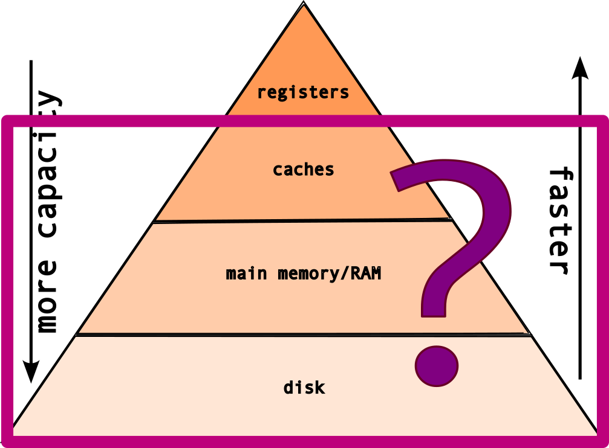
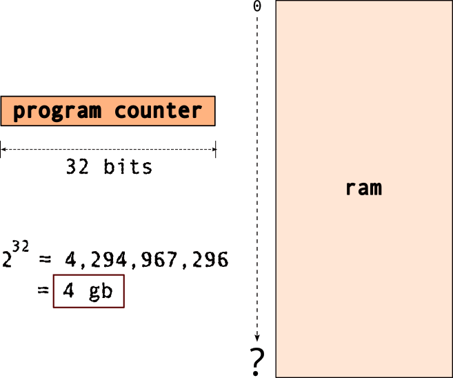
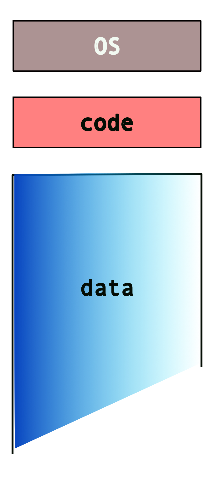
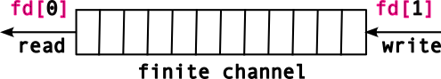
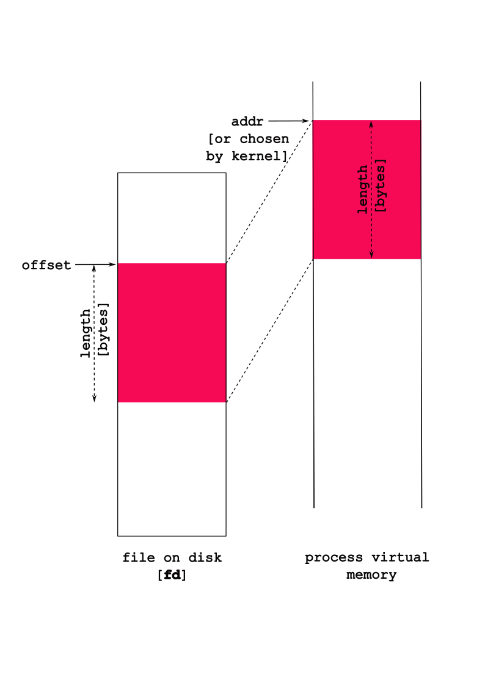

- 1 Intro to Systems Programming
- 2 Memory
- 3 Intro to C
- 4 Intermediate C
- 5 Function Pointers
- 6 C Memory Model, Data-structures, and APIs
- 7 Processes
- 8 Process Descriptors
- 9 Files and File Handling
- 10 I/O: Inter-Process Communication
- 11 Reinforcing Ideas: Assorted Exercises and Event Notification
- 12 Libraries
- 13 Organizing Software with Dynamic Libraries: Exercises and Programming
- 14 System Calls and Memory Management
- 15 UNIX Security: Users, Groups, and Filesystem Permissions
- 16 Security: Attacks on System Programs
- 17 The Android UNIX Personality
- 18 UNIX Containers
- 19 Appendix: C Programming Conventions
1 Intro to Systems Programming
1.1 Computer Organization
Find the slides.
2 Memory
2.1 Computer memory
different shapes, sizes and speeds
- registers
- caches (L1, L2, L3)
- main memory/RAM
- disk (hard disks, flash)
2.1.1 Registers
- fastest form of memory
- this what the processor uses
- e.g.,
a = 3 + 4 ; 3and4→ loaded into registers
2.1.1.1 register “width” | defines “width” of cpu
- “32 bit processor” → 32-bit registers
- “64 bit processor” → 64-bit registers
2.1.1.2 All (known) x86 registers
for the 64-bit architecture [source: wikipedia]

2.1.2 Important question: how much memory is necessary?
But before we answer that, we need to answer this question: why do we need memory?
2.1.3 Why do we need memory?
| component | (typical) sizes |
|---|---|
| programs/code | kilobytes to megabytes |
| temporary values | kilobytes to megabytes* |
| data | kilobytes to terabytes! |
[*depends on the program]
2.1.3.1 So, the memory hierarchy looks like this:

But, if the registers are the fastest type of memory, then why do we need these layers?

Because, registers are expensive!
The classic tradeoff: speed vs size! The faster the memory → more expensive!
2.2 memory layout

2.2.1 Caches
- fast, on-chip memory
- transparent to program
- used by cpu to improve performance
2.2.2 Main Memory
- random access memory [ram]
- typical → gigabytes range
- limited by “width” of cpu/registers
- e.g.
32 bit cpu → max4 gb memory!
Wait, what’s with the “register width”, “memory”…

Memory Addressing:

But what goes into this memory?
The typical memory layout for a program/system looks like this:

But what happens when you have more than one program? Note that each program needs its own access to the OS services and also has to store/mainpulate its own data!
So, do we have something like this (for two programs)?

What if we have more than two programs?
This can get messy, really quick! Also, note that the system may not have enough memory to fit all of these programs and their data. We nave to deal with additional issues such as programs overwiting other programs’ data/memory!
2.2.3 Enter Virtual Memory!

- makes each program “believe”
- it has the entire memory to itself!
- combination of os+hardware
So, instead of this…
we get…
or, at least the programs “think” so!
Hence, programmers need not** worry about other programs!**
3 Intro to C
[Notes]
- Start by talking through slides
You already know C!
well, some of it anyways…
3.0.1 C constructs [if you’re familiar with Java, Python, etc.]
| construct | syntax |
|---|---|
| conditionals | if and else |
| loops | while{}, do...while, for |
| basic types | int, float, double, char |
| compound | arrays*, struct, union, enum |
| functions | ret_val func_name (args){} |
* no range checks!!
C will let you access an array beyond the maximum size that you have specified while creating it. The effects of such access are implementation specific – each platform/operating system will handle it differently. Note that on platforms that don’t have memory protection, this can cause some serious problems!
What’s different [from Java]
- no object-oriented programming
- no function overloading
- no classes!
- we have
structinstead- which is similar but very different
- compiled not interpreted
- pointers!!!
3.0.2 Compound types
contiguous memory layouts: objects within these data types are laid out in memory, next to each other. This becomes important when you’re trying to use pointers to access various elements.
| type | usage |
|---|---|
struct |
related variables (like class) |
union |
same, but shared memory |
enum |
enumeration, assign names |
| array | pointer to contiguous memory |
More details in following sections.
no (built-in) boolean!
C does not have a built in boolean data type. We can mimic it by using integer values, e.g.,
0 |
false |
| any non-zero value | true |
3.0.3 Unix Manual (man) pages
- compilation of unix/C knowledge
man \<topic\>
Organized into sections:
| # | contents |
|---|---|
| 1 | general commands |
| 2 | system calls |
| 3 | library funtions (c) |
| 4 | special files |
| 5 | file formats and conventions |
| 6 | games and screensavers |
| 7 | miscellaneous |
| 8 | system administration |
[the highlighted sections are most relevant to us.]
Consider the following example. If we want to see details about the common C standard library function, printf(), we type:
The initial part of the output will look something like this (run the above command in a terminal for the full output):

[Notes]
- show man 3 printf example
- compare against just man printf
3.0.4 Header Files
- include libraries in your program
- even the C standard library
- similar to
importin java
| method | what is included |
|---|---|
\#include \<stdio.h\> |
common libraries |
\#include \"my_header.h" |
user header file |
Depending on how you invlude your header files, is determined by where they are located on your system:
| method | location |
|---|---|
\#include \<...\> |
header path, e.g., \/usr\/include\/* |
\#include \"..." |
current directory |
* not exhaustive
3.0.5 Some Common C libraries
| library | function |
|---|---|
stdio.h |
standard input/ouput |
stdlib.h |
C standard library/utilities |
unistd.h |
unix standard library |
sys/types.h |
system types library |
string.h |
string manipulation |
math.h |
math utility functions |
3.0.6 Basic Types
These are the basic data types defined by the C language:
| type | description/size |
|---|---|
char |
smallest type, one byte |
short int |
two bytes |
int |
four bytes |
long int/long |
larger int, four-eight bytes |
float |
floating point, four bytes* |
double |
double precision, eight bytes* |
void |
lack of a type |
Important Caveats!
- when we say “one byte” → depends on platform
charis one byte, typically on intel- varies based on,
- architectures (ARM, IBM, INTEL)
- 32-bit vs 64-bit
- * Similarly, the size of the
floatanddoubledata types are not defined by C. Different compilers (and platforms) implement them with different sizes.
[Notes]
- stop with slides here
- switch to code examples
Code Samples
Now, let’s look at some code!
Program output:
This is a basic C program. Some details to note:
<stdio.h>is the header file for the standard I/O library in C- Every C program requires a
main()function – this is where the execution starts and ends (for the most part – we will look at nuances later) - This function expects a return value as an
int. Hence we return0at the end. This return value from main, is the value returned by your program when it completes execution.
Note that this doesn’t have to be the signature of main() but it is typical. We will explore the “proper” signature for main() later on but let’s stick to this.
// this is a single line comment
#include <stdio.h>
int main()
{
char c = 'a' ;
int i ;
float f ;
double d ;
i = 100 ;
f = 1.0 ;
d = 12398723897.2332 ;
printf( "Memory sizes of variables...\n\n \
size of char: %lu \
size of int: %lu \
size of float: %lu \
size of double: %lu\n",
sizeof(c), sizeof(int), sizeof(f), sizeof(d) ) ;
printf( "\n" ) ; // adding an extra line for nice printing at the end
return 0 ;
}Program output:
Memory sizes of variables...
size of char: 1 size of int: 4 size of float: 4 size of double: 8
sizeof() is a unary operator in the programming languages C and C++. It generates the storage size of an expression or a data type, measured in the number of char-sized units. Consequently, the construct sizeof (char) is guaranteed to be 11.
What happens when you try:
man sizeof?
3.0.7 Compound types | struct, enum, unions
[Notes]
- switch to slides for the compound types
- switch back to code examples
The C standard defines multiple compound data types, viz.,
| type | description | size |
|---|---|---|
struct |
collection of different values | sum of all fields |
union |
one of a set of values | size of largest field |
enum |
an enumeration with “named” values | typically size of int |
Code Samples
Consider the following use case: we want to build a calendar. What information do we need? * date * month * year
// this is a single line comment
#include <stdio.h>
struct calendar{
int _date ;
int _month ;
int _year ;
} ;
int main()
{
struct calendar today ; // creating an object of type "calendar"
printf( "size of struct calendar: %lu\n", sizeof(today) ) ;
// let's initialize the object, "today"
// remember, no "constructors"
today._month = 9 ;
today._date = 5 ;
today._year = 2024 ;
printf( "date: %d/%d/%d\n",
today._month, today._date, today._year ) ;
printf( "\n" ) ; // adding an extra line for nice printing at the end
return 0 ;
}Program output:
size of struct calendar: 12
date: 9/5/2024
Are we missing anything else? * what about the day of the week? * so let’s add a field in the struct for the day of the week
// this is a single line comment
#include <stdio.h>
struct calendar{
int _date ;
int _month ;
int _year ;
int _day_of_week ; // 1 -- sunday, 2 -- monday, etc.
} ;
int main()
{
struct calendar today ; // creating an object of type "calendar"
printf( "size of struct calendar: %lu\n", sizeof(today) ) ;
// let's initialize the object, "today"
// remember, no "constructors"
today._month = 9 ;
today._date = 5 ;
today._year = 2024 ;
today._day_of_week = 5 ;
printf( "date: %d/%d/%d\t day: %d\n",
today._month, today._date, today._year, today._day_of_week ) ;
printf( "\n" ) ; // adding an extra line for nice printing at the end
return 0 ;
}Program output:
size of struct calendar: 16
date: 9/5/2024 day: 5
But this is a little tedious. We need to keep track of the mapping, i.e., “1” → “sunday”, “2” → “monday”, etc. Liable to make a mistake or forget, especially if we’re writing a of code that needs to use this mapping.
3.0.7.1 Enter enum
An enum is a way to create an “enumeration”, i.e., a list of things that are spelled out in natural language, but are really just numbers (typically int).
So, we could define something like,
and use if in the code as follows,
// this is a single line comment
#include <stdio.h>
enum weekdays{ sunday, monday, tuesday, wednesday, thursday, friday, saturday } ;
struct calendar{
int _date ;
int _month ;
int _year ;
// int _day_of_week ; // 1 -- sunday, 2 -- monday, etc.
enum weekdays _day_of_week ;
} ;
int main()
{
struct calendar today ; // creating an object of type "calendar"
printf( "size of struct calendar: %lu\n", sizeof(today) ) ;
// let's initialize the object, "today"
// remember, no "constructors"
today._month = 9 ;
today._date = 5 ;
today._year = 2024 ;
// today._day_of_week = 5 ;
today._day_of_week = thursday ;
printf( "date: %d/%d/%d\t day: %d\n",
today._month, today._date, today._year, today._day_of_week ) ;
printf( "\n" ) ; // adding an extra line for nice printing at the end
return 0 ;
}Program output:
size of struct calendar: 16
date: 9/5/2024 day: 4
But, to be honest, this is not very useful. It still prints out a number instead of a string, like “monday”, “tuesday”, etc.
Well, if what we want is a string, then we need to store a string.
// this is a single line comment
#include <stdio.h>
enum weekdays{ sunday, monday, tuesday, wednesday, thursday, friday, saturday } ;
struct calendar{
int _date ;
int _month ;
int _year ;
// int _day_of_week ; // 1 -- sunday, 2 -- monday, etc.
// weekdays _day_of_week ;
char _day_of_week[64] ;
} ;
int main()
{
struct calendar today ; // creating an object of type "calendar"
printf( "size of struct calendar: %lu\n", sizeof(today) ) ;
// let's initialize the object, "today"
// remember, no "constructors"
today._month = 9 ;
today._date = 5 ;
today._year = 2024 ;
// today._day_of_week = 5 ;
// today._day_of_week = thursday ;
today._day_of_week = "thursday" ;
printf( "date: %d/%d/%d\t day: %s\n",
today._month, today._date, today._year, today._day_of_week ) ;
printf( "\n" ) ; // adding an extra line for nice printing at the end
return 0 ;
}Program output:
inline_exec_tmp.c: In function main:
inline_exec_tmp.c:29:24: error: assignment to expression with array type
29 | today._day_of_week = "thursday" ;
| ^
make[1]: *** [Makefile:33: inline_exec_tmp] Error 1Wait, why does this fail?
We cannot assign one array to another! C has no way of knowing how to do this.
One way to bypass this, is to do it at creation time for the today object, as follows:
// all items created and initialized together so this works!
struct calendar today = {9, 5, 2024, "thursday"} ; One alternative is to explicitly set the elements of the array, as follows:
// this is a single line comment
#include <stdio.h>
enum weekdays{ sunday, monday, tuesday, wednesday, thursday, friday, saturday } ;
struct calendar{
int _date ;
int _month ;
int _year ;
// int _day_of_week ; // 1 -- sunday, 2 -- monday, etc.
// weekdays _day_of_week ;
char _day_of_week[10] ;
} ;
int main()
{
struct calendar today ; // creating an object of type "calendar"
printf( "size of struct calendar: %lu\n", sizeof(today) ) ;
// let's initialize the object, "today"
// remember, no "constructors"
today._month = 9 ;
today._date = 5 ;
today._year = 2024 ;
// today._day_of_week = 5 ;
// today._day_of_week = thursday ;
// today._day_of_week = "thursday" ;
today._day_of_week[0] = 't' ;
today._day_of_week[1] = 'h' ;
today._day_of_week[2] = 'u' ;
today._day_of_week[3] = 'r' ;
today._day_of_week[4] = 's' ;
today._day_of_week[5] = 'd' ;
today._day_of_week[6] = 'a' ;
today._day_of_week[7] = 'y' ;
today._day_of_week[8] = '\0' ;
printf( "date: %d/%d/%d\t day: %s\n",
today._month, today._date, today._year, today._day_of_week ) ;
printf( "\n" ) ; // adding an extra line for nice printing at the end
return 0 ;
}Program output:
size of struct calendar: 24
date: 9/5/2024 day: thursday
[Notes]
- switch to slides for the C string/array slides
- switch back to code examples
strings in C → an array of characters that are null terminated, i.e., \0. So the `day_of_week’ field looks like this.

There’s a reason I’ve used the arrow in the above image. :wink:
So what is a union?
A union is a value that may have any of multiple representations or formats within the same area of memory; that consists of a variable that may hold such a data structure.2
A union specifies the oermitted data types that may be stored in that region of memory, e.g., an int and a float, but never both. Hence, a union can hold only one data type at a time. Once a new value is assigned, the existing data is overwritten with the new value.
Syntax is similar to struct but the effects are very different.
Code Samples
#include <stdio.h>
struct calendar{
int _date ;
int _month ;
int _year ;
// int _day_of_week ; // 1 -- sunday, 2 -- monday, etc.
// weekdays _day_of_week ;
char _day_of_week[10] ;
} ;
union info{
int _age ;
double _weight ;
} ;
int main()
{
union info my_info ;
struct calendar today ; // creating an object of type "calendar"
// look at the output of this sizeof!
printf( "size of struct = %lu\t size of union = %lu\n",
sizeof(today), sizeof(my_info) ) ;
// now I'm using the "int" part of the union
my_info._age = 23452345 ;
printf( "\n age = %d\t weight = %f\n", my_info._age, my_info._weight ) ;
// now I'm using the "float" part of the union
my_info._weight = 999999 ;
printf( "age = %d\t weight = %f\n", my_info._age, my_info._weight ) ;
printf( "\n" ) ;
return 0 ; // default value
}Program output:
size of struct = 24 size of union = 8
age = 23452345 weight = 0.000000
age = 0 weight = 999999.000000
As we see, we can only use one of the fields at any point in time. Unions aren’t very common today bit still do find use in may systems with limited memory, e.g., embedded systems.
4 Intermediate C
4.1 Objectives
- Recalling C types with a focus on pointers.
- Focus on more advanced features like
void *s and function pointers. - Practice thinking about C programs as memory.
4.2 Types
4.2.1 Basic types
char- think “one byte”. Same assigned char.short int- think “two bytes”. Same asshort.int- think “four bytes”.long int- think “potentially largerint”. Most commonly known solely aslong.float,double- floating point values (not used in the class).void- the lack of a type. Variables cannot have this type.
/* `void` is fine to denote "no variables/return values", ... */
int
main(void)
{
/* ...but not fine on variables */
void a;
return 0;
}Program output:
inline_exec_tmp.c: In function main:
inline_exec_tmp.c:6:7: error: variable or field a declared void
6 | void a;
| ^
make[1]: *** [Makefile:33: inline_exec_tmp] Error 1enum- anintorshort intwith some “named” values.
#include <stdio.h>
enum weekdays {
MON, TUES, WED, THURS, FRI
};
int
main(void)
{
printf("MON = %d, TUES = %d, ..., FRI = %d\n", MON, TUES, FRI);
return 0;
}Program output:
MON = 0, TUES = 1, ..., FRI = 4You can choose the values explicitly (e.g. enum grades { MON = 1, TUES = 2, WED = 3, THURS = 4, FRI = 5};).
Modifiers
unsigned- variables that cannot be negative. Given that variables have a fixed bit-width, they can use the extra bit (“negative” no longer needs to be tracked) to instead represent numbers twice the size ofsignedvariants.signed- signed variables. You don’t see this modifier as much becausechar,int,longall default tosigned.long- Used to modify another type to make it larger in some cases.long intcan represent larger numbers and is synonymous withlong.long long int(orlong long) is an even larger value!static- this variable should not be accessible outside of the .c file in which it is defined.const- an immutable value. We won’t focus much on this modifier.volatile- this variable should be “read from memory” every time it is accessed. Confusing now, relevant later, but not a focus.
4.2.1.1 Examples
int
main(void)
{
char a;
signed char a_signed; /* same type as `a` */
char b; /* values between [-128, 127] */
unsigned char b_unsigned; /* values between [0, 256] */
int c;
short int c_shortint;
short c_short; /* same as `c_shortint` */
long int c_longint;
long c_long; /* same type as `c_longint` */
return 0;
}Program output:
You might see all of these, but the common primitives, and their sizes:
#include <stdio.h>
/* Commonly used types that you practically see in a lot of C */
int
main(void)
{
char c;
unsigned char uc;
short s;
unsigned short us;
int i;
unsigned int ui;
long l;
unsigned long ul;
printf("char:\t%ld\nshort:\t%ld\nint:\t%ld\nlong:\t%ld\n",
sizeof(c), sizeof(s), sizeof(i), sizeof(l));
return 0;
}Program output:
char: 1
short: 2
int: 4
long: 84.2.2 Common POSIX types and values
stddef.h3:size_t,usize_t,ssize_t- types for variables that correspond to sizes. These include the size of the memory request tomalloc, the return value fromsizeof, and the arguments and return values fromread/write/…ssize_tis signed (allows negative values), while the others are unsigned.NULL- is just#define NULL ((void *)0)
limits.h4:INT_MAX,INT_MIN,UINT_MAX- maximum and minimum values for a signed integer, and the maximum value for an unsigned integer.LONG_MAX,LONG_MIN,ULONG_MAX- minimum and maximum numerical values forlongs andunsigned longs.- Same for
short ints(SHRT_MAX, etc…) andchars (CHAR_MAX, etc…).
4.2.3 Format Strings
Many standard library calls take “format strings”. You’ve seen these in printf. The following format specifiers should be used:
%d-int%ld-long int%u-unsigned int%c-char%x-unsigned intprinted as hexadecimal%lx-long unsigned intprinted as hexadecimal%p- prints out any pointer value,void *%s- prints out a string,char *
Format strings are also used in scanf functions to read and parse input.
You can control the spacing of the printouts using %NX where N is the number of characters you want printed out (as spaces), and X is the format specifier above. For example, "%10ld"would print a long integer in a 10 character slot. Adding \n and \t add in the newlines and the tabs. If you need to print out a “\”, use \\.
4.2.3.1 Example
#include <stdio.h>
#include <limits.h>
int
main(void)
{
printf("Integers: %d, %ld, %u, %c\n"
"Hex and pointers: %lx, %p\n"
"Strings: %s\n",
INT_MAX, LONG_MAX, UINT_MAX, '*',
LONG_MAX, &main,
"hello world");
return 0;
}Program output:
Integers: 2147483647, 9223372036854775807, 4294967295, *
Hex and pointers: 7fffffffffffffff, 0x55bbeaaba149
Strings: hello world4.2.4 Compound types
struct- A collection of different values. Example: objects with many different fields.union- One of a set of values. Example: what if you want to represent data for one food item among others.
Unions are not very common, but are sometimes useful. The size of a union is the maximum size of its fields. In contrast, the struct is the sum of the sizes of each of its fields.
4.2.4.1 Example
#include <stdio.h>
struct hamburger {
int num_burgers;
int cheese;
int num_patties;
};
union food {
int num_eggs;
struct hamburger burger;
};
/* Same contents as the union. */
struct all_food {
int num_eggs;
struct hamburger burger;
};
int
main(void)
{
union food f_eggs, f_burger;
/* now I shouldn't access `.burger` in `f_eggs` */
f_eggs.num_eggs = 10;
/* This is just syntax for structure initialization. */
f_burger.burger = (struct hamburger) {
.num_burgers = 5,
.cheese = 1,
.num_patties = 1
};
/* now shouldn't access `.num_eggs` in `f_burger` */
printf("Size of union: %ld\nSize of struct: %ld\n",
sizeof(union food), sizeof(struct all_food));
return 0;
}Program output:
Size of union: 12
Size of struct: 16We can see the effect of the union: The size is max(fields) rather than sum(fields). What other examples can you think of where you might want unions?
An aside on syntax: The structure initialization syntax in this example is simply a shorthand. The
struct hamburgerinitialization above is equivalent to:Though since there are so many
.s, this is a little confusing. We’d typically want to simply as:More on
->in the next section.
4.2.5 Pointers & Arrays
Variables can have be pointer types (e.g. int *a). Variables with pointer types are pointers and hold an address to the a variable of the type to which they point, or to NULL. NULL denotes that the pointer is not valid. You want to imagine that variables hold data, for example int a = 6:
a---+
| 6 |
+---+A pointer, int *b = &a should be imagined as a pointer:
b ---> a---+
| 6 |
+---+Note that the “address of”, & operator takes a variable and returns its address. If you print out the pointer, printf("%p", b), you’ll get the address (i.e. the arrow) To follow the arrow, you must dereference the pointer: *b == 6.
#include <stdio.h>
static int value;
/* here, the `*` is part of the type "int *", i.e. a pointer to an `int` */
void
foo(int *ptr)
{
/*
* Here, the `*` is the dereference operation, and
* gives us the value that is pointed to.
*/
*ptr = 1;
}
int
main(void)
{
printf("value is initialized to %d\n", value);
foo(&value); /* `&` gives us the address of the variable `value` */
printf("value updated to %d\n", value);
return value - 1;
}Program output:
value is initialized to 0
value updated to 1Pointers are necessary as they enable us to build linked data-structures (linked-lists, binary trees, etc…). Languages such as Java assume that every single object variable is a pointer, and since all object variables are pointers, they don’t need special syntax for them.
Arrays are simple contiguous data items, all of the same type. int a[4] = {6, 7, 8, 9} should be imagined as:
a ---> +---+---+---+---+
| 6 | 7 | 8 | 9 |
+---+---+---+---+When you access an array item, a[2] == 8, C is really treating a as a pointer, doing pointer arithmetic, and dereferences to find offset 2.
#include <stdio.h>
int main(void) {
int a[] = {6, 7, 8, 9};
int n = 1;
printf("0th index: %p == %p; %d == %d\n", a, &a[0], *a, a[0]);
printf("nth index: %p == %p; %d == %d\n", a + n, &a[n], *(a + n), a[n]);
return 0;
}Program output:
0th index: 0x7ffe7125c1f0 == 0x7ffe7125c1f0; 6 == 6
nth index: 0x7ffe7125c1f4 == 0x7ffe7125c1f4; 7 == 7Making this a little more clear, lets understand how C accesses the nth item. Lets make a pointer int *p = a + 1 (we’ll just simply and assume that n == 1 here), we should have this:
p ---------+
|
V
a ---> +---+---+---+---+
| 6 | 7 | 8 | 9 |
+---+---+---+---+Thus if we dereference p, we access the 1st index, and access the value 7.
#include <stdio.h>
int
main(void)
{
int a[] = {6, 7, 8, 9};
/* same thing as the previous example, just making the pointer explicit */
int *p = a + 1;
printf("nth index: %p == %p; %d == %d\n", p, &a[1], *p, a[1]);
return 0;
}Program output:
nth index: 0x7ffd0db89994 == 0x7ffd0db89994; 7 == 7We can see that pointer arithmetic (i.e. doing addition/subtraction on pointers) does the same thing as array indexing plus a dereference. That is, *(a + 1) == a[1]. For the most part, arrays and pointers can be viewed as very similar, with only a few exceptions5.
Pointer arithmetic should generally be avoided in favor of using the array syntax. One complication for pointer arithmetic is that it does not fit our intuition for addition:
#include <stdio.h>
int
main(void)
{
int a[] = {6, 7, 8, 9};
char b[] = {'a', 'b', 'c', 'd'};
/*
* Calculation: How big is the array?
* How big is each item? The division is the number of items.
*/
int num_items = sizeof(a) / sizeof(a[0]);
int i;
for (i = 0; i < num_items; i++) {
printf("idx %d @ %p & %p\n", i, a + i, b + i);
}
return 0;
}Program output:
idx 0 @ 0x7ffe0f32ae70 & 0x7ffe0f32ae84
idx 1 @ 0x7ffe0f32ae74 & 0x7ffe0f32ae85
idx 2 @ 0x7ffe0f32ae78 & 0x7ffe0f32ae86
idx 3 @ 0x7ffe0f32ae7c & 0x7ffe0f32ae87Note that the pointer for the integer array (a) is being incremented by 4, while the character array (b) by 1. Focusing on the key part:
idx 0 @ ...0 & ...4
idx 1 @ ...4 & ...5
idx 2 @ ...8 & ...6
idx 3 @ ...c & ...7
^ ^
| |
Adds 4 ----+ |
Adds 1 -----------+Thus, pointer arithmetic depends on the size of the types within the array. There are types when one wants to iterate through each byte of an array, even if the array contains larger values such as integers. For example, the memset and memcmp functions set each byte in an range of memory, and byte-wise compare two ranges of memory. In such cases, casts can be used to manipulate the pointer type (e.g. (char *)a enables a to not be referenced with pointer arithmetic that iterates through bytes).
4.2.5.1 Example
#include <stdio.h>
/* a simple linked list */
struct student {
char *name;
struct student *next;
};
struct student students[] = {
{.name = "Penny", .next = &students[1]}, /* or `students + 1` */
{.name = "Gabe", .next = NULL}
};
struct student *head = students;
/*
* head --> students+------+
* | Penny | Gabe |
* | next | next |
* +-|-----+---|--+
* | ^ +----->NULL
* | |
* +-----+
*/
int
main(void)
{
struct student *i;
for (i = head; i != NULL; i = i->next) {
printf("%s\n", i->name);
}
return 0;
}Program output:
Penny
Gabe4.2.5.2 Generic Pointer Types
Generally, if you want to treat a pointer type as another, you need to use a cast. You rarely want to do this (see the memset example below to see an example where you might want it). However, there is a need in C to have a “generic pointer type” that can be implicitly cast into any other pointer type. To get a sense of why this is, two simple examples:
- What should the type of
NULLbe?
NULL is used as a valid value for any pointer (of any type), thus NULL must have a generic type that can be used in the code as a value for any pointer. Thus, the type of NULL must be void *.
mallocreturns a pointer to newly-allocated memory. What should the type of the return value be?
C solves this with the void * pointer type. Recall that void is not a valid type for a variable, but a void * is different. It is a "generic pointer that cannot be dereferenced*. Note that dereferencing a void * pointer shouldn’t work as void is not a valid variable type (e.g. void *a; *a = 10; doesn’t make much sense because *a is type void).
#include <stdlib.h>
int
main(void)
{
int *intptr = malloc(sizeof(int)); /* malloc returns `void *`! */
*intptr = 0;
return *intptr;
}Program output:
Data-structures often aim to store data of any type (think: a linked list of anything). Thus, in C, you often see void *s to reference the data they store.
4.2.5.3 Relationship between Pointers, Arrays, and Arrows
Indexing into arrays (a[b]) and arrows (a->b) are redundant syntactic features, but they are very convenient.
&a[b]is equivalent toa + bwhereais a pointer andbis an index.a[b]is equivalent to*(a + b)whereais a pointer andbis an index.a->bis equivalent to(*a).bwhereais a pointer to a variable with a structure type that hasbas a field.
Generally, you should always try and stick to the array and arrow syntax were possible, as it makes your intention much more clear when coding than the pointer arithmetic and dereferences.
4.3 Memory Allocation
Dynamic memory allocations
void *malloc(size_t size)- allocatesizememory, or returnNULL.void *calloc(size_t nmemb, size_t size)- allocatenmemb * sizebytes, and initialize them to0.void *realloc(void *ptr, size_t size)- pass in a previous allocation, and either grow/shrink it tosize, or allocate a new chunk of memory and copy the data inptrinto it. Return the memory of sizesize, orNULLon error.void free(void *ptr)- deallocate previously allocated memory (returned from any of the above).
A few things to keep in mind:
- If you want to allocate an array, then you have to do the math yourself for the array size. For example,
int *arr = malloc(sizeof(int) * n);to allocate an array ofints with a length ofn. mallocis not guaranteed to initialize its memory to0. You must make sure that your array gets initialized. It is not uncommon to do amemset(arr, 0, sizeof(int) * n);to set the memory0.callocis guaranteed to initialize all its allocated memory to0.
4.3.1 Common Errors
- Allocation error. You must check the return value of memory allocation functions for
NULL, and handle the error appropriately.
#include <stdlib.h>
int
main(void)
{
int *a = malloc(sizeof(int));
/* Error: did not check return value! */
*a = 1;
free(a);
return 0;
}Program output:
- Dangling pointer. If you maintain a pointer to a chunk of memory that you
free, and then dereference that pointer, bad things can happen. The memory might have already been re-allocated due to another call tomalloc, and is used for something completely different in your program. It is up to you as a programmer to avoidfreeing memory until all references to it are dropped.
#include <stdlib.h>
int
main(void)
{
int *a = malloc(sizeof(int));
if (a == NULL) return -1;
free(a);
/* Error: accessing what `a` points to after `free`! */
return *a;
}Program output:
- Memory leaks. If you remove all references to memory, but don’t
freeit, then the memory will never get freed. This is a memory leak.
#include <stdlib.h>
int
main(void)
{
int *a = malloc(sizeof(int));
if (!a) return -1;
a = NULL;
/* Error: never `free`d `a` and no references to it remain! */
return 0;
}Program output:
- Double
free. If youfreethe memory twice, bad things can happen. You could confuse the memory allocation logic, or you could accidentallyfreean allocation made after the firstfreewas called.
#include <stdlib.h>
int
main(void)
{
int *a = malloc(sizeof(int));
if (!a) return -1;
free(a);
free(a);
/* Error: yeah, don't do that! */
return 0;
}Program output:
free(): double free detected in tcache 2
make[1]: *** [Makefile:30: inline_exec] Abortedvalgrind will help you debug the last three of these issues, and later in the class, we’ll develop a library to help debug the first.
4.4 Exercises
4.4.1 C is a Thin Language Layer on Top of Memory
We’re going to look at a set of variables as memory. When variables are created globally, they are simply allocated into subsequent addresses.
#include <stdio.h>
#include <string.h>
void print_values(void);
unsigned char a = 1;
int b = 2;
struct foo {
long c_a, c_b;
int *c_c;
};
struct foo c = (struct foo) { .c_a = 3, .c_c = &b };
unsigned char end;
int
main(void)
{
size_t vars_size;
unsigned int i;
unsigned char *mem;
/* Q1: What would you predict the output of &end - &a is? */
printf("Addresses:\na @ %p\nb @ %p\nc @ %p\nend @ %p\n"
"&end - &a = %ld\n", /* Note: you can split strings! */
&a, &b, &c, &end, &end - &a);
printf("\nInitial values:\n");
print_values();
/* Q2: Describe what these next two lines are doing. */
vars_size = &end - &a;
mem = &a;
/* Q3: What would you expect in the following printout (with the print uncommented)? */
printf("\nPrint out the variables as raw memory\n");
for (i = 0; i < vars_size; i++) {
unsigned char c = mem[i];
// printf("%x ", c);
}
/* Q4: What would you expect in the following printout (with the print uncommented)? */
memset(mem, 0, vars_size);
/* memset(a, b, c): set the memory starting at `a` of size `c` equal `b` */
printf("\n\nPost-`memset` values:\n");
// print_values();
return 0;
}
void
print_values(void)
{
printf("a = %d\nb = %d\nc.c_a = %ld\nc.c_b = %ld\nc.c_c = %p\n",
a, b, c.c_a, c.c_b, c.c_c);
}Program output:
Addresses:
a @ 0x55c388805010
b @ 0x55c388805014
c @ 0x55c388805020
end @ 0x55c388805039
&end - &a = 41
Initial values:
a = 1
b = 2
c.c_a = 3
c.c_b = 0
c.c_c = 0x55c388805014
Print out the variables as raw memory
Post-`memset` values:Question Answer Q1-4 in the code, uncommenting and modifying where appropriate.
4.4.1.1 Takeaways
- Each variable in C (including fields in structs) want to be aligned on a boundary equal to the variable’s type’s size. This means that a variable (
b) with an integer type (sizeof(int) == 4) should always have an address that is a multiple of its size (&b % sizeof(b) == 0, so anint’s address is always divisible by4, along’s by8). - The operation to figure out the size of all the variables,
&end - &a, is crazy. We’re used to performing math operations values on things of the same type, but not on pointers. This is only possible because C sees the variables are chunks of memory that happen to be laid out in memory, one after the other. - The crazy increases with
mem = &a, and our iteration throughmem[i]. We’re able to completely ignore the types in C, and access memory directly!
Question: What would break if we changed char a; into int a;? C doesn’t let us do math on variables of any type. If you fixed compilation problems, would you still get the same output?
4.4.2 Quick-and-dirty Key-Value Store
Please read the man pages for lsearch and lfind. man pages can be pretty cryptic, and you are aiming to get some idea where to start with an implementation. An simplistic, and incomplete initial implementation:
#include <stdio.h>
#include <assert.h>
#include <search.h>
#define NUM_ENTRIES 8
struct kv_entry {
int key; /* only support keys for now... */
};
/* global values are initialized to `0` */
struct kv_entry entries[NUM_ENTRIES];
size_t num_items = 0;
/**
* Insert into the key-value store the `key` and `value`.
* Return `0` on successful insertion of the value, or `-1`
* if the value couldn't be inserted.
*/
int
put(int key, int value)
{
return 0;
}
/**
* Attempt to get a value associated with a `key`.
* Return the value, or `0` if the `key` isn't in the store.
*/
int
get(int key)
{
return 0;
}
int
compare(const void *a, const void *b)
{
/* We know these are `int`s, so treat them as such! */
const struct kv_entry *a_ent = a, *b_ent = b;
if (a_ent->key == b_ent->key) return 0;
return -1;
}
int
main(void)
{
struct kv_entry keys[] = {
{.key = 1},
{.key = 2},
{.key = 4},
{.key = 3}
};
int num_kv = sizeof(keys) / sizeof(keys[0]);
int queries[] = {4, 2, 5};
int num_queries = sizeof(queries) / sizeof(queries[0]);
int i;
/* Insert the keys. */
for (i = 0; i < num_kv; i++) {
lsearch(&keys[i], entries, &num_items, sizeof(entries) / sizeof(entries[0]), compare);
}
/* Now lets lookup the keys. */
for (i = 0; i < num_queries; i++) {
struct kv_entry *ent;
int val = 0;
ent = lfind(&queries[i], entries, &num_items, sizeof(entries[0]), compare);
if (ent != NULL) {
val = ent->key;
}
printf("%d: %d @ %p\n", i, val, ent);
}
return 0;
}Program output:
0: 4 @ 0x558a79c7104c
1: 2 @ 0x558a79c71044
2: 0 @ (nil)You want to implement a simple “key-value” store that is very similar in API to a hash-table (many key-value stores are implemented using hash-tables!).
Questions/Tasks:
- Q1: What is the difference between
lsearchandlfind? Themanpages should help here (man 3 lsearch) (you can exit from amanpage using ‘q’). What operations would you want to perform with each (and why)? - Q2: The current implementation doesn’t include values at all. It returns the keys instead of values. Expand the implementation to properly track values.
- Q3: Encapsulate the key-value store behind the
putandgetfunctions. - Q4: Add testing into the
mainfor the relevant conditions and failures ingetandput. # Pointers | Casting Slides
4.5 Pointers and Arrays
..are the same thing!
- just different conventions to access memory
- e.g., pointer arithmetic over an array of ints
- moves addresses by size of the int →
4bytes - no interaction with individual bytes
- only whole ints
4.6 Pointer Arithmetic
- consider an integer array →
int a[5] 5ints, each of4bytes
- so
a[0]is:
- so
a[1]is → same as++a!
- we cannot access the individual bytes, i.e., these ones:

what if we want to access the individual bytes?
4.7 Pointer Casting!
- can cast from one pointer type to another!
- between any two pointers!
- a pointer is always the same size, i.e.,
4bytes - making it point to something else
- doesn’t change the memory underneath
- but, changes pointer arithmetic!
4.7.1 Casting from int* to char*
- now, as before, if we have →
int a[5] - and we do,
char* pc = (char*) a ; pcpoints to the same memory region asa- but now, can treat it as characters
i.e., one byte
so
pc[0]is:
- so
pc[1]is → same as++pc!
4.7.2 Example
Consider the following code:
#include <stdio.h>
#include <stdlib.h>
#include <assert.h>
int main()
{
int* a = (int*)malloc( sizeof(int) ) ;
assert(a != NULL) ; // SAME as assert (a)
*a = 1145258561 ;
printf( "a = %d\n", *a ) ;
char* ppc = (char*) a ;
for(unsigned int i = 0 ; i < sizeof(a); ++i )
printf( "%c ", *pc++ ) ;
printf("\n") ;
return 0 ;
}4.8 Pointer Casting | void*
- can cast any point to a
void* - all of these are valid:
- can cast any point to a
void* - all of these are valid:
- cannot dereference a
void*directly! compiler does not know the type
5 Function Pointers
Functions have types too. E.g.,
The “type” of this function is: * takes as input two arguments → one int and one double * returns nothing, hence return type is void * note: this is not the same as a return type of void*
Sometimes, you need to decide which function to call at run time. Why?
5.0.1 Example | Bubble Sort
[Follow along with the Generic Bubble Sort Code]
How do you write a bubble sort? Say for an array of ints?
#include <stdio.h>
#include <stdlib.h>
#include <assert.h>
// Sorting ints
void bubble_sort_int( int array[], int array_size )
{
for( unsigned int i = 0 ; i < array_size-1 ; ++i )
{
for( unsigned int j = 0 ; j < i ; ++j )
{
if( array[j] > array[j+1] )
{
int temp = array[j] ;
array[j] = array[j+1] ;
array[j+1] = temp ;
}
}
}
}
// printing out an array
void print_array( int array[], int array_size )
{
printf( "array = " ) ;
for( unsigned int i = 0 ; i < array_size ; ++i )
printf( "%d ", array[i] ) ;
}
int main()
{
int my_array[] = { 2341, 8632, 3, 2344, 747645 } ;
int array_size = 5 ;
// sort the array
bubble_sort( my_array, array_size ) ;
print_array( my_array, array_size ) ;
printf( "\n" ) ;
return 0 ;
}Program output:
inline_exec_tmp.c: In function bubble_sort_int:
inline_exec_tmp.c:8:33: warning: comparison of integer expressions of different signedness: unsigned int and int [-Wsign-compare]
8 | for( unsigned int i = 0 ; i < array_size-1 ; ++i )
| ^
inline_exec_tmp.c: In function print_array:
inline_exec_tmp.c:26:33: warning: comparison of integer expressions of different signedness: unsigned int and int [-Wsign-compare]
26 | for( unsigned int i = 0 ; i < array_size ; ++i )
| ^
inline_exec_tmp.c: In function main:
inline_exec_tmp.c:36:5: warning: implicit declaration of function bubble_sort; did you mean bubble_sort_int? [-Wimplicit-function-declaration]
36 | bubble_sort( my_array, array_size ) ;
| ^~~~~~~~~~~
| bubble_sort_int
/usr/bin/ld: /tmp/ccJP3rA2.o: in function `main':
/home/sibin/Teaching/CSCI_2401/lectures/inline_exec_tmp.c:36: undefined reference to `bubble_sort'
collect2: error: ld returned 1 exit status
make[1]: *** [Makefile:33: inline_exec_tmp] Error 1This works for an array of ints. But what if I want to sort an array of double?
Maybe, write a new function to do that?
// Sorting ints
void bubble_sort_double( double array[], int array_size )
{
for( unsigned int i = 0 ; i < array_size-1 ; ++i )
{
for( unsigned int j = 0 ; j < i ; ++j )
{
if( array[j] > array[j+1] )
{
double temp = array[j] ;
array[j] = array[j+1] ;
array[j+1] = temp ;
}
}
}
}But what if I want to sort an array of char? Strings? floats? My custom structs? Do we write one function for each?
void bubble_sort_char( char array[], int array_size ){...}
void bubble_sort_strings( char* array[], int array_size ){...}
void bubble_sort_float( float array[], int array_size ){...}
void bubble_sort_struct_student( struct student array[], int array_size ){...}But what if we don’t know which one will be needed until run time?*
So, depending on the data that we’re given, or some input from the user, we may have to pick one of the above but won’t know of the choice at compile time.
Enter function pointers!
5.0.2 Example | Generic Bubble Sort
A sorting algorithm, at its heart, has two parts:
- compare: given two elements, let us know which is larger/greater
- swap: given two elements, exchange their values
so, in a generic sense, we have:
hence, we can rewrite the bubble sort function, in a “generic” form as:
// Sorting | Generic
void generic_bubble_sort(...)
{
for( unsigned int i = 0 ; i < array_size-1 ; ++i )
for( unsigned int j = 0 ; j < i ; ++j )
if( is_greater( array[j], array[j+1]) )
swap( array[j], array[j+1] ) ;
}But, what are the inputs to the function?
We first need to define the type of the array. Since we won’t know the type of the data elements in the array, we can’t pick a specific array type.
But, remember: * arrays and pointers are interchangeable * can cast from any pointer type to void* and back
using this, we define the array as a void*:
As before, we need to know the size of the entire array, so we can now expand the function signature more:
Remember that a void* pointer is just a pointer to a block of memory. C does not know the type of each element in the array. So, we cannot do: * array[i] → since the type is a void*
We can use pointer arithmetic with void* so this is possible: * array+i → but that moves the pointer forward by i bytes
and not by the number of bytes of the data type. Recall, * char* pc ; pc+1 ; → advances by 1 byte * int* pi ; pi+1 ; → advances by 4 bytes
Hence, we need information about the size of each element, i.e.,
So, we can do: array + (i * element_size) to move to the next element in the array
So, for an int array, we get (element_size = 4):
and for a char array, we get (element_size = 1):
Using this information about element_size, we can rewrite the generic bubble sort function as:
// Sorting | Generic
void generic_bubble_sort( void* array, int array_size,
int element_size )
{
for( unsigned int i = 0 ; i < array_size-1 ; ++i )
for( unsigned int j = 0 ; j < i ; ++j )
if( is_greater( array + (j * element_size), array + ((j+1) * element_size )) )
swap( array + (j * element_size), array + ((j+1) * element_size )) ) ;
}Now we see the generic version of bubble sort taking shape.
5.0.3 What is “generic”?
But we are still missing critical information, viz., what are is_greater() and swap()?
Remember that since the generic_bubble_sort() function doesn’t know which exact type it is operating on, we need to somehow provide it with the actual functions that will carry out the comparison and swapping, depending on the type of the array being passed in. For instance, if we are comparing integers, we need a comparator and swap that can operate on integers and similarly ones for structs, doubles, etc.
Wouldn’t it be great, if we could just send in the specific functions as arguments to generic_bubble_sort(), say like,
void generic_bubble_sort( void* array, int array_size,
int element_size,
<SOME_TYPE> is_greater,
<SOME_TYPE> swap )
{
for( unsigned int i = 0 ; i < array_size-1 ; ++i )
for( unsigned int j = 0 ; j < i ; ++j )
if( is_greater( array + (j * element_size), array + ((j+1) * element_size )) )
swap( array + (j * element_size), array + ((j+1) * element_size )) ) ;
}This is precisely where function pointers come in.
We can define is_greater() and swap() to be pointers to functions, i.e., to a type of function (the signatures). Hence, a comparator function pointer would look like:
Recall that the typedef keyword associates a name with a type. In the above example, we are saying that comparator_function_pointer is now a name that refers to the (function) type, int (*)( void*, void* ), i.e., a pointer to a function that takes two arguments, each of type void* and returns and int.
Note, that the job of a comparator function is to take two values and, * return positive (non-zero) values if l > r or * a zero if l <= r.
We can define the swap function pointer in a similar manner:
where, swap_function_pointer is a name that refers to the (function) type, void (*)( void*, void* ) since such a function doens’t need to return anything, just swap the two elements pointed to by the void* arguments.
Updating our sorting function to use the function pointers,
void generic_bubble_sort( void* array, int array_size,
int element_size,
comparator_function_pointer is_greater,
swap_function_pointer swap )
{
for( unsigned int i = 0 ; i < array_size-1 ; ++i )
for( unsigned int j = 0 ; j < i ; ++j )
if( is_greater( array + (j * element_size), array + ((j+1) * element_size )) )
swap( array + (j * element_size), array + ((j+1) * element_size )) ) ;
}So, is_greater is now a function pointer of type, comparator_function_pointer and swap is a function pointer of type, swap_function_pointer.
NOTE: function pointers are invoked exactly like regular functions, i.e., is_greater(...) and swap(...). The above code will work without any changes.
5.0.4 Generic to concrete functions
Eventually, we need to decide what it is that we are sorting. Is it an array of ints, doubless, structs, etc. And at that point in time, we will need the actual, **concrete* functions for comparing and swapping ints (or doubles or whatever).
We we define the two functions (using int as an example):
// Compare and Swap functions for integers
int is_greater_than_int( void* l, void* r )
{
// cast it from void* to relevant type, int*
// since we cannot dereference void*
int* left = l ;
int* right = r ;
// compare and return result
if( *left > *right )
return 1 ;
else
return 0 ;
// Can just use this one line instead but not doing so for clarity
// return ( *l > *r ? 1 : 0 ) ;
}
void swap_int( void* l, void* r )
{
// cast it from void* to relevant type, int*
// since we cannot dereference void*
int* left = l ;
int* right = r ;
int temp = *left ;
// swap
*left = *right ;
*right = temp ;
}We can define equivalent functions for double,
// Compare and Swap functions for doubles
int is_greater_than_double( void* l, void* r )
{
double* left = l ;
double* right = r ;
if( *left > *right )
return 1 ;
else
return 0 ;
}
void swap_double( void* l, void* r )
{
double* left = l ;
double* right = r ;
double temp = *left ;
*left = *right ;
*right = temp ;
}NOTE: the type signatures of the concrete functions must exactly match that of the corresponding function pointers. Otherwise it will result in compile time errors.
5.0.5 Putting it all Together | Using Function Pointers
Now we are ready to use the concrete functions and the pointers in our code:
int main()
{
int my_array_int[] = { 2341, 8632, 3, 2344, 747645 } ;
int array_size = 5 ;
// calling the INTEGER version with the concrete integer comparator and swap
generic_bubble_sort( my_array_int, array_size,
sizeof(int), /*element size*/
is_greater_than_int,
swap_int ) ;
// calling the DOUBLE version with the concrete DOUBLE comparator and swap
double my_double_array[] = {1.0, 9485.2, 34.567, 9383.243, 44.1 } ;
generic_bubble_sort( my_double_array, array_size,
sizeof(double), /*element size*/
is_greater_than_double,
swap_double ) ;
return 0 ;
}As we see from the above, we are using the same generic_bubble_srt function to sort both, arrays of int and double. The only difference is the different concrete versions of the comparator and swap functions that we pass to the sorting function.
5.0.6 Why bother if we need concrete functions anyways?
Using function pointers allows us to do a few things well: 1. code reuse: the code for sorting doesn’t need to be rewritten each time. In fact, when we have larger, more complex, functions, this will be a lifesaver as we can implement the main “concept” just once and then write “specialized” concrete functions (usually much smaller) as needed. 2. dynamic dispatch: oftentimes, it may not be clear which version of the concrete functions are needed, until runtime! In our example, what if we don’t know if we’re given arrays of ints or doubles until we receive the data at runtime? Then we cannot know which concrete function is to be invoked while writing the code. Hence, we can pick the appropriate function pointer at run time and the code will work correctly! 3. specialization: different data types require different handling. The way we sort numbers will not be the same way we sort strings or other, more complex, data types (e.g., user defined structs).
5.0.7 In-class Exercise | Generic Insertion Sort for struct
Fill out the missing elements in this code:
#include <stdio.h>
#include <stdlib.h>
#define NAME_LENGTH 128
struct map{
char _country[NAME_LENGTH] ;
char _capital[NAME_LENGTH] ;
} ;
// DEFINE TWO FUNCTION POINTERS, ONE EACH FOR COMPARE AND SWAP
// UNCOMMENT THE TWO ARGUMENTS ONCE YOU DEFINE THE FUNCTION POINTERS
void generic_insertion_sort( void* array, int array_size, int element_size
/*is_greater_than my_comparator,
swap my_swap*/ )
{
}
// CREATE A NEW STRUCT AND RETURN A POINTER TO IT
struct map* create_new_struct(/*...*/)
{
}
// CREATE THE COMPARATOR AND SWAP FUNCTIONS HERE
// FUNCTION TO PRINT THE ARRAY OF STRUCTS AND ITS ELEMENTS
// PRINT EACH RECORD ON A NEW LINE AS FOLLOWS:
// country: USA capital: Washington D.C.
// country: Sierra Leone capital: Freetown
// ...
void print_array_structs(/*...*/)
{
}
int main()
{
unsigned int num_countries ;
printf( "number of countries: " ) ;
scanf( "%d", &num_countries ) ;
// CREATE AN ARRAY OF POINTERS TO STRUCTS
struct map** array_countries /*= ...*/ ;
// CREATE num_countries NUMBER OF "COUNTRIES" AND STORE IN THE ARRAY
// ASK USER FOR INPUT ON COUNTRY/CAPITALS
// YOU CAN PICK YOUR OWN COUNTRY/CAPITAL COMBINATIONS
// PRINT THE ARRAY BEFORE SORT
print_array_structs( /*...*/ ) ;
// SORT THE ARRAY -- FIRST BY COUNTRY NAME
generic_insertion_sort( array_countries, num_countries, sizeof(struct map*) /*,...*/) ;
// PRINT THE ARRAY AFTER FIRST SORT
print_array_structs( /*...*/ ) ;
// SORT THE ARRAY -- SECOND BY CAPITAL NAME
generic_insertion_sort( array_countries, num_countries, sizeof(struct map*) /*,...*/) ;
// PRINT THE ARRAY AFTER SECOND SORT
print_array_structs( /*...*/ ) ;
printf( "\n" ) ;
return 0 ;
}6 C Memory Model, Data-structures, and APIs
C presents some unique opportunities for how to structure your code and data-structures, but also requires that you’re careful about how data is passed around a program.
6.1 Memory Allocation Options
In C, when creating a variable, you have the option of allocating it in one of multiple different types of memory:
- In another existing structure.
- In the heap using
mallocor its sibling functions. - In global memory.
- On the stack.
It might be surprising, but it is quite uncommon in programming languages to have this flexibility.
6.1.1 Internal Allocation
What does it look like to do internal allocation of one struct or array inside of another? See the following as an example.
#include <stdlib.h>
struct bar {
/*
* `arr` is allocated internally to `bar`, whereas `bytes` is a pointer to
* a separate allocation. `arr` must have a *fixed size*, and `bytes` does not
* because its allocation can be as large as you want!
*/
int arr[64];
unsigned char *bytes;
};
struct foo {
/* The `bar` structure is allocated as *part of* the `struct foo` in `internal` */
struct bar internal;
/* But we can *also* allocate another `bar` separately if we'd prefer */
struct bar *external;
};
int
main(void)
{
/*
* We didn't have to separately allocate the `struct bar internal` as
* it was allocated with the enclosing `a` allocation. However, we do have to
* allocate the `external` allocation. In both cases, we have access to a
* `struct bar` from within `struct foo`.
*/
struct foo *a = malloc(sizeof(struct foo)); /* should check return value */
a->external = malloc(sizeof(struct bar)); /* and this one ;-( */
/*
* Note the difference in needing to use `->` when `external` is a pointer
* versus simply using `.` with `internal`.
*/
a->internal.arr[0] = a->external->arr[0];
return 0;
}Program output:
One of the more interesting uses of internal allocation is in linked data-structures (e.g. like linked lists). It is common in languages like java to implement linked data-structures to have “nodes” that reference the data being tracked.
// This could be made generic across the data types it could store by instead
// using `class LinkedList<T>`, but I'm keeping it simple here.
class LinkedListOfStudents {
Node head;
class Node {
Student s;
Node next;
Node(Student s, Node next) {
this.s = s;
this.next = next;
}
}
void add(Student s) {
// The program has *previously* allocated `data`.
// Now we have to additionally allocate the `node` separate from the data!
Node n = new(s, this.head);
this.head = n;
}
// ...
}
// This looks like the following. Note separate allocations for Node and Student
//
// head --> Node------+ ,-->Node-----+
// | s next |---' | s next |---...
// +-|-------+ +-|------+
// v V
// Student-+ Student-+
// | ... | | ... |
// +-------+ +-------+Lets see the same in C.
#include <stdlib.h>
#include <stdio.h>
struct linked_list_node {
void *data;
struct linked_list_node *next;
};
struct linked_list {
struct linked_list_node *head;
};
struct student {
// student data here...
struct linked_list_node list;
};
void
add(struct linked_list *ll, struct linked_list_node *n, void *data)
{
n->next = ll->head;
n->data = data;
ll->head = n;
}
struct linked_list l;
int
main(void)
{
struct student *s = malloc(sizeof(struct student));
/* Should check that `s != NULL`... */
add(&l, &s->list, s); /* note that `&s->list` is the same as `&(s->list)` */
printf("student added to list!\n");
return 0;
}
/*
* This looks something like the following. Linked list is *internal* to student.
*
* head ----> student-+ ,-> student-+
* | ... | , | ... |
* | next |---' | next |--> NULL
* +-------+ +-------+
*/Program output:
student added to list!A few interesting things happened here:
- We’re using
void *pointers within thelinked_list_nodeso that the linked list can hold data of any pointer type. You can see that in our list implementation, there is nothing that isstudent-specific. - The
listis inline-allocated inside thestudentstructure, which completely avoids the separatenodeallocation.
Most serious data-structure implementations enable this inlining of data-structure nodes even without requiring the data pointer in the node. We won’t cover that, but you can see a sample implementation.
6.1.2 Heap Allocation
We’ve already seen malloc, calloc, realloc, and free which are our interface to the heap. These provide the most flexibility, but require that you track the memory and free it appropriately6
6.1.3 Global Allocation
We have already seen global allocations frequently in examples so far.
#include <stdio.h>
/* A globally allocated array! No `malloc` needed! */
int arr[64];
struct foo {
int a, b;
struct foo *next;
};
/* A globally allocated structure! */
struct foo s;
/* Globally allocated *and* initialized integer... */
int c = 12;
/* ...and array. */
long d[] = {1, 2, 3, 4};
int
main(void)
{
printf("What is uninitialized global memory set to?\n"
"Integer: %d\nPointer: %p (as hex: %lx)\n",
arr[0], s.next, (unsigned long)s.next);
/* Note that we use `.` to access the fields because `s` is not a pointer! */
return 0;
}Program output:
What is uninitialized global memory set to?
Integer: 0
Pointer: (nil) (as hex: 0)Global variables are either initialized where they are defined, or are initialized to 0. Note that they are intialized to all 0s regardless their type. This makes more sense than it sounds because pointers set to 0 are NULL (because, recall, NULL is just (void *)0 – see the “hex” output above), and because strings (see later) are terminated by \0 which is also 0! Thus, this policy initializes all numerical data to 0, all pointers to NULL, and all strings to "".
6.1.4 Stack Allocation
Variables can also be allocated on the stack. This effectively means that as you’re executing in a function, variables can be allocated within the context/memory of that function. An example that allocates a structure and an array on the stack:
#include <stdio.h>
#include <assert.h>
#define ARR_SZ 12
/*
* Find an integer in the array, reset it to `0`, and return its offset.
* Nothing very interesting here.
*/
int
find_and_reset(int *arr, int val)
{
int i;
/* find the value */
for (i = 0; i < ARR_SZ; i++) {
if (arr[i] == val) {
arr[i] = 0;
return i;
}
}
/* Couldn't find it! */
return -1;
}
int
fib(int v)
{
/* Allocate an array onto the stack */
int fibs[ARR_SZ] = {0, 1, 1, 2, 3, 5, 8, 13, 21, 34, 55, 89}; /* looks like a suspicious sequence... */
int ret;
ret = find_and_reset(fibs, v);
/* should have been set to `0`, so this should return `-1` */
assert(find_and_reset(fibs, v) == -1);
return ret;
}
int
main(void)
{
printf("Should find 8 @ 6: %d\n", fib(8));
/* if the array was the same array for these two calls, it would be found at offset -1 (error) */
printf("Should find 8 @ 6: %d (-1 is wrong here)\n", fib(8));
return 0;
}Program output:
Should find 8 @ 6: 6
Should find 8 @ 6: 6 (-1 is wrong here)Key points to realize:
fibsinfibis allocated on the stack and is initialized infib!- We are passing the array into
find_and_resetwhich modifies the array directly as it is passed as a pointer. - The first time that
fibis called, it creates thearr. After we return fromfib, thefibsgoes away (strictly: its memory is reclaimed as part of returning fromfib). - The second time we call
fib, it effectively is a new execution offib, thus a new allocation offibsthat is now initialized a second time.
6.1.4.1 Stack Usage Example
How do we think about this? The stack starts out in main:
stack |
| |
+-main---------+
| | <--- main's local data (note: no local variables)
+--------------+What we’re drawing here is a “stack frame” for the main function. This includes all of the local data allocated within the function, and (at least conceptually) also includes the arguments passed into the function (main has none). When it calls fib, a stack frame is allocated for fib, the argument is passed in, and fibs variables are allocated:
stack |
| |
+-main---------+
| |
+-fib----------+
| arg: v | <--- argument to fib
| fibs[ARR_SZ] | <-+- local variables, allocated here!
| ret | <-'
+--------------+fib calls find_and_reset:
stack |
| |
+-main---------+
| |
+-fib----------+
| v |
| fibs[ARR_SZ] |<--+
| ret | | pointer to fibs passed as argument, and used to update arr[v]
+find_and_reset+ |
| arg: arr |---+
| arg: val |
| i |
+--------------+Since find_and_reset updates the array in fib’s stack frame, when it returns, the array is still properly updated. Importantly, once we return to main, we have deallocated all of the variables from the previous call to fib…
stack |
| |
+-main---------+
| | <--- returning to main, deallocates the fibs array in fib
+--------------+…thus the next call to fib allocates a new set of local variables including fibs.
stack |
| |
+-main---------+
| |
+-fib----------+
| arg: v |
| fibs[ARR_SZ] | <--- new version of fibs, re-initialized when we fib is called
| ret |
+--------------+6.1.4.2 Common Errors in Stack Allocation
A few common errors with stack allocation include:
- Uninitialized variables. You must always initialize all variables allocated on the stack, otherwise they can contain seemingly random values (see below).
- Pointers to stack allocated variables after return. After a function returns, its stack allocated variables are no longer valid (they were deallocated upon
return). Any pointers that remain to any of those variables are no longer pointing to valid memory!
We discuss these next.
Initializing stack-allocated variables. For global memory, we saw that variables, if not intentionally initialized, would be set to 0. This is not the case with stack allocated variables. In fact, the answer is “it depends”. If you compile your code without optimizations, stack allocated variables will be initialized to 0; if you compile with optimizations, they are not initialized. Yikes. Thus, we must assume that they are not automatically initialized (similar to the memory returned from malloc). An example:
#include <stdio.h>
void
foo(void)
{
/* don't manually initialize anything here */
int arr[12];
int i;
for (i = 0; i < 12; i++) {
printf("%d: %d\n", i, arr[i]);
}
}
int
main(void)
{
foo();
return 0;
}Program output:
0: 194
1: 0
2: -1713494585
3: 32766
4: -1713494586
5: 32766
6: 947651133
7: 22019
8: 310096616
9: 32754
10: 947651056
11: 22019Yikes. We’re getting random values in the array! Where do you think these values came from?
References to stack variables after function return.
#include <stdio.h>
unsigned long *ptr;
unsigned long *
bar(void)
{
unsigned long a = 42;
return &a; /* Return the address of a local variable. */
}
void
foo(void)
{
unsigned long a = 42; /* Allocate `a` on the stack here... */
ptr = &a; /* ...and set the global pointer to point to it... */
return; /* ...but then we deallocate `a` when we return. */
}
int
main(void)
{
unsigned long val;
foo();
printf("Save address of local variable, and dereference it: %lu\n", *ptr);
fflush(stdout); /* ignore this ;-) magic sprinkles here */
ptr = bar();
printf("Return address of local variable, and dereference it: %lu\n", *ptr);
return 0;
}Program output:
inline_exec_tmp.c: In function bar:
inline_exec_tmp.c:10:9: warning: function returns address of local variable [-Wreturn-local-addr]
10 | return &a; /* Return the address of a local variable. */
| ^~
Save address of local variable, and dereference it: 42
make[1]: *** [Makefile:30: inline_exec] Segmentation faultYou can see a few interesting facts from the output.
- The value referenced by
*ptrafterfoois a random value, and dereferencing the return value frombarcauses a segmentation fault. fooandbarcontain logic that feels pretty identical. In either case, they are taking a local variable, and passing its address tomainwhere it is used.foopassed it through a global variable, andbarsimply returns the address. Despite this, one of them causes a segmentation fault, and the other seems to return a nonsensical value! When you try and use stack allocated variables after they are been freed (by their function returning), you get unpredictable results.- The C compiler is aggressive about issuing warnings as it can tell that bad things are afoot. Warnings are your friend and you must do your development with them enabled.
Stack allocation is powerful, can be quite useful. However, you have to always be careful that stack allocated variables are never added into global data-structures, and are never returned.
6.1.5 Putting it all Together
Lets look at an example that uses inlined, global, and stack allocation. We’ll avoid heap-based allocation to demonstrate the less normal memory allocation options in C.
#include <stdio.h>
#include <search.h>
#include <assert.h>
struct kv_entry {
unsigned long key;
char *value;
};
struct kv_store {
/* internal allocation of the key-value store's entries */
struct kv_entry entries[16];
size_t num_entries;
};
int
kv_comp(const void *a, const void *b)
{
const struct kv_entry *a_ent = a;
const struct kv_entry *b_ent = b;
/* Compare keys, and return `0` if they are the same */
return !(a_ent->key == b_ent->key);
}
int
put(struct kv_store *store, unsigned long key, char *value)
{
/* Allocate a structure on the stack! */
struct kv_entry ent = {
.key = key,
.value = value
};
struct kv_entry *new_ent;
/* Should check if the kv_store has open entries. */
/* Notice we have to pass the `&ent` as a pointer is expected */
new_ent = lsearch(&ent, store->entries, &store->num_entries, sizeof(struct kv_entry), kv_comp);
/* Should check if we found an old entry, and we need to update its value. */
if (new_ent == NULL) return -1;
return 0;
}
int
main(void)
{
/* Allocated the data-store on the stack, including the array! */
struct kv_store store = { .num_entries = 0 };
unsigned long key = 42;
char *value = "secret to everything";
put(&store, key, value);
/* Validate that the store got modified in the appropriate way */
assert(store.num_entries == 1);
assert(store.entries[0].key == key);
printf("%ld is the %s\n", store.entries[0].key, store.entries[0].value);
return 0;
}Program output:
42 is the secret to everythingIn this program you might notice that we’ve used no dynamic memory allocation at all! The cost of this is that we had to create a key-value store of only a fixed size (16 items, here).
6.1.6 Comparing C to Java
C enables a high-degree of control in which memory different variables should be placed. Java traditionally has simple rules for which memory is used for variables:
- Primitive types are stored in objects and on the stack.
- Objects are always allocated using
newin the heap, and references to objects are always pointers. - The heap is managed by the garbage collector, thus avoiding the need for
free.
Many aspects of this are absolutely fantastic:
- The programmer doesn’t need to think about how long the memory for an object needs to stick around – the garbage collector instead manages deallocation.
- The syntax for accessing fields in objects is uniform and simple: always use a
.to access a field (e.g.obj.a) – all object references are pointers, so instead of having->everywhere, just replace it with the uniform..
However, there are significant downsides when the goal is to write systems code:
- Some systems don’t have a heap! Many embedded (small) systems don’t support dynamic allocation.
- Garbage collection (GC) isn’t free! It has some overhead for some applications, can result in larger memory consumption (as garbage is waiting to be collected), and can causes delays in processing when GC happens. That said, modern GC is pretty amazing and does a pretty good job at minimizing all of these factors.
- Many data-structures that might be allocated globally or on the stack, instead must be allocated on the heap, which is slower. Similarly, many objects might want other objects to be part of their allocation, but that isn’t possible as each must be a separate heap allocation, which adds overhead.
6.2 Strings
String don’t have a dedicated type in C – there is no String type. Strings are
- arrays of
chars, - with a null-terminator (
\0) character in the last array position to denote the termination of the string.
In memory, a simple string has this representation:
char *str = "hi!"
str ---> +---+---+---+---+
| h | i | ! |\0 |
+---+---+---+---+Note that \0 is a single character even though it looks like two. We can see this:
#include <stdio.h>
#include <assert.h>
int
main(void)
{
int i;
char *str = "hi!";
char str2[4] = {'h', 'i', '!', '\0'}; /* We can allocate strings on the stack! */
for (i = 0; str[i] != '\0'; i++) { /* Loop till we find the null-terminator */
assert(str[i] == str2[i]); /* Verify the strings are the same. */
printf("%c", str[i]);
}
assert(str[3] == str2[3] && str[3] == '\0'); /* Explicitly check that the null-terminator is there */
printf("\n");
}Program output:
hi!So strings aren’t really all that special in C. They’re just arrays with a special terminating character, and a little bit of syntax support to construct them (i.e. "this syntax"). So what’s there to know about strings in C?
6.2.1 string.h Functions
Working with strings is not C’s strong point. However, you have to handle strings in every language, and C provides a number of functions to do so. You can read about each of these functions with man 3 <function>.
6.2.1.1 Core String Operations
strlen- How many characters is a string (not including the null-terminator)?strcmp- Compare two strings, return0if they are the same, or-1or1, depending on which is lexographically less than the other. Similar in purpose toequalsin Java.strcpy- Copy into a string the contents of another string.strcat- Concatenate, or append onto the end of a string, another string.strdup- Duplicate a string bymallocing a new string, and copying the string into it (you have tofreethe string later!).snprintf- You’re familiar withprintf, butsnprintfenables you to “print” into a string! This gives you a lot of flexibility in easily constructing strings. A downside is that you don’t really know how big the resulting string is, so thenin the name is the maximum length of the string you’re creating.
#include <string.h>
#include <assert.h>
#include <stdio.h>
#include <stdlib.h>
int
main(void)
{
char result[256] = {'\0', }; /* initialize string to be "" */
char *a = "hello", *b = "world";
int c = 42;
int ret;
char *d;
assert(strcmp(a, b) != 0); /* these strings are different */
strcat(result, a);
strcat(result, " ");
strcat(result, b);
assert(strcmp(result, "hello world") == 0); /* should have constructed this string properly */
d = strdup(result);
assert(strcmp(d, result) == 0); /* a duplicate should be equal */
free(d);
strcpy(result, ""); /* reset the `result` to an empty string */
ret = snprintf(result, 255, "%s %s and also %d", a, b, c);
printf("\"%s\" has length %d\n", result, ret);
}Program output:
"hello world and also 42" has length 23Many of these functions raise an important question: What happens if one of the strings is not large enough to hold the data being put into it? If you want to strcat a long string into a small character array, what happens? This leads us to a simple fact…
It is easy to use the string functions incorrectly. Many of these functions also have a strnX variant where X is the operation (strnlen, strncmp, etc..). These are safer variants of the string functions. The key insight here is that if a string is derived from a user, it might not actually be a proper string! It might not, for example, have a null-terminator – uh oh! In that case, many of the above functions will keep on iterating past the end of the buffer
#include <string.h>
#include <stdio.h>
char usr_str[8];
int
main(void)
{
char my_str[4];
/*
* This use of `strcpy` isn't bugged as we know the explicit string is 7 zs,
* and 1 null-terminator, which can fit in `usr_str`.
*/
strcpy(usr_str, "zzzzzzz");
/*
* Also fine: lets limit the copy to 3 bytes, then add a null-terminator ourself
* (`strlcpy` would do this for us)
*/
strncpy(my_str, usr_str, 3);
my_str[3] = '\0';
printf("%s\n", my_str);
fflush(stdout); /* don't mind me, making sure that your print outs happen */
/*
* However, note that `strlen(usr_str)` is larger than the size of `my_str` (4),
* so we copy *past* the buffer size of `my_str`. This is called a "buffer overflow".
*/
strcpy(my_str, usr_str);
return 0;
}Program output:
zzz
*** stack smashing detected ***: terminated
make[1]: *** [Makefile:30: inline_exec] Aborted6.2.1.2 Parsing Strings
While many of the previous functions have to do with creating and modifying strings, computers frequently need to “parse”, or try to understand the different parts of, a string. Some examples:
- The code we write in
.cor.javafiles is just a long string, and the programming language needs to parse the string to understand what commands you’re trying to issue to the computer. - The shell must parse your commands to determine which actions to perform.
- Webpages are simply a collection of
htmlcode (along with other assets), and a browser needs to parse it to determine what to display. - The markdown text for this lecture is parsed by
pandocto generate apdfandhtml.
Some of the core functions that help us parse strings include:
strtol- Pull an integer out of a string. Converts the first part of a string into along int, and also returns anendptrwhich points to the character in the string where the conversion into a number stopped. If it cannot find an integer, it will return0, andendptris set to point to the start of the string.strtok- Iterate through a string, and find the first instance of one of a number of specific characters, and return the string leading up to that character. This is called multiple times to iterate through the string, each time extracting the substring up to the specific characters. See the example in themanpage forstrtokfor an example.strstr- Try and find a string (the “needle”) in another string (the “haystack”), and return a pointer to it (orNULLif you don’t find it). As such, it finds a string in another string (thusstrstr).sscanf- A versatile function will enables a format string (e.g. as used inprintf) to specify the format of the string, and extract out digits and substrings.
Some examples:
#include <string.h>
#include <stdlib.h>
#include <assert.h>
#include <stdio.h>
int
main(void)
{
char *input = "1 42 the secret to everything";
char *inputdup;
char *substr;
char *substr_saved;
long int extracted;
char sec[32];
extracted = strtol(input, &substr, 10); /* pull out the first two integers */
printf("extracted %ld, remaining string: \"%s\"\n", extracted, substr);
extracted = strtol(substr, &substr, 10);
printf("extracted %ld, remaining string: \"%s\"\n", extracted, substr);
substr_saved = substr;
/* what happens when we cannot extract a long? */
extracted = strtol(substr_saved, &substr, 10);
assert(extracted == 0 && substr_saved == substr); /* verify that we couldn't extract an integer */
assert(strcmp(strstr(input, "secret"), "secret to everything") == 0); /* find secret substring */
sscanf(input, "1 %ld the %s to everything", &extracted, sec); /* extract out the number and the secret */
printf("%ld and \"%s\"\n", extracted, sec);
printf("Using strtok to parse through a string finding substrings separated by 'h' or 't':\n");
inputdup = strdup(input); /* strtok will modify the string, lets copy it */
for (substr = strtok(inputdup, "ht"); substr != NULL; substr = strtok(NULL, "ht")) {
printf("[%s]\n", substr);
}
return 0;
}Program output:
extracted 1, remaining string: " 42 the secret to everything"
extracted 42, remaining string: " the secret to everything"
42 and "secret"
Using strtok to parse through a string finding substrings separated by 'h' or 't':
[1 42 ]
[e secre]
[ ]
[o every]
[ing]6.2.2 Bonus: Explicit Strings
When you use an explicit string (e.g. "imma string") in your code, you’re actually asking C to allocate the string in global memory. This has some strange side-effects:
#include <stdio.h>
#include <string.h>
char c[5];
int
main(void)
{
char *a = "blah";
char *b = "blah";
strncpy(c, a, 5);
printf("%s%s%s\n", a, b, c);
/* compare the three pointers */
printf("%p == %p != %p\n", a, b, c);
return 0;
}Program output:
blahblahblah
0x561f11337004 == 0x561f11337004 != 0x561f11339011The C compiler and linker are smart enough to see that if you have already used a string with a specific value (in this case "clone"), it will avoid allocating a copy of that string, and will just reuse the previous value. Generally, it doesn’t make much sense to look at the address of strings, and certainly you should not compare them. You can see in this example how you must compare strings for equality using strncmp, and not to compare pointers.
6.3 API Design and Concerns
When programming in C, you’ll see quite a few APIs. Throughout the class, we’ll see quite a few APIs, most documented in man pages. It takes some practice in reading man pages to get what you need from them. One of the things that helps the most is to understand a few common patterns and requirements that you find these APIs, and in C programming in general.
6.3.1 Return Values
Functions often need to return multiple values. C does not provide a means to return more than one value, thus is forced to use pointers. To understand this, lets look at the multiple ways that pointers can be used as function arguments.
#include <stdlib.h>
#include <stdio.h>
#include <assert.h>
/*
* `arg` is used to pass an argument that happens to be an array here. In contrast,
* `ret` is a *second return value*. This function will set the value that `ret` points
* to -- which happens to be `retval` in the `main` stack frame -- to the value we are
* getting from the array.
*/
int
get(int *arg, int offset, int *ret)
{
if (arg == NULL) return -1;
*ret = arg[offset];
return 0;
}
/*
* Again, the array is passed in as the first argument, but this time it is used to
* store the new value.
*/
int
set(int *ret_val, int offset, int value)
{
if (ret_val == NULL) return -1;
ret_val[offset] = value;
return 0;
}
/*
* `arrdup`'s job is to duplicate an array by allocating and populating
* a new array. It will return `0` or not `0` on success/failure. Thus
* the new array must be returned using pointer arguments. `ret_allocated`
* is a pointer to a pointer to an array in the calling function, and it
* is used to return the new array.
*/
int
arrdup(int **ret_allocated, int *args, size_t args_size)
{
size_t i;
int *newarr;
if (ret_allocated == NULL) return -1;
newarr = calloc(args_size, sizeof(int)); /* 1 below */
if (newarr == NULL) return -1;
for (i = 0; i < args_size; i++) {
newarr[i] = args[i];
}
*ret_allocated = newarr; /* 2 and 3 below */
return 0;
}
/*
* Lets draw this one. The stack setup when we call `arrdup`:
*
* | |
* +-main----------+
* | arr |<---+
* | dup |<-+ |
* | ... | | |
* +-arrdup--------+ | |
* | ret_allocated |--+ |
* | args |----+
* | ... |
* +---------------+
*
* `ret_allocated` points to `dup` in `main`.
*
*
* 3. *ret_allocated = newarr
* ^
* |
* ,-------------'
* |
* | | |
* +-main----|-----+
* | arr | |
* | dup ---' <------+
* | ... | | -- 2. *ret_allocated
* +-arrdup--------+ |
* | ret_allocated ---+
* | args |
* | newarr --------------> 1. calloc(...)
* +---------------+
*
* 1. `arrdup` calls `calloc` to allocate on the heap
* 2. Dereferencing `ret_allocated` gives us access to `dup`
* 3. thus we can set dup equal to the new heap memory
*
* This effectively enables us to return the new memory into the
* `dup` variable in main.
*/
int
main(void)
{
int arr[] = {0, 1, 2, 3};
int *dup;
int retval;
assert(get(arr, 2, &retval) == 0 && retval == 2);
assert(set(arr, 2, 4) == 0);
assert(get(arr, 2, &retval) == 0 && retval == 4);
assert(arrdup(&dup, arr, 4) == 0);
assert(get(dup, 2, &retval) == 0 && retval == 4);
free(dup);
printf("no errors!");
return 0;
}Program output:
no errors!6.3.2 Memory Ownership
One of the last, but most challenging aspects of APIs in C is that of memory ownership. The big question is: when a pointer passed into a function, or returned from a function, who is responsible for freeing the memory? This is due to a combination of factors, mainly:
- C requires that memory is explicitly
freed, so someone has to do it, and it should befreed only once, and - pointers are passed around freely and frequently in C, so somehow the function caller and callee have to understand who “owns” each of those pointers.
It is easiest to understand this issue through the concept of ownership: simply put, the owner of a piece of memory is the one that should either free it, or pass it to another part of the code that becomes the owner. In contrast, a caller can pass a pointer to memory into a function allowing it to borrow that memory, but the function does not free it, and after it returns it should not further access the memory. There are three general patterns:
A caller passes a pointer into a function, and passes the ownership of that data to the function. This is common for data-structures whose job is to take a pointer of data to store, and at that point, they own the memory. Think: if we
enqueuedata into a queue.Examples: The key-value store’s
putfunction owns the passed in data (assuming it takes avoid *.A function returns a pointer to the function caller and passes the ownership to the caller. The caller must later
freethe data. This is also common in data-structures when we wish to retrieve the data. Think: if wedequeuedata from a queue.Examples:
strdupcreates a new string, expecting the caller to free it.A caller passes a pointer into a function, but only allows the function to borrow the data. Thus the caller still owns the memory (thus is still responsible to
freethe data) after the function returns, and the function should not maintain any references to the data. Think: most of the string functions that take a string as an argument, perform some operation on it, and return expecting the caller to stillfreethe string.Examples: Most other functions we’ve seen borrow pointers, perform operations, and then don’t maintain references to them.
A function returns a pointer to the function caller that enables the caller to borrow the data. This requires a difficult constraint: the caller can access the data, but must not maintain a pointer to it after the function or API (that still owns the data)
frees it.Examples: The key-value store’s
getfunction transfers ownership to the caller.
The memory ownership constraints are an agreement between the calling function, and a function being called.
6.4 Exercises
6.4.1 Stack Allocation
An old interview question:
How can you write a function that determines if the execution stack grows upwards (from lower addresses to higher), or downwards?
Write this function!
6.4.2 Understanding Memory Ownership
Lets look at a simple key-value store that needs to learn to be more careful about memory. Above each function, we specify the ownership of pointers being passed – either passing ownership, or borrowing the memory. The current implementations do not adhere to these specifications.
#include <string.h>
#include <stdlib.h>
/*
* Lets just use a single key/value as a proxy for an entire kv/store.
* You can assume that the stored values are strings, so `strdup` can
* allocate the memory for and copy the values. You absolutely will
* have to use `strdup` in some of the functions.
*/
static int kv_key;
static char *kv_value;
/**
* The returned value should not be maintained in the data-structure
* and should be `free`d by the caller.
*/
char *
get_pass_ownership(int key)
{
if (key != kv_key) return NULL;
return kv_value;
}
/**
* Pointers to the returned value are maintained in this data-structure
* and it will be `free`d by the data-structure, not by the caller
*/
char *
get_borrow(int key)
{
if (key != kv_key) return NULL;
return kv_value;
}
/**
* Pointers to the `value` passed as the second argument are maintained by
* the caller, thus the `value` is borrowed here. The `value` will be `free`d
* by the caller.
*/
void
set_borrow(int key, char *value)
{
/* What do we do with `kv_value`? Do we `strdup` anything? */
kv_key = key;
kv_value = value;
return;
}
/**
* Pointers to the `value` passed as the second argument are not maintained by
* the caller, thus the `value` should be `free`d by this data-structure.
*/
void
set_pass_ownership(int key, char *value)
{
/* What do we do with `kv_value`? Do we `strdup` anything? */
kv_key = key;
kv_value = value;
return;
}
int
main(void)
{
/* The values we pass in. */
char *v_p2p = strdup("value1"); /* calls `malloc` ! */
char *v_p2b = strdup("value2");
char *v_b2p = strdup("value3");
char *v_b2b = strdup("value4");
/* The return values */
char *r_p2p, *r_p2b, *r_b2p, *r_b2b;
/* p2p: passing ownership on set, passing ownership on get */
set_pass_ownership(0, v_p2p);
r_p2p = get_pass_ownership(0);
/* The question: should we `free(v_p2p)`?, `free(r_p2p)`? */
/* p2b: passing ownership on set, borrowing memory for get */
set_pass_ownership(0, v_p2b);
r_p2b = get_borrow(0);
/* The question: should we `free(v_p2b)`?, `free(r_p2b)`? */
/* b2p: borrowing ownership on set, passing ownership on get */
set_borrow(0, v_b2p);
r_b2p = get_pass_ownership(0);
/* The question: should we `free(v_b2p)`?, `free(r_b2p)`? */
/* b2b: borrowing ownership on set, borrowing on get */
set_borrow(0, v_b2b);
r_b2b = get_borrow(0);
/* The question: should we `free(v_b2b)`?, `free(r_b2b)`? */
if (kv_value) free(kv_value);
printf("Looks like success!...but wait till we valgrind; then ;-(\n");
return 0;
}Program output:
inline_exec_tmp.c: In function main:
inline_exec_tmp.c:100:2: warning: implicit declaration of function printf [-Wimplicit-function-declaration]
100 | printf("Looks like success!...but wait till we valgrind; then ;-(\n");
| ^~~~~~
inline_exec_tmp.c:100:2: warning: incompatible implicit declaration of built-in function printf
inline_exec_tmp.c:3:1: note: include <stdio.h> or provide a declaration of printf
2 | #include <stdlib.h>
+++ |+#include <stdio.h>
3 |
Looks like success!...but wait till we valgrind; then ;-(The above code is hopelessly broken. Run it in valgrind to see.
Tasks:
- In the above code, implement the
malloc/free/strdupoperations that are necessary both in the key-value implementation, and in the client (main) to make both the caller and callee abide by the memory ownership constraints. - In which cases can stack allocation of the values be used in
main? Why? - In which cases can stack allocation of the values in the key-value store (i.e. in
get/set) be used? Why?
6.5 Errors
Sometimes, errors happen…
- e.g., system is out of memory
- when we call
malloc
The first question is how we can detect that some error occurred within a function we have called?
When errors occur
- we want more context
- what was the exact error?
- where did the error occur?
- programmers can make informed choices
- on how to respond
6.5.1 return vals → indicate errors
| functions return | error indicator | example |
|---|---|---|
| integers | negative values | |
| pointers | ||
| structs | fields in struct | user defined |
[*check out the return value of printf()]
As seen above, we separate functions into two different classes:
- Functions that return pointers. Functions that return pointers (e.g. that have declarations of the form
type *fn(...)) are often relatively straightforward. If they returnNULL, then an error occurred; otherwise the returned pointer can be used.mallocis an example here. - Functions that return integers. Integers are used as a relatively flexible indication of the output of a function. Is it common for a
-1to indicate an error. Sometimes any negative value indicates an error, each negative value designating that a different error occurred. Non-negative values indicate success. If a function wishes to return a binary success or failure, you’ll see that many APIs (counter-intuitively) return0for success, and-1for failure.
It is common that you want more information than a single return value can give you. So, we can define our own struct,
6.5.2 errno variable and command
UNIX/C have some mechanisms that actually help (instead of defining our own structs). They define a variable, errno, defined in <error.h>.
errno is simply an integer where specific values represent specific errors. You can view these values by looking them up in the source7.
Or, you can ask the errno program^ (yes, the same name, confusing!), the command line utility (you might need to do apt-get install moreutils to get the errno program to work if you’re using your own system) used as follows:
Output:
You can imagine why this error might occur – your system ran out of memory or you asked for too much!
If we want to see a full list of all possible errno values and their meanings, we do:
Output (prints all of the error numbers and codes):
EPERM 1 Operation not permitted
ENOENT 2 No such file or directory
ESRCH 3 No such process
EINTR 4 Interrupted system call
EIO 5 Input/output error
ENXIO 6 No such device or address
E2BIG 7 Argument list too long
ENOEXEC 8 Exec format error
EBADF 9 Bad file descriptor
ECHILD 10 No child processes
EAGAIN 11 Resource temporarily unavailable
ENOMEM 12 Cannot allocate memory
EACCES 13 Permission denied
EFAULT 14 Bad address
ENOTBLK 15 Block device required
EBUSY 16 Device or resource busy
EEXIST 17 File exists
EXDEV 18 Invalid cross-device link
ENODEV 19 No such device
ENOTDIR 20 Not a directory
EISDIR 21 Is a directory
EINVAL 22 Invalid argument
ENFILE 23 Too many open files in system
EMFILE 24 Too many open files
ENOTTY 25 Inappropriate ioctl for device
ETXTBSY 26 Text file busy
EFBIG 27 File too large
ENOSPC 28 No space left on device
ESPIPE 29 Illegal seek
EROFS 30 Read-only file system
EMLINK 31 Too many links
EPIPE 32 Broken pipe
EDOM 33 Numerical argument out of domain
ERANGE 34 Numerical result out of range
EDEADLK 35 Resource deadlock avoided
ENAMETOOLONG 36 File name too long
ENOLCK 37 No locks available
ENOSYS 38 Function not implemented
ENOTEMPTY 39 Directory not empty
ELOOP 40 Too many levels of symbolic links
EWOULDBLOCK 11 Resource temporarily unavailable
ENOMSG 42 No message of desired type
EIDRM 43 Identifier removed
ECHRNG 44 Channel number out of range
EL2NSYNC 45 Level 2 not synchronized
EL3HLT 46 Level 3 halted
EL3RST 47 Level 3 reset
ELNRNG 48 Link number out of range
EUNATCH 49 Protocol driver not attached
ENOCSI 50 No CSI structure available
EL2HLT 51 Level 2 halted
EBADE 52 Invalid exchange
EBADR 53 Invalid request descriptor
EXFULL 54 Exchange full
ENOANO 55 No anode
EBADRQC 56 Invalid request code
EBADSLT 57 Invalid slot
EDEADLOCK 35 Resource deadlock avoided
EBFONT 59 Bad font file format
ENOSTR 60 Device not a stream
ENODATA 61 No data available
ETIME 62 Timer expired
ENOSR 63 Out of streams resources
ENONET 64 Machine is not on the network
ENOPKG 65 Package not installed
EREMOTE 66 Object is remote
ENOLINK 67 Link has been severed
EADV 68 Advertise error
ESRMNT 69 Srmount error
ECOMM 70 Communication error on send
EPROTO 71 Protocol error
EMULTIHOP 72 Multihop attempted
EDOTDOT 73 RFS specific error
EBADMSG 74 Bad message
EOVERFLOW 75 Value too large for defined data type
ENOTUNIQ 76 Name not unique on network
EBADFD 77 File descriptor in bad state
EREMCHG 78 Remote address changed
ELIBACC 79 Can not access a needed shared library
ELIBBAD 80 Accessing a corrupted shared library
ELIBSCN 81 .lib section in a.out corrupted
ELIBMAX 82 Attempting to link in too many shared libraries
ELIBEXEC 83 Cannot exec a shared library directly
EILSEQ 84 Invalid or incomplete multibyte or wide character
ERESTART 85 Interrupted system call should be restarted
ESTRPIPE 86 Streams pipe error
EUSERS 87 Too many users
ENOTSOCK 88 Socket operation on non-socket
EDESTADDRREQ 89 Destination address required
EMSGSIZE 90 Message too long
EPROTOTYPE 91 Protocol wrong type for socket
ENOPROTOOPT 92 Protocol not available
EPROTONOSUPPORT 93 Protocol not supported
ESOCKTNOSUPPORT 94 Socket type not supported
EOPNOTSUPP 95 Operation not supported
EPFNOSUPPORT 96 Protocol family not supported
EAFNOSUPPORT 97 Address family not supported by protocol
EADDRINUSE 98 Address already in use
EADDRNOTAVAIL 99 Cannot assign requested address
ENETDOWN 100 Network is down
ENETUNREACH 101 Network is unreachable
ENETRESET 102 Network dropped connection on reset
ECONNABORTED 103 Software caused connection abort
ECONNRESET 104 Connection reset by peer
ENOBUFS 105 No buffer space available
EISCONN 106 Transport endpoint is already connected
ENOTCONN 107 Transport endpoint is not connected
ESHUTDOWN 108 Cannot send after transport endpoint shutdown
ETOOMANYREFS 109 Too many references: cannot splice
ETIMEDOUT 110 Connection timed out
ECONNREFUSED 111 Connection refused
EHOSTDOWN 112 Host is down
EHOSTUNREACH 113 No route to host
EALREADY 114 Operation already in progress
EINPROGRESS 115 Operation now in progress
ESTALE 116 Stale file handle
EUCLEAN 117 Structure needs cleaning
ENOTNAM 118 Not a XENIX named type file
ENAVAIL 119 No XENIX semaphores available
EISNAM 120 Is a named type file
EREMOTEIO 121 Remote I/O error
EDQUOT 122 Disk quota exceeded
ENOMEDIUM 123 No medium found
EMEDIUMTYPE 124 Wrong medium type
ECANCELED 125 Operation canceled
ENOKEY 126 Required key not available
EKEYEXPIRED 127 Key has expired
EKEYREVOKED 128 Key has been revoked
EKEYREJECTED 129 Key was rejected by service
EOWNERDEAD 130 Owner died
ENOTRECOVERABLE 131 State not recoverable
ERFKILL 132 Operation not possible due to RF-kill
EHWPOISON 133 Memory page has hardware error
ENOTSUP 95 Operation not supported6.5.3 Additional Helper Functions
The C standard library includes two additional helper functions for dealing with errors:
| function | operation | defined in |
|---|---|---|
perror() |
print an error to the console, corresponding to |
error.h |
strerror() |
return a string corresponding to |
string.h |
Check out their man pages for more information.
Consider the following example for understanding the use of perror() and strerror():
/* CSC 2410 Code Sample
* intro to error handling in C
* Fall 2023
* (c) Sibin Mohan
*/
#include <stdio.h>
#include <stdlib.h>
#include <error.h>
#include <errno.h>
#include <string.h>
#include <limits.h>
int main()
{
// try to create an array of LONG_MAX size,
// i.e. 9223372036854775807 bytes!
char* massive_array = (char*) malloc(LONG_MAX) ;
// Check if array was created
if( !massive_array )
{
// Uh oh! Looks like Array creation failed.
// print the errno
printf( "errno = %d\n", errno ) ;
// Send custom error message and also print system message
perror( "My Massive Array creation failed!" ) ;
}
// can set errno explicitly
errno = 100 ;
char* error_string = strerror(errno) ;
printf( "\nerrno = %d\t (standard) String = %s\n", errno, error_string ) ;
// can give it any input, really
unsigned int my_errno = 9999 ;
error_string = strerror( my_errno ) ;
printf( "\nmy_errno = %d\t (custom) String = %s\n", my_errno, error_string ) ;
printf("\n") ;
return 0 ;
}Program output:
My Massive Array creation failed!: Cannot allocate memory
errno = 12
errno = 100 (standard) String = Network is down
my_errno = 9999 (custom) String = Unknown error 9999
Note: look up <limits.h> that defines some useful constants such as INT_MAX, INT_MIN, LONG_MAX, etc.
Note: when you return from a program with a non-zero value, it designates that your program had an error. This is why we see the make error when it runs your program.
6.5.4 Understand Return Values of UNIX library functions:
Look at the function return values to understand the type (and identify if it is returning an int or a pointer).
SYNOPSIS
#include <stdlib.h>
void *malloc(size_t size);
...- Read through the description of the function(s).
- Read through the
RETURN VALUEandERRORSsections of the man page.
RETURN VALUE
The malloc() and calloc() functions return a pointer to the allocated memory, which is suitably aligned for
any built-in type. On error, these functions return NULL. NULL may also be returned by a successful call to
malloc() with a size of zero, or by a successful call to calloc() with nmemb or size equal to zero.
...
ERRORS
calloc(), malloc(), realloc(), and reallocarray() can fail with the following error:
ENOMEM Out of memory.
...
This explains why we got the error we did.
6.5.5 In-class Exercise | Printing all error codes/strings in sequence
Write a function named, print_error_codes(), to print all the error codes and their corresponding strings in sequence, in the following format:
Error No String
-------------------
1 Operation not permitted
2 No such file or directory
...7 Processes
Programming is hard. Really hard. When you write a program, you have to consider complex logic and the design of esoteric data-structures, all while desperately trying to avoid errors. It is an exercise that challenges all of our logical, creative, and risk management facilities. As such, programming is the act of methodically conquering complexity with our ability to abstract. We walk on the knives-edge of our own abstractions where we can barely, just barely, make progress and engineer amazing systems.
Imagine if when programming and debugging, we had to consider the actions and faults of all other programs running in the system? If your program crashed because one of your colleagues’ program had a bug, how could you make progress?
Luckily, we stand on the abstractions of those that came before us. A key abstraction provided by systems is that of isolation - that one program cannot arbitrarily interfere with the execution of another. This isolation is a core provision of Operating Systems (OSes), and a core abstraction they provide is the process. At the highest-level, each process can only corrupt its own memory, and a process that goes into an infinite loop cannot prevent another process for executing.
A process has a number of properties including:
- It contains the set of memory that is only accessible to that process. This memory includes the code, global data, stack, and dynamically allocated memory in the heap. Different processes have disjoint sets of memory, thus no matter how one process alters its own memory, it won’t interfere with the data-structures of another.
- A number of descriptors identified by integers that enable the process to access the “resources” of the surrounding system including the file system, networking, and communication with other processes. When we
printf, we interact with the descriptor to output to the terminal. The OS prevents processes from accessing and changing resources they shouldn’t have access to. - A set of unique identifiers including a process identifier (
pid). - The “current working directory” for the process, analogous to
pwd. - A owning user (e.g.
sibin) for whom the process executes on the behalf of. - Each process has a parent - the process that created it, and that has the ability and responsibility oversee it (like a normal, human parent).
- Arguments to the process often passed on the command line.
- Environment variables that give the process information about the system’s configuration.
Throughout the class we’ll uncover more and more of these properties, but in this lecture, we’ll focus on the lifecycle of a process, and its relationship to its parent. Processes are the abstraction that provide isolation between users, and between computations, thus it is the core of the security of the system.
7.1 History: UNIX, POSIX, and Linux
UNIX is an old system, having its origins in 1969 at Bell Labs when it was created by Ken Thompson and Dennis Ritchie8. Time has shown it is an “oldie but goodie” – as most popular OSes are derived from it (OSX, Linux, Android, …). In the OS class, you’ll dive into an implementation of UNIX very close to what it was in those early years! The original paper is striking in how uninteresting it is to most modern readers. UNIX is so profound that it has defined what is “normal” in most OSes.
UNIX Philosophy: A core philosophy of UNIX is that applications should not be written as huge monolithic collections of millions of lines of code, and should instead be composed of smaller programs, each focusing on “doing one thing well”. Programs focus on inputting text, and outputting text. Pipelines of processes take a stream of text, and process on it, process after process to get an output. The final program is a composition of these processes composed to together using pipelines.
In the early years, many different UNIX variants were competing for market-share along-side the likes of DOS, Windows, OS2, etc… This led to differences between the UNIX variants which prevented programmers from effectively writing programs that would work across the variants. In response to this, in the late 1980s, POSIX standardized many aspects of UNIX including command-line programs and the standard library APIs. man pages are documentation for what is often part of the POSIX specification. I’ll use the term UNIX throughout the class, but often mean POSIX. You can think of Linux as an implementation of POSIX and as a variant of UNIX.
UNIX has been taken into many different directions. Android and iOS layer a mobile runtime on top of UNIX; OSX and Ubuntu layer modern graphics and system management on top of UNIX, and even Windows Subsystem for Linux (WSL) enables you to run a POSIX environment inside of Windows. In many ways, UNIX has won. However, it has won be being adapted to different domains – you might be a little hard-pressed looking at the APIs for some of those systems to understand that it is UNIX under the hood. Regardless, in this class, we’ll be diving into UNIX and its APIs to better understand the core technology underlying most systems we use.
The core UNIX philosophy endures, but has changed shape. In addition to the pervasive deployment of UNIX, Python is popular as it is has good support to compose together disparate services and libraries, and applications are frequently compositions of various REST/CRUD webservice APIs, and json is the unified language in which data is shared. # Processes
7.1.1 tackling complexity
- modern computers → 100s of programs
- programs can interfere with each other
- complex!
Consider the following UNIX/Linux command:
$ psThe output looks like:
PID TTY TIME CMD
2384593 pts/15 00:00:00 bash
2384610 pts/15 00:00:00 psThis shows that two processes are running, for the current user: - bash: the shell/terminal that is running (where you are typing yoru commands) - ps: the command we just ran to see the lis of processes
We can expand this by providing some flags to ps, e.g.,
$ ps aux
USER PID %CPU %MEM VSZ RSS TTY STAT START TIME COMMAND
root 1 0.0 0.0 170060 14172 ? Ss Oct17 2:48 /sbin/init
root 2 0.0 0.0 0 0 ? S Oct17 0:00 [kthreadd]
root 3 0.0 0.0 0 0 ? I< Oct17 0:00 [rcu_gp]
root 4 0.0 0.0 0 0 ? I< Oct17 0:00 [rcu_par_gp]
root 6 0.0 0.0 0 0 ? I< Oct17 0:00 [kworker/0:0H-kblockd]
root 9 0.0 0.0 0 0 ? I< Oct17 0:00 [mm_percpu_wq]
root 10 0.0 0.0 0 0 ? S Oct17 0:05 [ksoftirqd/0]
root 11 0.1 0.0 0 0 ? I Oct17 13:03 [rcu_sched]
root 12 0.0 0.0 0 0 ? S Oct17 0:01 [migration/0]
root 13 0.0 0.0 0 0 ? S Oct17 0:00 [idle_inject/0]
root 15 0.0 0.0 0 0 ? S Oct17 0:00 [cpuhp/0]
root 16 0.0 0.0 0 0 ? S Oct17 0:00 [cpuhp/1]
root 17 0.0 0.0 0 0 ? S Oct17 0:00 [idle_inject/1]
root 18 0.0 0.0 0 0 ? S Oct17 0:03 [migration/1]
root 19 0.0 0.0 0 0 ? S Oct17 0:01 [ksoftirqd/1]
root 21 0.0 0.0 0 0 ? I< Oct17 0:00 [kworker/1:0H-kblockd]
root 23 0.0 0.0 0 0 ? S Oct17 0:00 [cpuhp/2]
root 24 0.0 0.0 0 0 ? S Oct17 0:00 [idle_inject/2]
root 25 0.0 0.0 0 0 ? S Oct17 0:04 [migration/2]
root 26 0.0 0.0 0 0 ? S Oct17 0:01 [ksoftirqd/2]
root 28 0.0 0.0 0 0 ? I< Oct17 0:00 [kworker/2:0H-kblockd]
root 29 0.0 0.0 0 0 ? S Oct17 0:00 [cpuhp/3]
root 30 0.0 0.0 0 0 ? S Oct17 0:00 [idle_inject/3]
root 31 0.0 0.0 0 0 ? S Oct17 0:04 [migration/3]
root 32 0.0 0.0 0 0 ? S Oct17 0:01 [ksoftirqd/3]
root 34 0.0 0.0 0 0 ? I< Oct17 0:00 [kworker/3:0H]
root 35 0.0 0.0 0 0 ? S Oct17 0:00 [cpuhp/4]
root 36 0.0 0.0 0 0 ? S Oct17 0:00 [idle_inject/4]
root 37 0.0 0.0 0 0 ? S Oct17 0:04 [migration/4]
root 38 0.0 0.0 0 0 ? S Oct17 0:01 [ksoftirqd/4]
root 40 0.0 0.0 0 0 ? I< Oct17 0:00 [kworker/4:0H-kblockd]
root 41 0.0 0.0 0 0 ? S Oct17 0:00 [cpuhp/5]
...Note: we see the list of processes for all users. The above is not a complete list, as it would have been really long.
We can filter out results too…
[sibin@ubuntu-vlab01 ~] ps aux | grep sibin
root 2384373 0.0 0.0 14984 9936 ? Ss 17:14 0:00 sshd: sibin [priv]
sibin 2384387 0.0 0.0 18744 9960 ? Ss 17:14 0:00 /lib/systemd/systemd --user
sibin 2384388 0.0 0.0 172308 6144 ? S 17:14 0:00 (sd-pam)
sibin 2384397 0.0 0.0 277760 14352 ? Ssl 17:14 0:00 /usr/bin/pulseaudio --daemonize=no --log-target=journal
sibin 2384399 0.0 0.0 508784 24620 ? SNsl 17:14 0:00 /usr/libexec/tracker-miner-fs
sibin 2384407 0.0 0.0 8248 5228 ? Ss 17:14 0:00 /usr/bin/dbus-daemon --session --address=systemd: --nofork --nopidfile --systemd-activation --syslog-only
sibin 2384426 0.0 0.0 237112 7560 ? Ssl 17:14 0:00 /usr/libexec/gvfsd
sibin 2384431 0.0 0.0 312808 6600 ? Sl 17:14 0:00 /usr/libexec/gvfsd-fuse /run/user/1003/gvfs -f -o big_writes
sibin 2384439 0.0 0.0 312076 9944 ? Ssl 17:14 0:00 /usr/libexec/gvfs-udisks2-volume-monitor
sibin 2384450 0.0 0.0 314124 9044 ? Ssl 17:14 0:00 /usr/libexec/gvfs-afc-volume-monitor
sibin 2384455 0.0 0.0 235512 7096 ? Ssl 17:14 0:00 /usr/libexec/gvfs-gphoto2-volume-monitor
sibin 2384460 0.0 0.0 233276 6140 ? Ssl 17:14 0:00 /usr/libexec/gvfs-goa-volume-monitor
sibin 2384464 0.0 0.0 550560 34816 ? Sl 17:14 0:00 /usr/libexec/goa-daemon
sibin 2384471 0.0 0.0 312152 9144 ? Sl 17:14 0:00 /usr/libexec/goa-identity-service
sibin 2384477 0.0 0.0 233100 6288 ? Ssl 17:14 0:00 /usr/libexec/gvfs-mtp-volume-monitor
sibin 2384592 0.0 0.0 15136 6736 ? S 17:14 0:00 sshd: sibin@pts/15
sibin 2384593 0.0 0.0 9420 6088 pts/15 Ss 17:14 0:00 -bash
sibin 2385179 0.0 0.0 9760 3996 pts/15 R+ 17:19 0:00 ps aux
sibin 2385180 0.0 0.0 6432 2620 pts/15 S+ 17:19 0:00 grep --color sibinThe above command (ps aux | grep sibin) is sending the output of one command, ps aux to the input of another command, grep sibin (using a “pipe”). Hence, we are only listing those lines from the output of ps aux that has a string that matches the word, sibin.
Note: neither command/process (ps/grep) needs to be aware of each other. hey both carry out their normal functionality. It if the beauty and elgance of the UNIX design that allows this chaining of processes to work as well as it does. Technically most UNIX commands/processes can be chained together to get very advance functionality from very simple components.
7.2 process
- process ID
pid - memory acessible only to process
- code, global data, stack, heap]
- integer descriptors that identify resources
- [file system, networking, communication]
- current working directory
pwd - owner
sibin - parent → creator, responsible for it
- arguments passed from command line
- environment variables → system config information
 ``
``
7.3 fork()
Create a new, child, process → from the state of the calling process
Defined in <unistd.h>.
7.3.1 after fork()
7.3.2 process creation/termination/coordination API
Let’s take a look at all the function available in C for dealing with processes.
| name | action |
|---|---|
fork |
create process |
getpid |
get ID of process |
getppid |
get ID of parent |
exit |
terminate a process |
wait |
parent waiting for child to exit |
exec |
new program from current process 9. |
7.3.2.1 process vs program
- program → compiled version of code
- process → program executing in memory
7.3.3 pdt_t
- process identifier defined in
<sys/types.h> - same as a (signed)
int
7.3.4 let’s revisit fork()
A very simple interface, for a very complex mechanism!
The new (“child”) process get a copy of the resources as shown before:
Note: some important nuances: - the child starting executing from the fork() instruction onwards! - all previous instructions don’t matter for the child - the parent, on the other hand, will also continue to execute, in parallel with the child.
/* CSC 2410 Code Sample
* intro to fork
* Fall 2023
* (c) Sibin Mohan
*/
#include <stdio.h>
#include <unistd.h>
#include <sys/types.h>
int main()
{
printf( "BEFORE calling fork()" ) ;
pid_t pid = fork() ;
printf( "AFTER calling fork()" ) ;
printf( "\n" ) ;
return 0 ;
}The output from the above code:
BEFORE calling fork()AFTER calling fork()
BEFORE calling fork()AFTER calling fork()Hold on a second! We said that the child starts executing from the fork() instruction and not before. So, why is the BEFORE calling fork() being printed twice? We should, ideally, see the following behavior: - one instance of BEFORE calling fork() → parent only - two instances of AFTER calling fork() → parent and child
We are seeing a side-effect/vagary of the implementation of
printf()and really any function that outputs to a standard destination e.g.,stdio(standard input/output),stderr(standard error), etc. These output “locations” (rather called, "streams) are buffered, i.e., instead of immediately writing to the screen (in the case ofstdio), the string/data are written to temporary inernal buffer that is then periodically cleansed (i.e., written out to the screen). The buffers are cleared out in the following situations: - when the buffer gets full (different systems have varied sizes, e.g.,64k) - when the buffer is explicitly flushed, e.g., usingstdout- when a newline character (\n) is printed
So, in the above code example, while the first printf() is written only once (by the parent), the printf("\n") statement is present in both, parent and child. Remember that when a fork happens, the child gets a copy of all resources of the parent and that include the output buffer – which, at that point, includes the BEFORE calling fork() text. After the fork(), there are two processes with unflushed output buffers, the parent and the child. Hence, the \n causes both buffers to be flushed thus resulting in the above output.
There are two ways to fix this problem and get the desired behavior: 1. add \n to the end of Every printf() 2. force a flush after every printf() or perhaps just before every fork()
The call to flush a stream is:
defined in <stdio.h>.
So, we let’s look at the above code again, this time with fflush (since the \n method is trivial and is left as an exercise):
/* CSC 2410 Code Sample
* intro to fork
* Fall 2023
* (c) Sibin Mohan
*/
#include <stdio.h>
#include <unistd.h>
#include <sys/types.h>
int main()
{
printf( "BEFORE calling fork()" ) ;
fflush(stdout) ; // to flush the standard output
pid_t pid = fork() ;
printf( "AFTER calling fork()" ) ;
printf( "\n" ) ;
return 0 ;
}The output is:
BEFORE calling fork()AFTER calling fork()
AFTER calling fork()See man fflush for more information.
7.3.5 fork() return values
Now, let’s look back at the interface for:
We see that is returns a pid_t. fork() returns two distinct values, depending on which process the call is returning to:
| return value | called from | meaning |
|---|---|---|
| actual pid | parent | child created |
0 |
child | inside child |
7.3.6 fork Questions
How many processes (not including the initial one) are created in the following?
What are the possible outputs for:
7.4 wait()
Parents are responsible for managing their children!
so, they…wait()!
- wait for state changes in a child
- called by a parent
- parents can wait for,
- all children
- specific child
- a subset of children
defined in <sys/wait.h>
A child changes “state” if one of following happens: - child terminated/exited - child was stopped by a signal * - child was resumed by a signal
[* will discuss signals later]
| child status | action |
|---|---|
| already changed | return immediately to parent |
| executing normally | parent waits/blocks for child |
7.4.0.1 wait() return value
| return value | meaning |
|---|---|
pid via pid_t |
pid of terminated child |
-1 |
error |
/* CSC 2410 Code Sample
* intro to fork() and wait()
* Fall 2023
* (c) Sibin Mohan
*/
#include <stdio.h>
#include <unistd.h>
#include <sys/types.h>
#include <sys/wait.h>
int main()
{
pid_t child_pid ;
pid_t parent ;
printf( "------------------------------\n" ) ;
printf( ":::BEFORE::: \
getpid() = %d \
parent = %d \
child = %d\n",
getpid(), child_pid, parent ) ;
printf( "------------------------------\n" ) ;
// create 5 children
for( unsigned int i = 0 ; i < 5 ; ++i )
{
child_pid = fork() ;
// make sure the children don't create more children!
if(!child_pid)
break ;
}
// wait for the kids
int wait_status ;
pid_t wait_result = wait( &wait_status ) ;
printf( ":::AFTER::: " ) ;
child_pid ? printf( "---PARENT!--- " ) : printf( "---CHILD!--- " ) ;
printf( "getpid() = %d \
parent = %d \
child = %d\n",
getpid(), child_pid, parent ) ;
printf( "\n" ) ;
return 0 ;
}Note: the output can vary! Depends on which process gets to writing its buffer first.
------------------------------
:::BEFORE::: getpid() = 2492442 parent = 1612788000 child = 374366320
------------------------------
:::AFTER::: ---CHILD!--- getpid() = 2492443 parent = 0 child = 374366320
:::AFTER::: ---CHILD!--- getpid() = 2492444 parent = 0 child = 374366320
:::AFTER::: ---CHILD!--- getpid() = 2492445 parent = 0 child = 374366320
:::AFTER::: ---PARENT!--- getpid() = 2492442 parent = 2492447 child = 374366320
:::AFTER::: ---CHILD!--- getpid() = 2492446 parent = 0 child = 374366320
:::AFTER::: ---CHILD!--- getpid() = 2492447 parent = 0 child = 374366320OR
------------------------------
:::BEFORE::: getpid() = 2492454 parent = -2016386784 child = 780062336
------------------------------
:::AFTER::: ---CHILD!--- getpid() = 2492455 parent = 0 child = 780062336
:::AFTER::: ---CHILD!--- getpid() = 2492456 parent = 0 child = 780062336
:::AFTER::: ---CHILD!--- getpid() = 2492457 parent = 0 child = 780062336
:::AFTER::: ---CHILD!--- getpid() = 2492458 parent = 0 child = 780062336
:::AFTER::: ---PARENT!--- getpid() = 2492454 parent = 2492459 child = 780062336
:::AFTER::: ---CHILD!--- getpid() = 2492459 parent = 0 child = 780062336OR many other combinations. We are seeing the inherent nondeterminism in parallel execution.
7.4.1 process vs thread
A minor detour. One may ver well be confused about the difference between a “process” and a “thread”. The main difference is that a process, owns resources while a thread is just a unit of execution. This table should help clarify the difference:
| process | thread |
|---|---|
| owns resources | unit of execution |
| isolation | share memory |
| system call* | no system call* |
* for creation: i.e., the creation of a process is a system call, i.e., we need to ask the operating system to help us since the OS is what allocates resources to newly formed procsses. A new thread, on the other hand, doesn’t require us to invoke a system call and is often created using user-space libraries (*e.g., look up pthreads).
7.5 exit()
exit is the function that used to terminate the current process.
as defined in <stdlib.h. The input argument is the exit status:
| value | meaning |
|---|---|
0 |
EXIT_SUCCESS |
1 |
EXIT_FAILURE |
And note that exit() does not explicitly return any value. All the information is passed via the status field.
The following two pieces of code are identical:
7.5.1 Interpreting exit() status
Despite wait’s status return value being a simple int, the bits of that integer mean very specific things. See the man page for wait for details, but we can use a set of functions (really “macros”) to interpret the status value: - WIFEXITED(status) will return 0 if the process didn’t exit (e.g. if it faulted instead), and non-0 otherwise - WEXITSTATUS(status) will get the intuitive integer value that was passed to exit (or returned from main), but assumes that this value is only 8 bits large, max (thus has a maximum value of 256)
both defined in <sys/wait.h>.
7.5.2 Relationship between wait() and exit()
The relationship between these two calls can be confusing but they are closelfy related.
- first
fork()creates a new child:
- if the parent is waiting for the child, then the return value of
wait()is thepidof that child.
- when the child calls
exit(status)then that status is written into the status variable of thewait(&status)call.
Note: the interface for wait():
the input is a pointer to an integer. Hence, the value passed from exit() is written into that integer and is accessible after the wait() call returns.
- this goes for any
exit()call from the child.

/* CSC 2410 Code Sample
* intro to fork(), wait() and exit()
* Fall 2023
* (c) Sibin Mohan
*/
#include <unistd.h> // fork(), getpid()
#include <sys/wait.h> // wait()
#include <stdlib.h> // exit()
#include <stdio.h>
#define NUM_CHILDREN 5
int main()
{
pid_t pid, child_pid ;
// create multiple children
for( unsigned int i = 0 ; i < NUM_CHILDREN ; ++i )
{
pid = fork() ;
if( !pid )
{
// we are inside the child
printf( "---CHILD %d--- exiting with %d\n", getpid(), i+1 ) ;
// both of these terminate immediately AND return the same value
// identical, really!
if( i % 2 )
exit( i+1 ) ;
else
return i+1 ;
}
}
/* Inside the parent, wait until the wait() call returns -1 -> no more children left
* take the return value from wait(), put it in "child_pid" and compare that to "-1"
*/
int status ;
while( ( child_pid = wait( &status ) ) != -1 )
{
// all children are done!
if( WIFEXITED(status) )
{
// check that the process didn't terminate with any errors
// note that the output of WIFEEXITED is non-zero for normal exit
printf( "Inside :::PARENT::: where child %d exited with status: %d\n",
child_pid,
(char) WEXITSTATUS(status) ) ;
}
}
printf( "\n" ) ;
return 0 ;
// exit(EXIT_SUCCESS) ;
// return EXIT_SUCCESS ;
}Note: the output of this is alo non-deterministic as we can see with multiple runs of it:
---CHILD 2566089--- exiting with 1
---CHILD 2566090--- exiting with 2
---CHILD 2566091--- exiting with 3
---CHILD 2566092--- exiting with 4
Inside :::PARENT::: where child 2566089 exited with status: 1
---CHILD 2566093--- exiting with 5
Inside :::PARENT::: where child 2566090 exited with status: 2
Inside :::PARENT::: where child 2566091 exited with status: 3
Inside :::PARENT::: where child 2566092 exited with status: 4
Inside :::PARENT::: where child 2566093 exited with status: 5---CHILD 2568612--- exiting with 1
---CHILD 2568613--- exiting with 2
---CHILD 2568614--- exiting with 3
---CHILD 2568615--- exiting with 4
Inside :::PARENT::: where child 2568612 exited with status: 1
---CHILD 2568616--- exiting with 5
Inside :::PARENT::: where child 2568613 exited with status: 2
Inside :::PARENT::: where child 2568614 exited with status: 3
Inside :::PARENT::: where child 2568615 exited with status: 4
Inside :::PARENT::: where child 2568616 exited with status: 5This non-determinism is a product of the isolation that is provided by processes. The OS switches back and forth between processes frequently (up to thousands of time per second!) so that if one goes into an infinite loop, others will still make progress. But this also means that the OS can choose to run any of the processes that are trying to execute at any point in time! We cannot predict the order of execution, completion, or wait notification. This non-deterministic execution is called concurrency. You’ll want to keep this in mind as you continue to learn the process APIs, and when we talk about IPC, later.
7.5.3 life after exit()?
Remember that when main() returns, it is the same as exit() because main() calls exit().
Investigating
mainreturn →exitviagdb. You can see this by diving into any program withgdb -tui, breakpointing before the return (e.g.b 5), and single-stepping through the program. You’ll want tolayout asmto drop into “assembly mode”, and single step through the assembly and if you want to step through it instruction at a time usestepiorsi. You can see that it ends up calling__GI_exit.__GI_*functions are glibc internal functions, so we see thatlibcis actually callingmain, and when it returns, it is then going through its logic forexit.
C provides you with additional control of what happens when you exit from a program. For instance, you may need to clean up resources, e.g., release some memory, close some files or network connections, write some debug information to a file, etc. Hence, the following functions can be are called once exit() is invoked: |function| defined in | |——–|——–| | on_exit| <stdlib.h>| | atexit| <stdlib.h>| | _exit| <unistd.h>| ||
Let’s look at these in more details.
7.5.3.1 on_exit()
- register a user-defined function pointer
my_func- to be called while exiting from
main()
typdef void (*function)( int , void * ) ; - function receives → exit
status&argument - we can pass data/args to that function
7.5.3.2 atexit()
Program output:
/usr/bin/ld: /usr/lib/gcc/x86_64-linux-gnu/9/../../../x86_64-linux-gnu/Scrt1.o: in function `_start':
(.text+0x24): undefined reference to `main'
collect2: error: ld returned 1 exit status
make[1]: *** [Makefile:33: inline_exec_tmp] Error 1- register a user-defined function pointer
my_func- to be called while exiting from
main()
typedef void (*function)(void) ; - much simpler function/interface → no args!
- no data/args passed to that function
Note: some nuances: 1. neither atexit() nor on_exit() immediately terminate the process. 2. you can register multiple functions using either one; these are called in reverse order of registrations 3. atexit() is standard c, while on_exit() may not be!
7.5.3.3 _exit()
void _exit(int status);
- immediate termination of process!
- no return value
- output buffers are not flushed
- does not call the funcs registered by others
/* CSC 2410 Code Sample
* intro to fork(), wait() and exit()
* Fall 2023
* (c) Sibin Mohan
*/
#include <unistd.h> // fork(), getpid()
#include <sys/wait.h> // wait()
#include <stdlib.h> // exit()
#include <stdio.h>
#define NUM_CHILDREN 1
// function signature to match on_exit()
void cleanup( int status, void* args )
{
free( args ) ;
printf( "AFTER Exit(): Doing some cleanup. Freeing memory %hhx status = %d\n", args, status ) ;
}
void simple_cleanup()
{
printf( "Goodbye cruel world!\n" ) ;
}
int main()
{
pid_t pid, child_pid ;
int* some_memory = (int*)malloc(1024) ;
// register the function and also tell it what to cleanup
on_exit( cleanup, some_memory ) ;
// register the simpler atexit function
atexit(simple_cleanup) ;
// create multiple children
for( unsigned int i = 0 ; i < NUM_CHILDREN ; ++i )
{
pid = fork() ;
if( !pid )
{
// we are inside the child
printf( "---CHILD %d--- exiting with %d\n", getpid(), i+1 ) ;
// both of these terminate immediately AND return the same value
// identical, really!
if( i % 2 )
exit( i+1 ) ;
else
return i+1 ;
}
}
/* Inside the parent, wait until the wait() call returns -1 -> no more children left
* take the return value from wait(), put it in "child_pid" and compare that to "-1"
*/
int status ;
while( ( child_pid = wait( &status ) ) != -1 )
{
// all children are done!
if( WIFEXITED(status) )
{
// check that the process didn't terminate with any errors
// note that the output of WIFEEXITED is non-zero for normal exit
printf( "Inside :::PARENT::: where child %d exited with status: %d\n",
child_pid,
(char) WEXITSTATUS(status) ) ;
}
}
printf( "\n" ) ;
return 0 ;
// exit(EXIT_SUCCESS) ;
// return EXIT_SUCCESS ;
}The output:
---CHILD 2608965--- exiting with 1
Goodbye cruel world!
AFTER Exit(): Doing some cleanup. Freeing memory a0 status = 1
Inside :::PARENT::: where child 2608965 exited with status: 1
Goodbye cruel world!
AFTER Exit(): Doing some cleanup. Freeing memory a0 status = 0But, what happens if we change the following lines?
// register the simpler atexit function
atexit(simple_cleanup) ;
int* some_memory = (int*)malloc(1024) ;
// register the function and also tell it what to cleanup
on_exit( cleanup, some_memory ) ;The output now looks like (what’s the difference?):
---CHILD 2609577--- exiting with 1
AFTER Exit(): Doing some cleanup. Freeing memory a0 status = 1
Goodbye cruel world!
Inside :::PARENT::: where child 2609577 exited with status: 1
AFTER Exit(): Doing some cleanup. Freeing memory a0 status = 0
Goodbye cruel world!Finally, we change the return (i+1) to _exit(i+1) as follows:
What does the output look like now?
---CHILD 2610300--- exiting with 1
Inside :::PARENT::: where child 2610300 exited with status: 1
AFTER Exit(): Doing some cleanup. Freeing memory a0 status = 0
Goodbye cruel world!7.6 Command Line Arguments
I think that we likely have a decent intuition about what the command-line arguments are`:
$ ls /bin /sbinThe ls program takes two arguments, /bin and /sbin. How does ls access those arguments?
Lets look at a chain of programs that exec each other. The first program (that you see here) is called inline_exec_tmp, and the programs 03/args?.c are subsequently executed.

execing each other, and passing arguments. We only print them out in the 3rd program, args2.bin.#include <unistd.h>
#include <stdio.h>
#include <stdlib.h>
char *prog = "./03/args1.bin";
int
main(int argc, char *argv[])
{
char *args[] = {prog, "hello", "world", NULL};
if (argc != 1) return EXIT_FAILURE;
printf("First program, arg 1: %s\n", argv[0]);
fflush(stdout);
/* lets execute args1 with some arguments! */
if (execvp(prog, args)) {
perror("exec");
return EXIT_FAILURE;
}
return 0;
}Program output:
First program, arg 1: ./inline_exec_tmp
Inside ./03/args2.bin
arg 0: ./03/args2.bin
arg 1: hello
arg 2: worldargs1.c is
#include <stdio.h>
#include <stdlib.h>
#include <assert.h>
#include <unistd.h>
char *prog = "./03/args2.bin";
int
main(int argc, char *argv[])
{
int i;
char **args; /* an array of strings */
printf("Inside %s\n", argv[0]);
/* lets just pass the arguments on through to args2! */
args = calloc(argc + 1, sizeof(char *));
assert(args);
args[0] = prog;
for (i = 1; i < argc; i++) {
args[i] = argv[i];
}
args[i] = NULL; /* the arguments need to be `NULL`-terminated */
if (execvp(prog, args)) {
perror("exec");
return EXIT_FAILURE;
}
return 0;
}…and args2.c is
#include <stdio.h>
int
main(int argc, char *argv[])
{
int i;
printf("Inside %s\n", argv[0]);
for (i = 0; i < argc; i++) {
printf("arg %d: %s\n", i, argv[i]);
}
return 0;
}So we see the following.
- It is convention that the first argument to a program is always the program itself. The shell will always ensure that this is the case (NB: the shell
execs your programs). - The rest of the arguments are passed as separate entries in the array of arguments.
- The
vvariants ofexecrequire theNULLtermination of the argument array, something that is easy to mess up!
Parsing through the command-line arguments can be a little annoying, and getopt can help.
7.7 Environment Variables
Environment variables are UNIX’s means of providing configuration information to any process that might want it. They are a key-value store10 that maps an environment variable to its value (both are strings).
Environment variables are used to make configuration information accessible to programs. They are used instead of command-line arguments when:
- You don’t want the user worrying about passing the variable to a program. For example, you don’t want the user to have to pass their username along to every program as an argument.
- You don’t know which programs are going to use the configuration data, but any of them could. You don’t want to pass a bunch of command-line variables into each program, and expect them to pass them along to each child process.
Example common environment variables include:
PATH- a:-separated list of file system paths to use to look for programs when attempt to execute a program.HOME- the current user’s home directory (e.g./home/gparmer).USER- the username (e.g.gparmer).TEMP- a directory that you can use to store temporary files.
Many programs setup and use their own environment variables. Note that environment variables are pretty pervasively used – simple libraries exist to access them from python, node.js, rust, java, etc…
You can easily access environment variables from the command line:
$ echo $HOME
/home/gparmer
$ export BESTPUP=penny
$ echo $BESTPUP
pennyAny program executed from that shell, will be able to access the “BESTPUP” environment variable. The env command dumps out all current environment variables.
7.7.1 Environment Variable APIs
So how do we access the environment variable key-value store in C? The core functions for working with environment variables include:
getenv- Get an environment variable’s value.setenv- Set one of environment variable’s value (used by the shell to set up children’s variables).clearenv- Reset the entire environment.environarray - This is the array of environment variables you’ll see in themanpages. You don’t want to access/modify this directly, but you can imagine it is used to back all of the previous calls.
#include <stdlib.h>
#include <stdio.h>
#include <assert.h>
int
main(int argc, char *argv[])
{
char *u = getenv("USER");
char *h = getenv("HOME");
assert(u && h);
printf("I am %s, and I live in %s\n", u, h);
return 0;
}Program output:
I am sibin, and I live in /home/sibinYou can see all of the environmental variables available by default with:
$ env
SHELL=/bin/bash
DESKTOP_SESSION=ubuntu
EDITOR=emacs -nw
PWD=/home/gparmer/repos/gwu-cs-sysprog/22/lectures
LOGNAME=gparmer
HOME=/home/gparmer
USERNAME=gparmer
USER=gparmer
PATH=/home/gparmer/.local/bin::/home/gparmer/.cargo/bin:/usr/local/sbin:/usr/local/bin:/usr/sbin:/usr/bin:/sbin:/bin:/snap/bin:/usr/racket/bin/
DBUS_SESSION_BUS_ADDRESS=unix:path=/run/user/1000/bus
...#include <unistd.h>
#include <stdlib.h>
#include <stdio.h>
#include <assert.h>
int
main(int argc, char *argv[])
{
char *u = getenv("USER");
assert(u);
printf("user: %s\n", u);
fflush(stdout);
if (setenv("USER", "penny", 1)) {
perror("attempting setenv");
exit(EXIT_FAILURE);
}
if (fork() == 0) {
char *u = getenv("USER");
char *args[] = { "./03/envtest.bin", "USER", NULL };
/* environment is inherited across *both* `fork` and `exec`! */
printf("user (forked child): %s\n", u);
fflush(stdout);
if (execvp("./03/envtest.bin", args)) {
perror("exec");
return EXIT_FAILURE;
}
}
return 0;
}Program output:
user: sibin
user (forked child): penny
Environment variable USER -> penny03/envtest.c is
#include <stdlib.h>
#include <stdio.h>
#include <assert.h>
int
main(int argc, char *argv[])
{
char *e = "NOARG";
char *v = "NOVAL";
if (argc == 2) {
e = argv[1];
v = getenv(e);
if (!v) {
v = "";
}
}
printf("Environment variable %s -> %s\n", e, v);
return 0;
}A common use of environment variables is the “home” directory in your shell. How is this implemented?
$ cd ~The ~ means “my home directory”. To understand what directory is a user’s home directory, you can getenv(HOME)!
7.7.2 An Aside: Creating Processes with posix_spawn
fork and exec are not the only functions to execute a program. posix_spawn also enables the creation of a new process that execute a given program. posix_spawn performs three high-level actions:
forkto create a new process,- a set of “file actions” that update and modify the files/descriptors for the new process, that are specified in an array argument to
posix_spawn, and execto execute a program and pass arguments/environmental variables.
It is strictly more limited in what it can do than fork and exec, but this is often a feature not a bug. fork is really hard to use well, and can be quite confusing to use. It is considered by some to be a flawed API. Thus the focus of posix_spawn on specific executing a new program can be quite useful to simply programs.
7.8 Representations of Processes
We’ve seen how to create and manage processes and how to execute programs. Amazingly, modern systems have pretty spectacular facilities for introspection into executing processes. Introspection facilities generally let you dive into something as it runs. The most immediate example of this is gdb or any debugger that let you dive into an implementation. Looking at pause.c:
#include <unistd.h>
#include <stdio.h>
#include <stdlib.h>
const int global_readonly = 0;
int global = 0;
int
main(void)
{
int stack_allocated;
int *heap = malloc(sizeof(int));
printf("pid %d\nglobal (RO):\t%p\nglobal: \t%p\nstack: \t%p\nheap: \t%p\nfunction:\t%p\n",
getpid(), &global_readonly, &global, &stack_allocated, heap, main);
pause();
return 0;
}Program output:
pid 9310
global (RO): 0x55be6d40b008
global: 0x55be6d40d014
stack: 0x7ffc7abafc7c
heap: 0x55be6da162a0
function: 0x55be6d40a1c9Lets take the process identifier, and dive into the process! The “proc filesystem” in Linux is a part of the file system devoted to representing processes. There is a subdirectly in it for each process in the system. Lets check out process 9310.
$ cd /proc/9310/
$ ls
arch_status cgroup coredump_filter exe io maps mountstats oom_adj patch_state sched smaps statm timers
attr clear_refs cpuset fd limits mem net oom_score personality schedstat smaps_rollup status timerslack_ns
autogroup cmdline cwd fdinfo loginuid mountinfo ns oom_score_adj projid_map sessionid stack syscall uid_map
auxv comm environ gid_map map_files mounts numa_maps pagemap root setgroups stat task wchan
$ cat maps
55be6d409000-55be6d40a000 r--p 00000000 08:02 1315893 /home/ycombinator/repos/gwu-cs-sysprog/22/lectures/03/pause.bin
55be6d40a000-55be6d40b000 r-xp 00001000 08:02 1315893 /home/ycombinator/repos/gwu-cs-sysprog/22/lectures/03/pause.bin
55be6d40b000-55be6d40c000 r--p 00002000 08:02 1315893 /home/ycombinator/repos/gwu-cs-sysprog/22/lectures/03/pause.bin
55be6d40c000-55be6d40d000 r--p 00002000 08:02 1315893 /home/ycombinator/repos/gwu-cs-sysprog/22/lectures/03/pause.bin
55be6d40d000-55be6d40e000 rw-p 00003000 08:02 1315893 /home/ycombinator/repos/gwu-cs-sysprog/22/lectures/03/pause.bin
55be6da16000-55be6da37000 rw-p 00000000 00:00 0 [heap]
7ff4a127f000-7ff4a12a4000 r--p 00000000 08:02 11797912 /lib/x86_64-linux-gnu/libc-2.31.so
7ff4a12a4000-7ff4a141c000 r-xp 00025000 08:02 11797912 /lib/x86_64-linux-gnu/libc-2.31.so
7ff4a141c000-7ff4a1466000 r--p 0019d000 08:02 11797912 /lib/x86_64-linux-gnu/libc-2.31.so
7ff4a1466000-7ff4a1467000 ---p 001e7000 08:02 11797912 /lib/x86_64-linux-gnu/libc-2.31.so
7ff4a1467000-7ff4a146a000 r--p 001e7000 08:02 11797912 /lib/x86_64-linux-gnu/libc-2.31.so
7ff4a146a000-7ff4a146d000 rw-p 001ea000 08:02 11797912 /lib/x86_64-linux-gnu/libc-2.31.so
7ff4a146d000-7ff4a1473000 rw-p 00000000 00:00 0
7ff4a1495000-7ff4a1496000 r--p 00000000 08:02 11797896 /lib/x86_64-linux-gnu/ld-2.31.so
7ff4a1496000-7ff4a14b9000 r-xp 00001000 08:02 11797896 /lib/x86_64-linux-gnu/ld-2.31.so
7ff4a14b9000-7ff4a14c1000 r--p 00024000 08:02 11797896 /lib/x86_64-linux-gnu/ld-2.31.so
7ff4a14c2000-7ff4a14c3000 r--p 0002c000 08:02 11797896 /lib/x86_64-linux-gnu/ld-2.31.so
7ff4a14c3000-7ff4a14c4000 rw-p 0002d000 08:02 11797896 /lib/x86_64-linux-gnu/ld-2.31.so
7ff4a14c4000-7ff4a14c5000 rw-p 00000000 00:00 0
7ffc7ab90000-7ffc7abb1000 rw-p 00000000 00:00 0 [stack]
7ffc7abe1000-7ffc7abe4000 r--p 00000000 00:00 0 [vvar]
7ffc7abe4000-7ffc7abe5000 r-xp 00000000 00:00 0 [vdso]
ffffffffff600000-ffffffffff601000 --xp 00000000 00:00 0 [vsyscall]There’s a lot going on here. The most important parts of the ranges of addresses on the left that tell us where we can find the pause.bin program’s code, read-only global data, global read-writable data, heap, and stack! We also see that the number of maps in a very simple process is surprisingly large. Let me manually focus in on a few parts of this.
...
55be6d40a000-55be6d40b000 r-xp ... /03/pause.bin <-- &main (0x55be6d40a1c9)
55be6d40b000-55be6d40c000 r--p ... /03/pause.bin <-- &global_ro (0x55be6d40b008)
...
55be6d40d000-55be6d40e000 rw-p ... /03/pause.bin <-- &global (0x55be6d40d014)
...
55be6da16000-55be6da37000 rw-p ... [heap] <-- heap (0x55be6da162a0)
...
7ff4a14c4000-7ff4a14c5000 rw-p ...
7ffc7ab90000-7ffc7abb1000 rw-p ... [stack] <-- stack (0x7ffc7abafc7c)
...We can see that each of the variables we’re accessing in the program are at addresses that correspond to the ranges of memory in the maps. Even more, the /proc/9310/mem file contains the actual memory for the process! This is really amazing: we can watch the memory, even as it changes, as a process actually executes. This is how debuggers work!
As you can see, processes are data too!
7.9 Process Exercises
7.9.1 Exercise 1: fibonacci with fork
Implement forkonacci! This will solve the nth fibonacci number, using fork for the recursion, and a combination of exit to “return” and wait to retrieve the returned value, instead of function calls. The normal recursive implementation:
unsigned int
fibonacci(unsigned int n)
{
if (n == 0 || n == 1) return n;
return fibonacci(n - 1) + fibonacci(n - 2);
}This will work decently for n <= 12, but not for n > 12. Why11?
7.9.2 Exercise 2: Shell Support for Environment Variables
How do you think that the shell-based support for environment variables (export BESTPUP=penny) is implemented? Specifically, if we do the following…
$ export BESTPUP=penny
$ ./03/envtest.bin BESTPUP // this just prints the environment variable
Environment variable BESTPUP -> penny…which process is using which APIs? Put another way, how is export implemented?
7.9.3 Exercise 3: Process Detective
The /proc filesystem is a treasure trove of information. You can dive into the process with pid N’s information in /proc/N/. You’ll only have access to the informationx for your processes. So how do you find the pid of your processes? You can find the pid of all of the processes that belong to you using ps aux | grep gparmer | awk '{print $2}'12, but replacing your username for gparmer.
Choose one of those, and go into its directory in /proc. It it doesn’t work, you might have chosen a process that has terminated since you find its ID. Try again.
What do you think the following files contain:
cmdlineenvironstatus
Some of the files are binary, which means you might need to use xxd (a hexdecimal binary view program) to look at them. In xxd, pay attention to the right column here.
7.10 Executing Other Processes
fork() only makes clones of itself. So, we’re limited to the functions defined in that program. A shell can execute other programs! Recall the difference between a program and process: - program → compiled version of code - process → program executing in memory
So, we want to create a new process and then execute a new program. This is done via the exec() family of calls:
int execl(const char *path, const char *arg0, ..., /*, (char *)0, */);
int execle(const char *path, const char *arg0, ..., /* (char *)0 char *const envp[] */);
int execlp(const char *file, const char *arg0, ..., /*, (char *)0, */);
int execv(const char *path, char *const argv[]);
int execvp(const char *file, char *const argv[]);
int execvP(const char *file, const char *search_path, char *const argv[]);They are defined in <unistd.h>.
These calls will do the following: - Stop executing in the current process. - Reclaim all memory within the current process. - Load the target program into the process. - Start executing in the target program (i.e. starting normally, resulting in main execution).
Note: the main insight is that the same process continues execution but it now executes a new program.
7.10.1 Sequence of operations
- initial process executing [parent]

fork()a new process [child]:
- replace old code [child]

- with new code [child]

- with new code [child]

- reclaim resources [child]

- execute new program [child | from
main()]

A few handy side-effects:
- The execution of the new program inherits the process identifier (
pid_t) and the parent/child relationships of the process. - Comparably, the descriptors are inherited into the new program’s execution.
- The environment variables (see section below) pass to the new program’s execution.
- Many other process properties are comparably inherited. With the exception of the process memory, you can assume, by default, that process properties are inherited across an
exec.
Good side effects | Shared Resources

Note: only memory not shared | Resources not Shared


Detour: Variadic functions.
Sometimes, we don’t know how many arguments are needed for a function, e.g.,
printf(). Also, command line functions, e.g.,lsvsls -l. In this instance, the shell is callingfork()and one of theexec()functions to launchlswhich starts from…its ownmain().So, how does
ls(or any other program) know what arguments are passed to it, and more importantly, how many?The actual signature of
main()is:C DNE int main( int argc, char* argv[] )-argctells us now many arguments have been passed and -char* argv[]is the actual set of arguments, i.e. an array of strings!Note: the first argument is always the name of the program! Hence, we always have at least one argument.
/* CSC 2410 Code Sample
* exec() family of system calls | arguments to main()
* Fall 2023
* (c) Sibin Mohan
*/
#include <stdio.h>
#include <unistd.h>
#include <stdlib.h>
#include <sys/wait.h>
#include <errno.h>
int main( int argc, char* argv[] )
{
if( argc )
{
// we get a positive number of arguments
// note that the first argument is always the name of the program
// so we ALWAYS have AT LEAST ONE argument
printf( "Command Line Args received:\t" ) ;
for( unsigned int i = 0 ; i < argc ; ++i )
{
printf( "%s ", argv[i] ) ;
}
}
printf( "\n" ) ;
return 0 ;
}7.11 exec_() family
Multiple ways to launch a new program: - execl - execlp - execle - execv - execvp
The naming scheme is quite annoying and hard to remember, but the man page has a decent summary. The trailing characters correspond to specific operations that differ in how the command-line arguments are passed to the main:
execl()andexeclp(): pass the argmuments directly to theexec()call:
The program gets the argument via the argc and argv method described earlier.
Note: the last argument has to be (char*)0, i.e., a NULL. This is so that the progam can figure out when the list of arguments is done.
execv()andexecvp(): pass argmuments in null terminated array,argv[]
The caller actually creates an array of strings and passes the arguments using that.
Note: no NULL termination in the function call.
execle()andexecvpe(): environment variables of caller are passed
int execle( const char *pathname, const char *arg, .../*, (char *) NULL, char *const envp[] */ ) ;
int execvpe(const char *file, char *const argv[], char *const envp[]) ;(l means pass the arguments to this exec call to the program, while v means pass the arguments as an array of the arguments into the exec call), how the program’s path is specified (by default, an “absolute path” starting with / must be used, but in a v variant, the binary is looked up using comparable logic to your shell), and how environment variables are passed to the program. For now, we’ll simply use execvp, and cover the rest in subsequent sections.
7.11.1 execve()
All of the above are layers on top of execve()
7.11.2 fork() and exec()
Consider the following piece of code:
/* CSC 2410 Code Sample
* exec()
* Fall 2023
* (c) Sibin Mohan
*/
#include <stdio.h>
#include <unistd.h> // fork(), getpid()
#include <sys/types.h> // pid_t
#include <sys/wait.h> // wait()
#include <stdlib.h> // exit()
// int main() // not actual signature
int main( int argc, char* argv[] )
{
char* program = "/bin/ls" ;
char* arg1 = "-al" ;
char* arg2 = "/home" ;
printf( "BEFORE EXEC!\n" ) ;
int ret = execl( program, "banana", arg1, arg2, NULL ) ;
printf( "AFTER EXEC!\n" ) ;
printf( "\n" ) ;
return 0 ;
}Note: the printf( "AFTER EXEC!\n" ) ; and further code will never execute as the code for the current process is completely replaced by the code for the program called using execl(), i.e., /bin/ls.
So, to get the behavior that we want, i.e., for some post-processing/messages, etc., we must first fork() and new child process and then run execl() in the child process!
Updating the previous code:
/* CSC 2410 Code Sample
* exec()
* Fall 2023
* (c) Sibin Mohan
*/
#include <stdio.h>
#include <unistd.h> // fork(), getpid()
#include <sys/types.h> // pid_t
#include <sys/wait.h> // wait()
#include <stdlib.h> // exit()
// int main() // not actual signature
int main( int argc, char* argv[] )
{
char* program = "/bin/ls" ;
char* arg1 = "-al" ;
char* arg2 = "/home" ;
printf( "BEFORE EXEC!\n" ) ;
pid_t child = fork() ;
if( !child)
{
// in child process
int ret = execl( program, "banana", arg1, arg2, NULL ) ;
// ideally never comes here!
// as the child process' code has now been replaced
perror("what happened!") ;
}
int status ;
pid_t pid = wait(&status) ;
if( WIFEXITED(status) )
{
// the child exited normally
printf( "--PARENT--: Child %d exited with status %d\n",
pid, WEXITSTATUS(status) ) ;
}
printf( "AFTER EXEC!\n" ) ;
printf( "\n" ) ;
return 0 ;
}7.11.3 Launch Any Child Processes
If we have another program that we’ve written, e.g., child1.c:
/* CSC 2410 Code Sample
* exec() child 1
* Fall 2023
* (c) Sibin Mohan
*/
#include <stdio.h>
#include <unistd.h>
int main(int argc, char* argv[])
{
/* Does nothing. Just prints the arguments passed to this program */
printf( "INSIDE CHILD 1: argc = %d, argv[0] = %s, argv[1] = %s, argv[2] = %s\n",
argc, argv[0], argv[1], argv[2] ) ;
return 0 ;
}Once it is compiled and linked and ready as an executable, say, child1, we can do:
/* CSC 2410 Code Sample
* exec()
* Fall 2023
* (c) Sibin Mohan
*/
#include <stdio.h>
#include <unistd.h> // fork(), getpid()
#include <sys/types.h> // pid_t
#include <sys/wait.h> // wait()
#include <stdlib.h> // exit()
// int main() // not actual signature
int main( int argc, char* argv[] )
{
char* program = "./child1" ;
char* args = "hello" ;
char* args2 = "world" ;
pid_t child = fork() ;
if( !child)
{
// in child process
int ret = execl( program, "banana", args, args2, NULL ) ;
// ideally never comes here!
perror("what happened!") ;
}
int status ;
pid_t pid = wait(&status) ;
if( WIFEXITED(status) )
{
// the child exited normally
printf( "--PARENT--: Child %d exited with status %d\n",
pid, WEXITSTATUS(status) ) ;
}
printf( "\n" ) ;
return 0 ;
}8 Process Descriptors
We’re going to start discussing how processes can manipulate the resources it has access to.
8.0.1 Key Mechanisms
for a process to use effectively
- current working directory,
pwd - ability to manipulate descriptors
- “file descriptors”
- controlling “exceptional” control flow, via signals
8.0.2 current working directory
- each process has a “working directory”
- base for any relative pathrs
- all file system paths are one of,
- absolute paths → they begin with “/”
- relative paths
Relative paths are quite frequently used when we interact with the shell. Every time you type cd blah/, you’re saying “please change the current working directory to blah/” which is a directory in the current working directory.
A simple API to interact with the current working directory: |function| operation | |——–|——–| | getcwd| gets the current process’ working dir | | chdir| enables process to change dir | ||
both defined in <unistd.h>.
A quick listing of the directory structure of Linux: 
Let’s look at a simple code example:
#include <unistd.h>
#include <assert.h>
#include <stdio.h>
#include <stdlib.h>
int main(void)
{
char *wd = getcwd(NULL, 0);
assert(wd);
printf("Current directory: %s\n", wd);
free(wd);
if (chdir("..") == -1) {
perror("chdir");
abort();
}
wd = getcwd(NULL, 0);
printf("New current dir: %s\n", wd);
free(wd);
printf( "\n" ) ;
return 0;
}Note: the command cd is actually not a program, and is instead a shell-internal function. Try using the which program (used to find the location of a known program):
$ which ls
/bin/ls
$ which pwd
/bin/pwd
$ which cd
$8.0.3 Process Descriptors
- each process has a set of descriptors
- associated with a system resource
- integer → passed to a family of APIs
Most processes have at least three: |number | descriptor | What it is | |——–|——–|——–| |0 | STDIN_FILENO | standard input | |1 | STDOUT_FILENO | standard output | |2 | STDERR_FILENO | standard error perror()| ||
defined in unistd.h.
8.0.3.1 Standard input, output and error
- infinite sequence of bytes or “channels”
- can terminate, if they run out of data
- e.g., reaches end of file
- user hits
ctrl-d
When we type at the shell, we’re providing a channel of data that is sent to the standard input of the active process. When a process prints, it sends a sequence of characters to the standard output, and because programs can loop, that stream can be infinite!
STDIN_FILENO = 0 is the standard input, or the main way the process gets input from the system. As such, the resource is often the terminal if the user directly provides input, or sometimes the output of a previous stage in a command-line pipeline. STDOUT_FILENO = 1 is the standard output, or the main way the process sends its output to the system. When we call printf, it will, by default, output using this descriptor. STDERR_FILENO = 2 is the standard error, or the main way that the process outputs error messages. perror (and other error-centric APIs) output to the standard error.
Each of these descriptors is associated with a potentially infinite sequence of bytes, or channel13. When we type at the shell, we’re providing a channel of data that is sent to the standard input of the active process. When a process prints, it sends a sequence of characters to the standard output, and because programs can loop, that stream can be infinite! Channels, however, can terminate if they run out of data. This could happen, for example, if a channel reading through a file reaches the end of the file, or if the user hits cntl-d on their terminal to signify “I don’t have any more data”.
8.0.4 File Descriptor Operations
Now these are file descriptors so we treat them as files!
File descriptors are analogous to pointers. The descriptors effectively point to channel resources.
Some core operations on files: |operation| interface | |———|———–| |pull bytes from channel into buffer | read | |send bytes from channel into buffer | write |duplicate a file descriptor | dup/dup2/dup3 | |deallocate a file descriptor | close | ||
Note:: - printf() is a write to standard out - close doesn’t necessarily remove channel - analogous to removing a pointer
8.0.4.1 dup() vs dup2() vs dup3()
dup()returns smallest unused number asfddup2()same as dup() but uses givenfd- if given
fdexists, then it is closed, atomically dup3()same asdup2()but takes flags as input
Look at the man dup page for more information.
Let’s see some of these calls in action:
#include <stdio.h>
#include <string.h>
#include <unistd.h>
#include <assert.h>
#include <stdlib.h>
int
main(void)
{
char *hw = "hello world\n";
char output[256];
int fd;
ssize_t amnt; /* signed size */
amnt = write(STDOUT_FILENO, hw, strlen(hw));
if (amnt == 0) { /* maybe STDOUT writes to a file with no disk space! */
/* this is *not* an error, so errno not set! */
printf("Cannot write more data to channel\n");
exit(EXIT_FAILURE);
} else if (amnt > 0) {
/* normally, the return value tells us how much was written */
assert(amnt == (ssize_t)strlen(hw));
} else { /* amnt == -1 */
perror("Error writing to stdout");
exit(EXIT_FAILURE);
}
amnt = write(STDERR_FILENO, hw, strlen(hw));
assert(amnt >= 0);
fd = dup(STDOUT_FILENO);
assert(fd >= 0);
/* We can write formatted data out to stdout manually! */
snprintf(output, 255, "in: %d, out: %d, err: %d, new: %d\n",
STDIN_FILENO, STDOUT_FILENO, STDERR_FILENO, fd);
output[255] = '\0';
amnt = write(fd, output, strlen(output));
/* new file descriptors are supposed to use the lowest unused descriptor! */
/* make a descriptor available */
close(STDIN_FILENO); /* STDIN is no longer really the input! */
fd = dup(STDOUT_FILENO);
printf("New descriptor @ %d\n", fd);
return 0;
}You can run this, and redirect the standard error to a file to see that writing to standard error is a different operation than writing to standard output. For example: $ prog 2> errors.txt will redirect file descriptor 2 (stderr) to the file.
Lets focus in a little bit on read and write. First, it is notable that the buffer they take as an argument (along with its length) is simply an array of bytes. It can be a string, or it could be the bytes that are part of an encoded video. Put another way, by default, channels are just sequences of bytes. It is up to our program to interpret those bytes properly.
Second, we need to understand that the return value for read/write has four main, interesting conditions:
#include <unistd.h>
#include <stddef.h>
#include <string.h>
#include <errno.h>
int
main(void)
{
ssize_t amnt;
char *hi = "more complicated than you'd think...";
ssize_t hi_sz = strlen(hi);
amnt = write(STDOUT_FILENO, hi, hi_sz);
/* Can often mean that we are not able to write to the resource */
if (amnt == 0) {
/*
* Keep trying to write, or give up.
* Common return value for `read` when a file has no more data, or a pipe is closed.
*/
} else if (amnt > 0 && amnt < hi_sz) {
/*
* Didn't write everythign we wanted, better call write again sending
* data starting at `&hi[amnt]`, of length `hi_sz - amnt`.
*/
} else if (amnt == hi_sz) {
/*
* Wrote out everything! Wooo!
*/
} else { /* amnt == -1 */
/* Could be a genuine error, but not always... */
if (errno == EPIPE || errno == EAGAIN || errno == EINTR || errno == EWOULDBLOCK) {
/* conditions we should probably handle properly */
} else {
/* error in the channel! */
}
}
return 0;
}It is common to have a convention on how channel data is structured. UNIX pipeline encourage channels to be plain text, so that each program can read from their standard input, do some processing that can involved filtering out data or transforming it, and send the result to the standard out. That standard output is sent to the standard input of the next process in the pipeline. An example in which we print out each unique program that is executing on the system:
$ ps aux | tr -s ' ' | cut -d ' ' -f 11 | sort | uniqEach of the programs in the pipeline is not configured to print out each unique process, and we are able to compose them together in a pipeline to accomplish the goal.
8.1 Pipes
Processes have resources
Note that descriptors 0-2 are automatically set up: - STDIN_FILENO - STDOUT_FILENO - STDERR_FILENO
But how do we create resources? But first off, what are resources? There are many different resources in a UNIX system, but three of the main ones:
filesand other file-system objects (e.g. directories),socketsthat are used to communicate over the network, and- communication facilities like
pipes that are used to send data and coordinate between processes.
Each of these has very different APIs for creating the resources. We’ll discuss files later, and will now focus on pipes.
We’ve seen pipes before:
$ ps aux | tr -s ' ' | cut -d ' ' -f 11 | sort | uniq(look up each of those commands).
Not what we’re talking about…well, not exactly!
8.1.1 unix ‘pipes’
(short for “pipelines”)
A finite channel → a sequence of bytes:

A pipe is accessed using two (file) descriptors14,
| descriptor | function |
|---|---|
fd[0] |
read |
fd[1] |
write |
This can be represented as follows:

The sequence of bytes written to the pipe will be correspondingly read out in a FIFO manner.
8.1.2 pipes api
defined in <unistd.h>.
The pipe and pipe2 functions create a pipe resource, and return the two file descriptors that reference the readable and writable ends of the pipe.
Return values
| value | meaning |
|---|---|
0 |
success |
1 |
failed |
We use a familiar interface to send/receive data from a pipe, viz., read() and write().
Let’s look at a simple example of how to use a pipe.
/* CSC 2410 Code Sample
* intro to pipes
* Fall 2023
* (c) Sibin Mohan
*/
#include <unistd.h>
#include <stdio.h>
#include <stdlib.h>
#include <errno.h>
#include <string.h>
#include <assert.h>
#include <sys/param.h> /* MIN */
#define BUFFER_SIZE 16
int main()
{
char from[BUFFER_SIZE] = {'\0'} ;
char to[BUFFER_SIZE] = {'\0'} ;
int pipe_fds[2] ; // the two FDs for reading/writing
memset( from, 'x', BUFFER_SIZE-1 ) ;
memset (to, '-', BUFFER_SIZE-1 ) ;
if( pipe(pipe_fds) )
{
// non zero is an error!
perror( "Pipe creation failed!" ) ;
exit( EXIT_FAILURE ) ;
}
printf( "BEFORE\n\t from: %s\n\t to: %s\n", from, to ) ;
ssize_t write_return = write( pipe_fds[1], &from, BUFFER_SIZE ) ;
assert( write_return == BUFFER_SIZE ) ; // check how many bytes were written
ssize_t read_return = read( pipe_fds[0], &to, BUFFER_SIZE ) ;
printf( "AFTER\n\t from: %s\n\t to: %s\n", from, to ) ;
printf( "\n" ) ;
return 0 ;
}Output, as expected:
BEFORE
from: xxxxxxxxxxxxxxx
to: ---------------
AFTER
from: xxxxxxxxxxxxxxx
to: xxxxxxxxxxxxxxxNow, let’s change things a bit. Let’s make the from buffer really LARGE!
/* CSC 2410 Code Sample
* intro to pipes
* Fall 2023
* (c) Sibin Mohan
*/
#include <unistd.h>
#include <stdio.h>
#include <stdlib.h>
#include <errno.h>
#include <string.h>
#include <assert.h>
#include <sys/param.h> /* MIN */
#define BUFFER_SIZE 16
#define LARGE_BUFFER_SIZE 1<<18
int main()
{
char from[LARGE_BUFFER_SIZE] = {'\0'} ;
char to[BUFFER_SIZE] = {'\0'} ;
int pipe_fds[2] ; // the two FDs for reading/writing
memset( from, 'x', LARGE_BUFFER_SIZE-1 ) ;
memset (to, '-', BUFFER_SIZE-1 ) ;
if( pipe(pipe_fds) )
{
// non zero is an error!
perror( "Pipe creation failed!" ) ;
exit( EXIT_FAILURE ) ;
}
ssize_t write_return = write( pipe_fds[1], &from, LARGE_BUFFER_SIZE ) ;
printf( "Here!\n" ) ;
assert( write_return == LARGE_BUFFER_SIZE ) ; // check how many bytes were written
ssize_t read_return = read( pipe_fds[0], &to, BUFFER_SIZE ) ;
printf( "AFTER\n\t to: %s\n", from, to ) ;
printf( "\n" ) ;
return 0 ;
}Output is empty and the program doesn’t terminate. Why? Two reasons:
- the size of a pipe is limited (usually
64kon moder linux) write()blocks until aread()clears some space in the pipe buffer.
You can get/set the size of the pipe buffer. See man 7 pipe for more details.
so, what do we need to do? We need to clear the pipe buffer by using read.
Why does this not work?
/* CSC 2410 Code Sample
* intro to pipes
* Fall 2023
* (c) Sibin Mohan
*/
#include <unistd.h>
#include <stdio.h>
#include <stdlib.h>
#include <errno.h>
#include <string.h>
#include <assert.h>
#include <sys/param.h> /* MIN */
#define BUFFER_SIZE 16
#define LARGE_BUFFER_SIZE 1<<18
int main()
{
char from[LARGE_BUFFER_SIZE] = {'\0'} ;
char to[LARGE_BUFFER_SIZE] = {'\0'} ;
int pipe_fds[2] ; // the two FDs for reading/writing
memset( from, 'x', LARGE_BUFFER_SIZE-1 ) ;
memset (to, '-', LARGE_BUFFER_SIZE-1 ) ;
if( pipe(pipe_fds) )
{
// non zero is an error!
perror( "Pipe creation failed!" ) ;
exit( EXIT_FAILURE ) ;
}
ssize_t write_return = write( pipe_fds[1], &from, LARGE_BUFFER_SIZE ) ;
printf( "Here!\n" ) ;
assert( write_return == LARGE_BUFFER_SIZE ) ; // check how many bytes were written
ssize_t read_return = read( pipe_fds[0], &to, LARGE_BUFFER_SIZE ) ;
printf( "\n" ) ;
return 0 ;
}Because the write() is still blocked! We haven’t cleared the pipe buffer. The write() call has not returned and so the read() call cannot run!
Note: this is not parallel execution!
So, let’s fix it. By writing and reading inside a loop, using smaller chunks of read/write each time.
/* CSC 2410 Code Sample
* intro to pipes
* Fall 2023
* (c) Sibin Mohan
*/
#include <unistd.h>
#include <stdio.h>
#include <stdlib.h>
#include <errno.h>
#include <string.h>
#include <assert.h>
#include <sys/param.h> /* MIN */
#define BUFFER_SIZE 16
#define LARGE_BUFFER_SIZE 1<<18
#define WRITE_CHUNK 1<<8
int main()
{
char from[LARGE_BUFFER_SIZE] = {'\0'} ;
char to[LARGE_BUFFER_SIZE] = {'\0'} ;
int pipe_fds[2] ; // the two FDs for reading/writing
memset( from, 'x', LARGE_BUFFER_SIZE-1 ) ;
memset (to, '-', LARGE_BUFFER_SIZE-1 ) ;
int buffer_size = sizeof(from) ;
if( pipe(pipe_fds) )
{
// non zero is an error!
perror( "Pipe creation failed!" ) ;
exit( EXIT_FAILURE ) ;
}
size_t written = 0 ;
while( buffer_size )
{
ssize_t write_return, read_return ;
size_t write_amount = MIN( buffer_size, WRITE_CHUNK ) ;
write_return = write( pipe_fds[1], &from[written], write_amount ) ;
if( write_return < 0 )
{
perror( "Error writing to pipe!" ) ;
exit(EXIT_FAILURE) ;
}
read_return = read( pipe_fds[0], &to[written], write_return ) ;
assert( read_return == write_return ) ;
// what's going on here?
buffer_size -= write_return ;
written += write_return ;
}
assert( memcmp( from, to, sizeof(from) ) == 0 ) ;
printf( "from and to are IDENTICAL!\n" ) ;
printf( "\n" ) ;
return 0 ;
}Now, let’s make this more interesting (and actually useful)! Let’s send data between processes, i.e., using fork()!
#include <unistd.h>
#include <stdio.h>
#include <stdlib.h>
#include <errno.h>
#include <assert.h>
/* Large array containing 2^20 characters */
char from[1 << 20];
char to[1 << 20];
int main(void)
{
int pipe_fds[2]; /* see `man 3 pipe`: `[0]` = read end, `[1]` = write end */
pid_t pid;
size_t buf_sz = sizeof(from);
if (pipe(pipe_fds) == -1) {
perror("pipe creation");
exit(EXIT_FAILURE);
}
/* descriptors copied into each process during `fork`! */
pid = fork();
if (pid < 0) {
perror("fork error");
exit(EXIT_FAILURE);
} else if (pid == 0) { /* child */
ssize_t ret_w;
close(pipe_fds[0]); /* we aren't reading! */
ret_w = write(pipe_fds[1], from, buf_sz);
if (ret_w < 0) {
perror("write to pipe");
exit(EXIT_FAILURE);
}
assert((size_t)ret_w == buf_sz);
printf("Child sent whole message!\n");
} else { /* parent */
ssize_t ret_r;
ssize_t rest = buf_sz, offset = 0;
close(pipe_fds[1]); /* we aren't writing! */
while (rest > 0) {
ret_r = read(pipe_fds[0], &to[offset], rest);
if (ret_r < 0) {
perror("read from pipe");
exit(EXIT_FAILURE);
}
rest -= ret_r;
offset += ret_r;
}
printf("Parent got the message!\n");
}
return 0;
}Program output:
Parent got the message!
Child sent whole message!The concurrency of the system enables separate processes to be active at the same time, thus for the write and read to be transferring data through the pipe at the same time. This simplifies our code as we don’t need to worry about sending chunks of our data.
Note that we’re closeing the end of the pipe that we aren’t using in the corresponding processes. Though the file descriptors are identical in each process following fork, each process does have a separate set of those descriptors. Thus closing in one, doesn’t impact the other.
Remember, processes provide isolation!
8.1.3 The Shell
We can start to understand part of how to a shell might be implemented now!
Setting up pipes. Lets start with the more obvious: for each | in a command, the shell will create a new pipe. It is a little less obvious to understand how the standard output for one process is hooked up through a pipe to the standard input of the next process. To do this, the shell does the following procedure:
- Create a
pipe. forkthe processes (aforkfor each process in a pipeline).- In the upstream process
close(STDOUT_FILENO), anddup2the writable file descriptor in the pipe intoSTDOUT_FILENO. - In the downstream process
close(STDIN_FILENO), anddup2the readable file descriptor in the pipe intoSTDIN_FILENO.
Due to this careful usage of close to get rid of the old standard in/out, and dup or dup2 to methodically replace it with the pipe, we can see how the shell sets up the processes in a pipeline!
Lets go over an example of setting up the file descriptors for a child process. This does not set up the pipe-based communication between two children, so is not sufficient for a shell; but it is well on the way. Pipes contain arbitrary streams of bytes, not just characters. This example will
- setup the input and output of two files to communicate over a pipe, and
- send and receive binary data between processes.
#include <stdlib.h>
#include <stdio.h>
#include <unistd.h>
#include <sys/wait.h>
void perror_exit(char *s)
{
perror(s);
exit(EXIT_FAILURE);
}
int main(void)
{
int fds[2];
pid_t pid;
/* make the pipe before we fork, so we can acccess it in each process */
if (pipe(fds) == -1) perror_exit("Opening pipe");
pid = fork();
if (pid == -1) perror_exit("Forking process");
if (pid == 0) { /* child */
/* Same as above, but for standard output */
close(STDOUT_FILENO);
if (dup2(fds[1], STDOUT_FILENO) == -1) perror_exit("child dup stdout");
close(fds[0]);
close(fds[1]);
printf("%d %c %x", 42, '+', 42);
fflush(stdout); /* make sure that we output to the stdout */
exit(EXIT_SUCCESS);
} else { /* parent */
int a, c;
char b;
/* close standard in... */
close(STDIN_FILENO);
/* ...and replace it with the input side of the pipe */
if (dup2(fds[0], STDIN_FILENO) == -1) perror_exit("parent dup stdin");
/*
* if we don't close the pipes, the child will
* always wait for additional input
*/
close(fds[0]);
close(fds[1]);
scanf("%d %c %x", &a, &b, &c);
printf("%d %c %x", a, b, c);
if (wait(NULL) == -1) perror_exit("parent's wait");
}
return 0;
}Program output:
42 + 2aClosing pipes. reading from a pipe will return that there is no more data on the pipe (i.e. return 0) only if all write-ends of the pipe are closed.
This makes sense because we think of a pipe as a potentially infinite stream of bytes, thus the only way the system can know that there are no more bytes to be read, is if the write end of the pipe cannot receive more data, i.e. if it is closed.
This seems simple, in principle, but when implementing a shell, you use dup to make multiple copies of the write file descriptor. In this case, the shell must be very careful to close its own copies because if any write end of a pipe is open, the reader will not realize when there is no more data left. If you implement a shell, and it seems like commands are hanging, and not exiting, this is likely why.
![A graphical sequence for the above code. Each image is a snapshot of the system after an operation is preformed. The red portions of each figure show what is changed in each operation. The parent creates a pipe, forks a child, which inherits a copy of all of the file descriptors (including the pipe), the parent and child close their stdin and stdout, respectively, the pipes descriptors are duped into those now vacant descriptors, and the pipe descriptors are closed. Now all processes are in a state where they can use their stdin/stdout/stderr descriptors as normal (scanf, printf), but the standard output from the child will get piped to the standard input of the parent. Shells do a similar set of operations, but in which a child has their standard output piped to the standard input of another child.](figures/pipe_proc.png)
duped into those now vacant descriptors, and the pipe descriptors are closed. Now all processes are in a state where they can use their stdin/stdout/stderr descriptors as normal (scanf, printf), but the standard output from the child will get piped to the standard input of the parent. Shells do a similar set of operations, but in which a child has their standard output piped to the standard input of another child.Question. If we wanted to have a parent, shell process setup two child connected by |, what would the final picture (in the image of the pictures above) look like?
8.2 Signals
We’re used to sequential execution in our processes. Each instruction executes after the previous in the “instruction stream”. However, systems also require exceptional execution patterns. What happens when you access memory that doesn’t exist (e.g. *(int *)NULL); when you divide by 0; when a user types cntl-c; when a process terminates; or when you make a call to access a descriptor which somehow is not accessible outside of the call15?
Consider the following code where we try to access (dereference) address NULL.
/* CSC 2410 Code Sample
* intro to signals
* Fall 2023
* (c) Sibin Mohan
*/
int main()
{
// some standard errors
int* a = (int*)NULL ;
*a = 10 ;
return 0 ;
}What happens with the following code?
/* CSC 2410 Code Sample
* intro to signals
* Fall 2023
* (c) Sibin Mohan
*/
int main()
{
// some standard errors
int div = 100/0 ;
return 0 ;
}Programs crash! Unless you plan to “handle” it!
8.2.1 Enter ‘signals’
UNIX’s signals provide asynchronous execution in a process: - provide asynchronous execution - when a signal activates, - a “signal handler” function is activated - regardless of what was executing!
Signals can be used for, - dealing with exceptions, e.g., - invalid access → *(int *)NULL - divide by 0 - tracking time → ualarm - parent/child coordination → SIGTERM - …
Let’s look at a basic setup for using signals:
#include <signal.h> /* sigaction and SIG* */
#include <stdio.h>
#include <stdlib.h>
#include <errno.h>
#include <string.h>
// this is the interface for the signal fault handler!
void sig_fault_handler(int signal_number, siginfo_t *info, void *context)
{
/* printf has problems here; see "The Dark Side of Signals" */
printf("My downfall is the forbidden fruit at address %p.\n", info->si_addr);
/* Question: what happens if we comment this out? */
exit(EXIT_FAILURE);
return;
}
int main(void)
{
sigset_t masked;
struct sigaction siginfo;
int ret;
sigemptyset(&masked);
sigaddset(&masked, SIGSEGV);
siginfo = (struct sigaction) {
.sa_sigaction = sig_fault_handler,
.sa_mask = masked,
.sa_flags = SA_RESTART | SA_SIGINFO /* we'll see this later */
};
if (sigaction(SIGSEGV, &siginfo, NULL) == -1) {
perror("sigaction error");
exit(EXIT_FAILURE);
}
printf("Lets live dangerously\n");
ret = *(int *)NULL;
printf("I live!\n");
return 0;
}Program output:
Lets live dangerously
My downfall is the forbidden fruit at address (nil).
make[1]: *** [Makefile:30: inline_exec] Error 1We can actually execute in the signal handler when we access invalid memory! We can write code to execute in response to a segmentation fault. This is how Java prints out a backtrace.
Let’s explore the concepts in the above code and the signals interface in general.
8.2.2 Signals Interface
8.2.2.1 sigset_t
- a bitmap → one bit per signal
- used to program the signal mask
- filled with
0s or1s

| value | meaning |
|---|---|
| signals can nest | |
| signals cannot nest | |
Essentially….sigset_t tells us…when a signal executes, - can others occur? - if so, which ones?
8.2.2.2 sigset_t functions
Defined in <signal.h> to manage the sigset_t data structure. |name|function| |—-|——–| |sigemptyset| initialize/empty the signal set
i.e., “unmask” all| |sigfullset| initializefill the signal set
i.e., “mask” all|
|sigaddset|add specific signal to set
i.e., “mask” specific one| |sigdelset|remove specific signal from set
i.e., “mask” specific one| |sigismember|checks whether given signal is
part of the set|
8.2.2.3 sig_fault_handler
- the signal
"handler" - function that is called asynchronously
- when corresponding event happens
- user defined
In the example of SIGSEGV above, here, the signal handler is called whenever we access invalid memory (e.g. segmentation fault).
8.2.2.4 sigaction
The function that sets up signal handler for a specific signal:
#include "signal.h"
int sigaction( int signum,
const struct sigaction *restrict act,
struct sigaction *restrict oldact ) ;8.2.2.5 struct sigaction
struct sigaction {
void (*sa_handler)(int);
void (*sa_sigaction)(int, siginfo_t *, void *);
sigset_t sa_mask;
int sa_flags;
void (*sa_restorer)(void);
} ;8.2.2.6 Sequence of Actions
…for using signals

8.2.3 Notable Signals
There are signals for quite a few events. A list of all of the signals is listed in man 7 signal and glibc has decent documentation. Notable signals include: |signal| description | |——–|——–| |SIGCHILD | child process terminated | |SIGINT | user typed ctrl-c | |SIGSTOP/SIGCONT | stop/continue child execution | |SIGTSTP | user typed ctrl-z | |SIGTPIPE | write to a pipe with no reader | |SIGSEGV | invalid memory access [segmentation fault] | |SIGTERM/SIGKILL | kill a process; SIGTERM can be caught, SIGKILL not | |SIGHUP | kill terminal that created shell | |SIGALRM | notification that time has passed | |SIGUSR1/SIGUSR2 | user-defined signal handlers | ||
Note: SIGKILL/SIGTOP - cannot be “caught” - to deal with unresponsive processes - SIGCONT → continue process after SIGSTOP
Each signal has a default behavior that triggers if you do not define a handler. These are: * ignore * terminate process * stop process from executing * continue execution
8.2.4 Minor Detour | sa_sigaction
We have seen (and used) this struct:
struct sigaction {
void (*sa_handler)(int);
void (*sa_sigaction)(int, siginfo_t *, void *);
sigset_t sa_mask;
int sa_flags;
void (*sa_restorer)(void);
};Program output:
inline_exec_tmp.c:3:35: error: unknown type name siginfo_t
3 | void (*sa_sigaction)(int, siginfo_t *, void *);
| ^~~~~~~~~
inline_exec_tmp.c:4:5: error: expected ; before sigset_t
4 | sigset_t sa_mask;
| ^~~~~~~~
make[1]: *** [Makefile:33: inline_exec_tmp] Error 1Why two function pointers? - (*sa_handler) - (*sa_sigaction)
One takes more information than the other
Program output:
inline_exec_tmp.c:1:29: error: stray ` in program
1 | void (*sa_handler)(int);`
| ^
inline_exec_tmp.c:2:31: error: unknown type name siginfo_t
2 | void (*sa_sigaction)(int, siginfo_t *, void *);
| ^~~~~~~~~
make[1]: *** [Makefile:33: inline_exec_tmp] Error 1choice of which → depends on a flag that is set.
8.2.4.1 Flags?
Provide flags to sa_flags member:
| flag | result |
|---|---|
SA_SIGINFO |
use the *sa_sigaction handler (i.e., take more information) |
SA_RESTART |
make sure system calls are ‘restartable’ |
| (many others) | … |
man 2 sigaction for more details.
8.2.5 Signals | Further Examples
8.2.5.1 Tracking Time with Signals
Now let’s use another signal, SIGALRM. Use the following code example:
/* CSC 2410 Code Sample
* intro to signals
* Fall 2023
* (c) Sibin Mohan
*/
#include <stdio.h>
#include <stdlib.h>
#include <errno.h>
#include <signal.h>
#include <unistd.h>
#include <string.h>
// why volatile?
volatile int timers = 0 ;
// the signal hanlder
void my_timer_handler( int signal_number, siginfo_t* info,
void* context )
{
// Handler for SIGALRM
printf( "Inside Alarm Handler!\n" ) ;
++timers ;
return ;
}
// the function pointer for the signal handler type
typedef void(*signal_handler_function)( int, siginfo_t*, void* ) ;
// We can use a function to set up the signal,
// hide all the sigset, sigaction stuff using this
// EXPLAIN this function
void setup_signal( int signal_number,
signal_handler_function func,
int sa_flags )
{
sigset_t masked ; // bitmask
sigemptyset( &masked ) ; // clear the mask
sigaddset( &masked, signal_number ) ; // set only bit for SIGSEGV
struct sigaction siginfo = (struct sigaction){
.sa_sigaction = func,
.sa_mask = &masked,
.sa_flags = sa_flags
} ;
if( sigaction( signal_number, &siginfo, NULL ) == -1 )
{
perror( "sigaction failed!" ) ;
exit(EXIT_FAILURE) ;
}
}
int main()
{
int t = timers ;
setup_signal( SIGALRM, my_timer_handler, (SA_RESTART | SA_SIGINFO) ) ;
pid_t pid ;
if( (pid = fork()) == 0 )
{
// Child process
pause() ;
exit( EXIT_SUCCESS ) ;
}
// We did setup_signal BEFORE fork(). Parent/child both get signal info!
ualarm( 1000, 1000 ) ; // 1000 us --> 1 ms
// alarm(1) ; // same as previous ualarm? SHOW BOTH!
while (t < 10)
{
if( timers > t )
{
printf( "Count: %d\n", t ) ;
t = timers ;
}
}
printf( "\n" ) ;
return 0 ;
}*Question**: Track and explain the control flow through this program.
SIGKILL and SIGSTOP are unique in that they cannot be disabled, and handlers for them cannot be defined. They enable non-optional control of a child by the parent.
8.2.5.2 Parent/Child Coordination with Signals
Another example of coordination between parent and child processes. We can use signals to get a notification that a child has exited! Additionally, we can send the SIGTERM signal to terminate a process (this is used to implement the kill command line program – see man 1 kill).
#include <signal.h>
#include <stdio.h>
#include <stdlib.h>
#include <errno.h>
#include <string.h>
#include <unistd.h> /* kill, pause */
#include <assert.h>
#include <sys/wait.h>
void sig_handler(int signal_number, siginfo_t *info, void *context)
{
switch(signal_number) {
case SIGCHLD: {
/* see documentation on `siginfo_t` in `man sigaction` */
printf("%d: Child process %d has exited.\n", getpid(), info->si_pid);
fflush(stdout);
break;
}
case SIGTERM: {
printf("%d: We've been asked to terminate. Exit!\n", getpid());
fflush(stdout);
exit(EXIT_SUCCESS);
break;
}}
return;
}
void setup_signal(int signo, void (*fn)(int , siginfo_t *, void *))
{
sigset_t masked;
struct sigaction siginfo;
int ret;
sigemptyset(&masked);
sigaddset(&masked, signo);
siginfo = (struct sigaction) {
.sa_sigaction = fn,
.sa_mask = masked,
.sa_flags = SA_RESTART | SA_SIGINFO
};
if (sigaction(signo, &siginfo, NULL) == -1) {
perror("sigaction error");
exit(EXIT_FAILURE);
}
}
int main(void)
{
pid_t pid;
int status;
setup_signal(SIGCHLD, sig_handler);
setup_signal(SIGTERM, sig_handler);
/*
* The signal infromation is inherited across a fork,
* and is set the same for the parent and the child.
*/
pid = fork();
if (pid == -1) {
perror("fork");
exit(EXIT_FAILURE);
}
if (pid == 0) {
pause(); /* stop execution, wake upon signal */
exit(EXIT_SUCCESS);
}
printf("%d: Parent asking child (%d) to terminate\n", getpid(), pid);
kill(pid, SIGTERM); /* send the child the TERM signal */
/* Wait for the sigchild notification of child termination! */
pause();
/* this should return immediately because waited for sigchld! */
assert(pid == wait(&status));
assert(WIFEXITED(status));
return 0;
}Program output:
3498761: We've been asked to terminate. Exit!
3498760: Parent asking child (3498761) to terminate
3498760: Child process 3498761 has exited.Note: You want to run this a few times on your system to see the output. The auto-execution scripts of the lectures might cause wonky effects here due to concurrency.
We now see a couple of new features:
- The
SIGCHLDsignal is activated in the parent when a child process exits. - We can use the
killfunction to send a signal to a another process owned by the same user (e.g.gparmer). - The
pausecall says to stop execution (to pause) until a signal is triggered.

A couple of additional important functions:
raisewill trigger a signal in the current process (it is effectively akill(getpid(), ...)).ualarmwill set a recurringSIGALRMsignal. This can be quite useful if your program needs to keep track of time in some way.
8.2.6 The Dark Side of Signals

Signals are dangerous mechanisms in some situations. It can be difficult to use them properly, and avoid bugs. Signals complication data-structures as only functionality that is re-eentrant should be used in signal handlers, and they complicate the logic around all system calls as they can interrupt slow system calls.
Two main problems: 1. problems with “slow” system calls 2. only “reentrant” data structures
8.2.6.1 “Slow” System Calls
- many library calls can block
- e.g.,
waitorread
- e.g.,
- what if → signal sent when blocked?
- default → sys call will return immediately
wait→ returns even if child didn’texitread→ returns despite not reading data!
So how do you tell the difference between the blocking function returning properly, or returning because it was interrupted by a signal? The answer is, of course, in the man pages – look at the return/errno values: - function will return -1 - errno will be set to EINTR
Given this, we see the problem with this design: now the programmer must add logic for every single system call that can block to check this condition. Yikes16.
Luckily, UNIX provides a means to disable the interruption of blocking calls by setting the SA_RESTART flag to the sa_flags field of the sigaction struct passed to the sigaction call.
Note: that the code above already sets this as I consider it a default requirement if you’re setting up signal handlers.
The use of SA_RESTART can have interesting side effects, especially for slow system calls! Lets see the explicit interaction with between the slow call wait, and the signal handler:
/* CSC 2410 Code Sample
* intro to signals
* Fall 2023
* (c) Sibin Mohan
*/
#include <stdio.h>
#include <stdlib.h>
#include <errno.h>
#include <signal.h>
#include <unistd.h>
#include <string.h>
#include <sys/types.h>
void my_timer_handler( int signal_number, siginfo_t* info,
void* context )
{
// Handler for SIGALRM
printf( "Inside Alarm Handler!\n" ) ;
return ;
}
// the function pointer for the signal handler type
typedef void(*signal_handler_function)( int, siginfo_t*, void* ) ;
// We can use a function to set up the signal,
// hide all the sigset, sigaction stuff using this
void setup_signal( int signal_number,
signal_handler_function func,
int sa_flags )
{
sigset_t masked ; // bitmask
sigemptyset( &masked ) ; // clear the mask
sigaddset( &masked, signal_number ) ; // set only bit for given signal
struct sigaction siginfo = (struct sigaction){
.sa_sigaction = func,
.sa_mask = &masked,
.sa_flags = sa_flags
} ;
if( sigaction( signal_number, &siginfo, NULL ) == -1 )
{
perror( "sigaction failed!" ) ;
exit(EXIT_FAILURE) ;
}
}
int main()
{
// comment out one or the other of this to see the different behaviors
setup_signal( SIGALRM, my_timer_handler, (SA_SIGINFO) ) ;
// setup_signal( SIGALRM, my_timer_handler, (SA_RESTART | SA_SIGINFO) ) ;
pid_t pid ;
if( (pid = fork()) == 0 )
{
// Child process
pause() ; // wait for a signal
exit( EXIT_SUCCESS ) ;
}
alarm(1);
while (1)
{
pid_t ret = wait(NULL) ;
if( ret == -1 )
{
if( errno == EINTR )
{
// Child didn't exit properly
printf( "System call interrupted by Signal\n" ) ;
kill( pid, SIGTERM ) ; // end the child process
// return -1 ;
}
else if( errno == ECHILD )
{
// this code may NEVER execute!
printf( "Child exited cleanly\n" ) ;
return 0 ;
}
}
}
printf( "\n" ) ;
return 0 ;
}Program output:
inline_exec_tmp.c: In function setup_signal:
inline_exec_tmp.c:39:20: warning: initialization of long unsigned int from sigset_t * {aka struct <anonymous> *} makes integer from pointer without a cast [-Wint-conversion]
39 | .sa_mask = &masked,
| ^
inline_exec_tmp.c:39:20: note: (near initialization for (anonymous).sa_mask.__val[0])
inline_exec_tmp.c:37:32: warning: missing braces around initializer [-Wmissing-braces]
37 | struct sigaction siginfo = (struct sigaction){
| ^
38 | .sa_sigaction = func,
| }
39 | .sa_mask = &masked,
| {{ }}
inline_exec_tmp.c: In function main:
inline_exec_tmp.c:70:21: warning: implicit declaration of function wait [-Wimplicit-function-declaration]
70 | pid_t ret = wait(NULL) ;
| ^~~~
Inside Alarm Handler!
System call interrupted by Signal
Child exited cleanlyComment out one of the other of the setup_signal function calls in main() to see very different behaviors.
8.2.6.2 Re-entrant Computations
Signal handlers execute by interrupting the currently executing instructions, regardless what computations they are performing. Because we don’t really know anything about what was executing when a signal handler started, we have to an issue. What if an action in the signal handler in some way conflicts with the action it interrupted?
Consider printf, - copies data into a buffer - calls write → send buffer to standard output - a signal raised between the two? - signal calls printf!
The data written by the earlier printf() will be overwritten/discarded by the later one!
Any function that has these issues is called non-reentrant. Yikes.
Consider the following example that overwrites errno with (potentially) disastrous effects!
#include <signal.h>
#include <stdio.h>
#include <stdlib.h>
#include <errno.h>
#include <unistd.h>
#include <string.h>
#include <assert.h>
void sig_handler(int signal_number, siginfo_t *info, void *context)
{
/*
* Reset `errno`! In a real program, this might instead be a call that causes
* an error setting `errno` to whatever the error is for *that call*.
*/
errno = 0;
return;
}
void setup_signal(int signo)
{
sigset_t masked;
struct sigaction siginfo;
int ret;
sigemptyset(&masked);
sigaddset(&masked, signo);
siginfo = (struct sigaction) {
.sa_sigaction = sig_handler,
.sa_mask = masked,
.sa_flags = SA_RESTART | SA_SIGINFO
};
if (sigaction(signo, &siginfo, NULL) == -1) {
perror("sigaction error");
exit(EXIT_FAILURE);
}
}
int main(void)
{
setup_signal(SIGUSR1);
assert(read(400, "not going to work", 10) == -1);
raise(SIGUSR1);
printf("errno should be \"Bad file descriptor\", but has value \"%s\"\n", strerror(errno));
return 0;
}Program output:
errno should be "Bad file descriptor", but has value "Success"The set of functions you can call in a signal handler (i.e. that are re-entrant) are listed in the manual page: man 7 signal-safety.
Notably these do not include the likes of - printf/snprintf - malloc - exit (though _exit is fine) - functions that set errno! - …
It is hard to do much in a program of any complexity without snprintf (called by printf), malloc, or use errno. A very common modern way to handle this situation is to create a pipe into which the signal handlers write a notification (e.g. the signal number), while the main flow execution reads from the pipe. This enables the main execution in our programs to handle these notifications. However, this is only really possible and feasible when we get to poll later, and can block waiting for any of a number of file descriptors, including this pipe.
Note that in most cases, you won’t see a bug due to using non-re-entrant functions in your signal handlers. These bugs are heavily non-deterministic, and are dependent on exactly what instructions were interrupted when the signal activated. This may feel like a good thing: buggy behavior is very rare! But reality is opposite: rare, non-deterministic bugs become very very hard to debug and test. Worse, these bugs that pass your testing are more likely to happen in customer’s systems that might have different concurrency patterns. So it is nearly impossible to debug/test for these bugs, and they are more likely to cause problems in your customer’s environment. Again, yikes.
9 Files and File Handling
The filesystem is one of the core abstractions on UNIX systems and indeed, on modern OSes. Each file is identified by a path through directories.
Remember the UNIX philosophy: everything is a file!
This is a strange statement as it raises the question “what wouldn’t normally be a file?” Some examples:
| location | description |
|---|---|
/proc/* |
processes |
/dev/* |
devices (hard disk, keyboards,…) |
/dev/random |
random values |
/sys/* |
power settings |
/dev/null |
“nothing” |
Note:
- We know of processes as executable instances of programs so certainly they cannot be files, right? We’ve seen that they are represented by files in
/proc/*! These files are used to provide “task monitor” type functionality (showing running processes) andgdb. - Devices are the physical parts of our computers like screens, keyboards, USB devices, hard-drives, and networks. They are all represented by files in
/dev/*! You can actuallycata file directly to your disk17! - Want random values?
/dev/random. - Want the complete absence of anything?
/dev/null18. - Want to update your power settings? There are files in
/sys/*for that.
Remember the high-level directory structure of modern Linux:
9.1 Basic File Access
When everything is a file, it can all be manipulated and accessed using the exactly same functions and APIs as the normal files in the system, e.g., open, close, read, write, etc.
This means that all of the shell programs we’ve seen can be used not just to operate on files, but also on processes or devices!
Here are the basic APIs for file operations:
open( path, flags, ... )- open a file → identified by `path
- return →
file descriptor→ to access file
“flags” must be one of
O_RDONLY→ only read from the fileO_WRONLY→ only write from the fileO_CREAT→ create the file if it doesn’t exist- can use bitwise OR:
O_RDONLY | O_CREAT
When using O_CREAT → pass the third arg, “mode”:
Whenever you see “flags”, you should think of them as a set of bits, and each of the options as a single bit. The above example will create the file, my_file_name.txt if it doesn’t exist already and open it for reading and writing.
Note that when you pass in O_CREAT, you should pass in the third argument, the mode (for now, just always pass in 0700!).
read,write- generic functions for
- getting data from,
- sending data to,
- “descriptors” → file descriptors in this case.
- generic functions for
We’ve seen them before when using pipes!
close- to “close” any descriptor
- akin to a
freefor descriptors
stat- get information about file pointed by
path - into the
infostructure int stat(path, struct stat *info)fstat→ same, but usesfd
- get information about file pointed by
struct stat {
dev_t st_dev; /* device inode resides on */
ino_t st_ino; /* inode's number */
mode_t st_mode; /* inode protection mode */
nlink_t st_nlink; /* number of hard links to the file */
uid_t st_uid; /* user-id of owner */
gid_t st_gid; /* group-id of owner */
dev_t st_rdev; /* device type, for special file inode */
struct timespec st_atimespec; /* time of last access */
struct timespec st_mtimespec; /* time of last data modification */
struct timespec st_ctimespec; /* time of last file status change */
off_t st_size; /* file size, in bytes */
quad_t st_blocks; /* blocks allocated for file */
u_long st_blksize;/* optimal file sys I/O ops blocksize */
u_long st_flags; /* user defined flags for file */
u_long st_gen; /* file generation number */
};The structure is documented in the man page, but it includes, for example, the file size. It is defined in <sys/stat.h>.
unlink()- try and remove a file
- e.g., called by the
rmprogram
It is really important that quite a few interesting functions operate on descriptors, which might reference pipes, files, the terminal, or other resources. This means that processes can operate on descriptors and not care what resources back them. This enables shells to implement pipelines and the redirection of output to files, all without the processes knowing! It enables
forked processes to inherit these resources from its parent. In this way, descriptors and the functions to operate on them are a polymorphic foundation (in the sense of object-oriented polymorphism) to accessing the system.
Now, let’s look at an example of basic file operations:
/* CSC 2410 Code Sample
* intro to reading and writing on files
* Fall 2023
* (c) Sibin Mohan
*/
#include <stdio.h>
#include <sys/types.h>
#include <fcntl.h>
#include <unistd.h>
#include <stdlib.h>
#include <errno.h>
#include <assert.h>
#include <sys/stat.h>
#define TWEET_LEN 280
int main()
{
char tweet[TWEET_LEN] ;
int fd = open( "./daffodils.txt", O_RDONLY ) ;
if( fd == -1 )
{
perror( "File daffodils.txt failed to open!" ) ;
exit( EXIT_FAILURE ) ;
}
// what is the size of the file?
struct stat file_info ;
int ret = fstat( fd, &file_info ) ;
assert( ret >=0 ) ;
printf( "Number of characters in file: %ld\n", file_info.st_size ) ;
// Read TWEET_LEN number of characters from file
ret = read( fd, tweet, TWEET_LEN ) ;
assert( ret == TWEET_LEN ) ;
write( STDOUT_FILENO, tweet, TWEET_LEN ) ;
ret = read( fd, tweet, TWEET_LEN ) ;
assert( ret == TWEET_LEN ) ;
write( STDOUT_FILENO, tweet, TWEET_LEN ) ;
close(fd) ; // close the file.
return 0 ;
}9.2 Moving Around in Files
We see something a little strange with files as compared to pipes.
Files vs Pipes:
| files | pipes |
|---|---|
| finite size | potentially “infinite” |
| data is permanent | temporary → only until read |
| forward/backward | no movement (FIFO) |
For files, subsequent reads and writes must progress through the contents of the file, but we must also to be able to go back and read previously read data.
Lets understand what happens when we read or write from a file – we’ll focus only on read to start, but both behave similarly.
First, each fd19 tracks an “offset” - offset determines where we read/write in file
Lets go through an example of a file that contains the alphabet:
For freshly opened files → offset = 0

A read(fd, buf, 10) that returns 10 (saying that 10 bytes or characters a through j was successfully read) advances offset by 10.

Thus, an additional read will start reading from the file at k. The offset, then, enables subsequent reads to iterate through a file’s contents.
write() uses the offset identically.
There are many cases in which we might want to modify the offset. For example, databases want to jump around a file to find exactly the interesting records, playing audio and video requires us to skip around a file finding the appropriate frames. So, we use:
“whence”?

how to update the offset
| value | how updated |
|---|---|
SEEK_SET |
offset = update |
SEEK_CUR |
offset += update |
SEEK_END |
offset = eof + update |
eof → end of file
Let’s update our previous example to use lseek() to reset to the start of the file.
/* CSC 2410 Code Sample
* intro to reading and writing on files
* Fall 2023
* (c) Sibin Mohan
*/
#include <stdio.h>
#include <sys/types.h>
#include <fcntl.h>
#include <unistd.h>
#include <stdlib.h>
#include <errno.h>
#include <assert.h>
#include <sys/stat.h>
#define TWEET_LEN 280
int main()
{
char tweet[TWEET_LEN] ;
int fd = open( "./daffodils.txt", O_RDONLY ) ;
if( fd == -1 )
{
perror( "File daffodils.txt failed to open!" ) ;
exit( EXIT_FAILURE ) ;
}
// what is the size of the file?
struct stat file_info ;
int ret = fstat( fd, &file_info ) ;
assert( ret >=0 ) ;
printf( "Number of characters in file: %ld\n", file_info.st_size ) ;
// Read TWEET_LEN number of characters from file
ret = read( fd, tweet, TWEET_LEN ) ;
assert( ret == TWEET_LEN ) ;
write( STDOUT_FILENO, tweet, TWEET_LEN ) ;
ret = read( fd, tweet, TWEET_LEN ) ;
assert( ret == TWEET_LEN ) ;
write( STDOUT_FILENO, tweet, TWEET_LEN ) ;
// Reset to the start of the file
ret = lseek( fd, 0, SEEK_SET ) ;
if( ret == -1 )
{
perror( "lseek failed!" ) ;
exit( EXIT_FAILURE ) ;
}
printf( "\n\n ------ AFTER LSEEK ---------\n\n" ) ;
// Read TWEEDT_LEN number of characters from file
ret = read( fd, tweet, TWEET_LEN ) ;
assert( ret == TWEET_LEN ) ;
write( STDOUT_FILENO, tweet, TWEET_LEN ) ;
close(fd) ; // close the file.
return 0 ;
}9.3 Other Ways to Access Files
So far,
read&writeare fine interfaces for files- require many interactions with multiple calls
There are two additional methods to access files:
- memory mapping
- streams
9.3.1 Memory Mapping Files | mmap()
UNIX also provides a way to directly “map” a file into a process, enabling to appear directly in memory, thus be accessible using normal memory accesses.
This is cool because your changes in memory update the file directly!
defined in <sys/mman.h>.
9.3.1.1 mmap arguments:
| arg | description |
|---|---|
fd |
file descriptor to map to memory |
addr |
address in memory to map |
len |
how much of the file to map? |
prot |
PROT_READ or PROT_WRITE |
flags |
type of mapped object MAP_PRIVATE |
offset |
where in the file to start the mapping |
return value is the address at which the file is mapped.
Overview:

Some nuances:
- The
flagsargument indicates the type of mapped object:
| flag | meaning |
|---|---|
MAP_PRIVATE |
changes not written to file |
MAP_SHARED |
changes written to file |
So, if you want you changes to be reflected in the actual file, then make sure you set the flag as: MAP_SHARED.
Look at man mmap for more details on the prot and flags options.
Normally,
addr, the address in memory at which you want to map, isNULL, which means “please map it whereever you want”. The return value is the address at which the file is mapped, orNULLif there was an error (see themanpage anderrnovalues).statis quite useful to find the file’s size if you want to map it all in.protenables you to choose some properties for the mapping, e.g.,PROT_READ, andPROT_WRITEthat ask the system to map the memory in readable, or writable modes respectively (you can choose both withPROT_READ | PROT_WRITE). Note: the type of accesses here must match request accesses previously requested inopen– for example, if we passedO_RDONLYin toopen,mmapwill return an error if we ask forPROT_WRITE.
9.3.1.2 munmap()
- unmap a previously mapped file
- deletes “mapping” for specified address range
Consider the following code:
/* CSC 2410 Code Sample
* accessing files using mmap()
* Fall 2023
* (c) Sibin Mohan
*/
#include <stdio.h>
#include <stdlib.h>
#include <errno.h>
#include <fcntl.h>
#include <string.h>
#include <unistd.h>
#include <stdlib.h>
#include <sys/mman.h>
#include <assert.h>
#include <sys/types.h>
#include <sys/stat.h>
#define TWEET_LEN 280
#define NUM_TWEETS 2
int main()
{
int fd = open( "./daffodils.txt", O_RDONLY ) ;
// int fd = open( "./daffodils.txt", O_RDWR ) ;
if( fd == -1 )
{
perror( "File daffodils.txt failed to open!" ) ;
exit(EXIT_FAILURE) ;
}
// char* addr = mmap( NULL, TWEET_LEN, ( PROT_READ | PROT_WRITE ), MAP_SHARED, fd, 0 ) ;
char* addr = mmap( NULL, TWEET_LEN, ( PROT_READ | PROT_WRITE ), MAP_PRIVATE, fd, 0 ) ;
if( addr == NULL )
{
perror( "nmmap failed!" ) ;
exit( EXIT_FAILURE ) ;
}
// write out a tweet length
write( STDOUT_FILENO, addr, TWEET_LEN ) ;
// change the case of "by" to "BY"
char* by = strstr( addr, "by" ) ;
assert(by) ;
by[0] = 'B' ;
by[1] = 'Y' ;
// printf( "%c %c\n", by[0], by[1] ) ;
// write out a tweet length
write( STDOUT_FILENO, addr, TWEET_LEN ) ;
munmap( addr, TWEET_LEN ) ;
close(fd) ;
printf( "\n" ) ;
return 0 ;
}Note:
- will the above code work?
- will the file reflect the changes?
- what happens if the following line is uncommented (and the other, corresponding line is commented out?)
- how will you fix the (inevitable) problem that occurs?
9.3.1.3 mmap and memory allocation
- can use mmap to allocate memory!
fd = 0prot = PROT_READ | PROT_WRITEflags = MAP_ANONYMOUS | MAP_PRIVATE- mmap returns → newly allocated memory
malloc()actually callsmmap!
9.3.2 Stream-Based I/O
There is actually a third way to access files beyond “raw” read/write and mmap – streams! Streams are an abstraction on top of the “raw” descriptor accesses using read and write.
Streams:
- a sequence of characters
- includes functions to
- put characters in one end
- take characters out on one end
Streams are identified by the type FILE *, and all the APIs for operating on streams take FILEs instead of file descriptors.
We’ve seen streams before…a lot!
stdin,stdout,stderrFILE*namesSTDOUT_FILENO,STDIN_FILENOandSTDERR_FILENOprintf()writes to a stream! Hence, it is buffered I/O
Why use Streams?
From the GNU manual: “Streams provide a higher-level interface, layered on top of the primitive file descriptor facilities. The stream interface treats all kinds of files pretty much alike…The main advantage of using the stream interface is that the set of functions for performing actual input and output operations (as opposed to control operations) on streams is much richer and more powerful than the corresponding facilities for file descriptors. The file descriptor interface provides only simple functions for transferring blocks of characters, but the stream interface also provides powerful formatted input and output functions (
printfandscanf) as well as functions for character- and line-oriented input and output.”There is also the issue of portability: “(raw) file descriptors are not as portable as streams. You can expect any system running ISO C to support streams, but non-GNU systems may not support file descriptors at all, or may only implement a subset of the GNU functions that operate on file descriptor”
file streams → opened/read/written/closed as streams
9.3.2.1 File Stream Interface
| function | description |
|---|---|
fopen |
same as open → but returns stream |
fclose |
similar to close but for FILE* |
fread/ fwrite |
similar to read/ write |
feof |
tells us if we are at end of file |
printf/fprintf |
write to a stream [ fprintf to any stream not just stdout] |
scanf/fscanf |
read from a stream [ fscanf read from any stream not just stdin] |
fflush |
“flush out” buffer associated with specific stream |
fileno |
get file descriptor, fd, associated with stream FILE* |
getline |
read out one line (delineated by \n) |
Some notes:
- access rights (while opening a file) that we’re asking for (reading or writing to the file), are specified in a more intuitive
modestring, e.g.,"r"to read,"r+"for read/write, etc. - streams provide the
feoffunction that tells us if we are at the end of a file.
Now, let’s look at our previous example of printing the daffodils.txt file in tweet lengths, this time using streams:
#include <stdio.h>
#include <assert.h>
int main(void)
{
// why do we need the +1?
char tweet[TWEET_LEN+1] ;
FILE* f = fopen( "./daffodils.txt", "r" ) ;
if( f == NULL )
{
perror( "File open failed!" ) ;
exit( EXIT_FAILURE ) ;
}
// read TWEET_LEN characters from the file
int ret = fread( tweet, TWEET_LEN, 1, f ) ;
tweet[TWEET_LEN] = '\0' ;
// write it to stdout
fprintf( stdout, "%s", tweet ) ;
fflush(stdout) ;
fclose(f);
printf( "\n" ) ;
return 0;
}Program output:
inline_exec_tmp.c: In function main:
inline_exec_tmp.c:7:16: error: TWEET_LEN undeclared (first use in this function)
7 | char tweet[TWEET_LEN+1] ;
| ^~~~~~~~~
inline_exec_tmp.c:7:16: note: each undeclared identifier is reported only once for each function it appears in
inline_exec_tmp.c:13:9: warning: implicit declaration of function exit [-Wimplicit-function-declaration]
13 | exit( EXIT_FAILURE ) ;
| ^~~~
inline_exec_tmp.c:13:9: warning: incompatible implicit declaration of built-in function exit
inline_exec_tmp.c:3:1: note: include <stdlib.h> or provide a declaration of exit
2 | #include <assert.h>
+++ |+#include <stdlib.h>
3 |
inline_exec_tmp.c:13:15: error: EXIT_FAILURE undeclared (first use in this function)
13 | exit( EXIT_FAILURE ) ;
| ^~~~~~~~~~~~
make[1]: *** [Makefile:33: inline_exec_tmp] Error 19.3.2.2 Streams as buffered I/O
So it doesn’t seem like we’re getting much of use out of these streams compared to raw descriptors. Streams are an optimization over read/write as they buffer data.
Buffering essentially means that your fwrites actually write data into a “buffer” in memory, and only when either you write out a \n or when the buffer gets large enough does a write get called to send the data to the system.
Why do this?
By buffering data in memory rather than making a write for each fwrite, we’re saving any overheads associated with each write (to be discussed in a couple of weeks).
However, this means that just because we called printf, doesn’t mean it will output immediately!
Lets see this how this works in practice:
#include <unistd.h>
#include <stdio.h>
#include <stdlib.h>
int main(void)
{
printf("hello world");
_exit(EXIT_SUCCESS); /* this exits immediately without calling `atexit` functions */
return 0;
}Program output:
Well that’s not good!
The buffered data is copied into each process, then it is output when an \n is encountered.
#include <stdio.h>
#include <unistd.h>
#include <string.h>
int main(void)
{
printf("hello ");
write(STDOUT_FILENO, "world ", 6);
printf("\n"); /* remember, streams output on \n */
return 0;
}Program output:
world hello Both printf and the write are, technically, to the standard output, but printf is to a stream. The buffered printf output is not written out immediately, thus ordering can get messed up.
Yikes.
Last example of the complexities of streams. What happens if you get a segfault!? Runtime errors can mess up expected behaviors.
#include <stdio.h>
#include <unistd.h>
#include <string.h>
int main(void)
{
int a;
printf("hello ");
a = *(int *)NULL;
return 0;
}Program output:
make[1]: *** [Makefile:30: inline_exec] Segmentation faultEven though we fault after the printf, we don’t see the printf’s output!
We now know why: the printf wrote into a buffer, and didn’t yet write to the system! Thus the segmentation fault, that terminates the process, happens before the buffer is actually written!
9.3.2.3 Flushing Stream Buffers
It is imperative that streams give us some means to force the buffer to be output! Thus, streams provide a means of flushing the stream’s buffers, and sending them out to the system (e.g. using write).
fflush- flush out the buffer associated with a specific stream.
Fixing the previous examples:
#include <unistd.h>
#include <stdio.h>
#include <stdlib.h>
int main(void)
{
printf("hello ");
fflush(stdout); // "flush" out the buffer to standard output
write(STDOUT_FILENO, "world ", 6);
printf("\n"); /* remember, streams output on \n */
printf("hello world");
fflush(stdout);
_exit(EXIT_SUCCESS); /* this exits immediately without calling `atexit` functions */
return 0;
}Program output:
hello world
hello world#include <stdio.h>
#include <unistd.h>
int main(void)
{
printf("hello world");
fflush(stdout); // "flush" out the buffer to standard output
fork();
printf("\n"); /* remember, streams output on \n */
return 0;
}Program output:
hello world
9.3.2.4 Other Useful Stream Functions
A few other functions for streams that can be useful:
fileno: get the file descriptor number associated with a stream. This can be useful if you need to use an API that takes a descriptor, rather than a stream* FILE.getline: read out a line (delimited by a\n) from a stream. Since reading input, line at a time, is a pretty common thing, this is a useful function.
#include <stdio.h>
#include <assert.h>
#include <stdlib.h>
#include <string.h>
int main(void)
{
FILE *f = fopen("./05/prufrock.txt", "r");
size_t s = 0;
char *line = NULL;
int i;
assert(f);
printf("The new genre: abridged, tweet-worthy poetry...\n\n");
for (i = 0; getline(&line, &s, f) != -1; i++) {
if (i % 15 == 0) {
fwrite(line, 1, strlen(line), stdout);
/* same as printf("%s", line); */
}
}
if (!feof(f)) {
perror("getline");
exit(EXIT_FAILURE);
}
free(line);
fclose(f);
return 0;
}Program output:
The new genre: abridged, tweet-worthy poetry...
The Love Song of J. Alfred Prufrock
Of restless nights in one-night cheap hotels
Let fall upon its back the soot that falls from chimneys,
And for a hundred visions and revisions,
Disturb the universe?
Then how should I begin
Of lonely men in shirt-sleeves, leaning out of windows? ...
And I have seen the eternal Footman hold my coat, and snicker,
Am an attendant lord, one that will do
9.4 Accessing Directories
Files aren’t the only thing we care to access in the system – what about directories! We want to be able to create directories, delete them, and be able to read their contents. These core operations are what underlies the implementation of the ls program, or, similarly, what happens when you double-click on a directory in a graphical file explorer!
opendir,closedir- Open (and close) a directory, and return a directory stream, aDIR *, to it, which is backed by a descriptor. Yes, another descriptor!readdir- This takes aDIR *to a directory, and returns a structure that includes the “current” file or directory in the directory. This includes the name of the returned object ind_name, and type (in thed_typefield) which is one of:DT_BLK- This is a block device.DT_CHR- This is a character device.DT_DIR- This is a directory.DT_FIFO- This is a named pipe (FIFO).DT_LNK- This is a symbolic link.DT_REG- This is a regular file.DT_SOCK- This is a UNIX domain socket.DT_UNKNOWN- The file type could not be determined.
readdirwill return the “next” file or directory.scandir&glob- Two functions that enable you to get directory contents based on some simple search patterns and logic.scandirlets you pass in a directory stream, and a couple of functions that are used to sort directory contents output, and filter it (enable you to say that you don’t want to look at some directory contents).glob, on the other hand, lets you search for “wildcards” designated by*to select all files/direcotries that match the string.
#include <sys/types.h>
#include <sys/stat.h>
#include <dirent.h>
#include <assert.h>
#include <errno.h>
#include <stdio.h>
#include <stdlib.h>
#include <string.h>
long file_size(char *dir, char *file);
int main(void)
{
DIR *d = opendir("./05/");
struct dirent *entry;
assert(d);
errno = 0;
while ((entry = readdir(d)) != NULL) {
char *type;
if (entry->d_type == DT_DIR) type = "Directory";
else if (entry->d_type == DT_REG) type = "File";
else type = "Unknown";
if (entry->d_type == DT_DIR || entry->d_type != DT_REG) {
printf("%10s: %s\n", type, entry->d_name);
} else { /* entry->d_type == DT_REG */
printf("%10s: %s (size: %ld)\n", type, entry->d_name, file_size("05", entry->d_name));
}
}
if (errno != 0) {
perror("Reading directory");
exit(EXIT_FAILURE);
}
closedir(d);
return 0;
}
long file_size(char *dir, char *file)
{
struct stat finfo;
char buf[512];
int ret;
memset(buf, 0, 512); /* zero out the buffer to add '\0's */
snprintf(buf, 512, "./%s/%s", dir, file);
ret = stat(buf, &finfo);
assert(ret == 0);
return finfo.st_size;
}Program output:
File: 150_01_lecture.md (size: 4245)
Directory: ..
File: 150_02_exercises.md (size: 2978)
File: OLD_01_lecture copy_md (size: 21581)
File: 14.02.files.other_methods.md (size: 11966)
File: prufrock.txt (size: 6044)
Directory: test_directory
File: shelley_poems.txt (size: 283)
Directory: figures
Directory: .
File: daffodils.txt (size: 869)
File: 14.01.files.md (size: 9624)To make changes in the first system hierarchy, we need an additional set of functions.
mkdir(path, mode)- This function is used in, for example, themkdirprogram. Don’t confuse the program you use in the shell, with the function you can call from C.rmdir(path)- Deletes a directory that is empty. This means that you have tounlinkandrmdirthe directory’s contents first.rename(from, to)- Change the name of file or directory fromfromtoto. You can imagine this is used by themvcommand line program.
#include <sys/stat.h>
#include <sys/types.h>
#include <assert.h>
#include <unistd.h>
#include <fcntl.h>
#include <stdio.h>
int main(void)
{
int ret;
int fd;
ret = mkdir("05/newdir", 0700);
assert(ret == 0);
fd = open("05/newdir/newfile", O_RDWR | O_CREAT, 0700);
assert(fd >= 0);
ret = write(fd, "new contents", 13);
assert(ret == 13);
ret = rename("05/newdir", "05/newerdir");
assert(ret == 0);
ret = unlink("05/newerdir/newfile");
assert(ret == 0);
ret = rmdir("05/newerdir");
assert(ret == 0);
printf("If there were no errors, we\n\t"
"1. created a directory, \n\t"
"2. a file in the directory, \n\t"
"3. change the directory name,\n\t"
"4. removed the file, and\n\t"
"5. removed the directory\n");
return 0;
}Program output:
If there were no errors, we
1. created a directory,
2. a file in the directory,
3. change the directory name,
4. removed the file, and
5. removed the directory9.5 Exercises
Write a tree clone, with disk usage information. Though it isn’t installed, by default, tree outputs the filesystem at a specific directory:
$ tree .
.
├── 01_lecture.md
├── 02_exercises.md
├── prufrock.txt
└── test_directory
└── crickets.txt9.5.1 Task 1: Markdown Tree
We’ll simplify the output to print out markdown lists with either D or F for directories or files. If we run the program in the 05 directory:
$ ./t
- 01_lecture.md (20759)
- 02_exercises.md (1683)
- prufrock.txt (6044)
- test_directory
- crickets.txt (26)Some starter code that focuses on printing out info for a single directory.
Task: Change this code to print out the hierarchy of files and directories, rather than just the contents of a single directory.
#include <sys/types.h>
#include <sys/stat.h>
#include <dirent.h>
#include <assert.h>
#include <errno.h>
#include <stdio.h>
#include <stdlib.h>
#include <string.h>
/* helper functions */
void indent(int n);
int ignoredir(char *dir);
long file_size(char *dir, char *file);
/*
* Return the size of the directory (sum of all files inside).
* The easiest implementation here is recursive where this is called
* for each directory.
*/
size_t
print_dir(char *dir, int depth)
{
DIR *d = opendir(dir);
struct dirent *entry;
assert(d);
errno = 0;
/* Go through each dir/file in this directory! */
while ((entry = readdir(d)) != NULL) {
/* we'll ignore . and .. */
if (ignoredir(entry->d_name)) continue;
/* print out the proper indentation */
indent(depth);
if (entry->d_type == DT_DIR) {
printf("- D %s\n", entry->d_name);
} else if (entry->d_type == DT_REG) {
printf("- F %s (%ld)\n", entry->d_name, file_size(dir, entry->d_name));
}
/* we'll ignore everything that isn't a file or dir */
}
if (errno != 0) {
perror("Reading directory");
exit(EXIT_FAILURE);
}
closedir(d);
return 0;
}
int
main(void)
{
print_dir("./", 0);
return 0;
}
/* Indent `n` levels */
void
indent(int n)
{
for (int i = 0; i < n; i++) printf(" ");
}
/* Should we ignore this directory? */
int
ignoredir(char *dir)
{
return strcmp(dir, ".") == 0 || strcmp(dir, "..") == 0;
}
long
file_size(char *dir, char *file)
{
struct stat finfo;
char buf[512];
int ret;
memset(buf, 0, 512); /* zero out the buffer to add '\0's */
snprintf(buf, 512, "%s/%s", dir, file);
ret = stat(buf, &finfo);
assert(ret == 0);
return finfo.st_size;
}Program output:
- D 09
- D 04
- F output_tmp.dat (0)
- D 01
- F Makefile (1971)
- F lectures.html (967897)
- D 99
- D 00
- D 11
- D 02
- D 10
- D 13
- D 03
- D 14
- D templates
- F .gitignore (890)
- D 12
- F inline_exec_tmp.c (1658)
- F theme.css (691)
- D 07
- F inline_exec_tmp (60160)
- F LICENSE (1522)
- D tools
- D .git
- D 06
- D figures
- F title.md (333)
- F README.md (35)
- F aggregate.md (251632)
- D 08
- D slides
- D 059.5.2 Task 2: File and Directory Sizes
Task: Add output for the size of files, and the size of each directory – the sum of the size of all contained directories and files.
Again, if we run the program in the 05 directory:
$ ./t
- 01_lecture.md (20759)
- 02_exercises.md (1683)
- prufrock.txt (6044)
- test_directory
- crickets.txt (26)
(26)
(28512)The test_directory size is the (26), while the ./ directory has size (28512). Your specific sizes might differ.
10 I/O: Inter-Process Communication
We’ve seen that processes often coordinate through pipes, signals, and wait. This is necessary when coordinating between parents and children in shells (both on the terminal, and GUIs). These are useful when children have a common parent (thus can share pipes), and where the parent knows that the children want to communicate before they are execed. Modern systems require a lot of flexibility than this. Generally, we want a process to be able to decide who to coordinate with as they execute given their own goals. For example, the shell – when it executes a child – doesn’t know if it wants to have a GUI, thus needs to talk to the window server.
We require more dynamic, more flexible forms of coordination between processes. Generally, we call this coordination Inter-Process Communication or IPC. When do we generally want more flexible forms of IPC than pipes, signals, and wait?
- If the parent doesn’t know what other processes with which a child wants IPC.
- If the parent didn’t create the other process with which a child wants IPC.
- The process with which we want IPC belongs to a different user.
- The process with which we want IPC has access to special resources in the system (e.g. graphics cards, other hardware, or filesystem data).
Even applications that are implemented as many processes often require IPC between those processes.
10.1 IPC Example: Modern Browsers
Browsers all require a lot of IPC. Each tab is a separate process, and there is a single browser management process that manages the GUI and other browser resources. This is motivated by security concerns: a tab that fails or is compromised by an attacker cannot access the data of another tab! In the early (first 15-20 years) of browsers, this wasn’t the case, and you had to be careful about opening your banking webpage next to webpages that were suspect. The browser management process communicates with each of the child tab processes to send them user input (mouse clicks, keyboard input), and receive a bitmap to display on screen. Lets see this structure:
$ ps aux | grep firefox
... 8029 ... /usr/lib/firefox/firefox -new-window
... 8151 ... /usr/lib/firefox/firefox -contentproc -childID 1 -isForBrowser ... 8029 ...
...I have an embarrassing number of tabs open, so I’ve taken the liberty of manually filtering this output. We can see that the process with pid 8029 is the parent, browser management process, and the process 8151 is a child managing a tab (note, you can see processes arranges as a process tree using ps axjf). There are many other children processes managing tabs.
Lets try and figure out how they communicate with each other. First, lets look at the file descriptors of the tab’s processes (the child).
$ ls -l /proc/8151/fd/
0 -> /dev/null
1 -> socket:[100774]
...
11 -> /memfd:mozilla-ipc
4 -> socket:[107464]
5 -> socket:[107467]
7 -> pipe:[110438]We see that there is no standard input (/dev/null is “nothing”), and that there are a few means of IPC:
pipe- We know these!memfd- A Linux-specific way of sharing a range of memory between the processes. Stores to the memory can be seen by all sharing processes.socket- Another pipe-line channel in which bytes written into the socket can be read out on the other side. A key difference is that socket connections between processes can be created without requiring the inheritance of descriptors viafork.
Lets look at the browser management process, and see what’s going on. Notably, we want to see how the tab’s processes communicate with it. Thus, lets look at the descriptors for the parent:
$ ls -l /proc/8029/fd/ | awk '{print $9 $10 $11}'
110 -> /home/ycombinator/.mozilla/.../https+++mail.google.com...data.sqlite
171 -> /home/ycombinator/.mozilla/.../https+++www.youtube.com....data.sqlite
123 -> /home/ycombinator/.mozilla/.../formhistory.sqlite
130 -> /home/ycombinator/.mozilla/.../bookmarks.sqlite
58 -> /home/ycombinator/.mozilla/.../cookies.sqlite
3 -> /dev/dri/renderD128
43 -> /dev/dri/card0
...
100 -> /memfd:mozilla-ipc
60 -> socket:[107464]
64 -> socket:[107467]
82 -> pipe:[110438]This is heavily filtered. The first, highlighted section shows that the browser management process uses a database (sqlite) to access a webpage’s data (see gmail and youtube), store form histories, bookmarks, and cookies. It also uses the dri device is part of the Direct Rendering Infrastructure which enables it to communicate with the X Window Server, and display what we see on screen. Finally, we see it uses the same means of IPC as the client, and if we carefully look at the [ids] of the sockets and pipes, we can see that they match those in the child tab process! We can see that the tab has multiple IPC channels open with the parent, and can access them with file descriptors.
10.2 Goals of IPC Mechanisms
There are multiple IPC mechanisms in the system, and they all represent different trade-offs. They might be good for some things, and bad at others.
- Transparent IPC. Do applications need to be changed at all to perform IPC? If not, they are transparently leveraging IPC. Shell-driven pipes have a huge benefit that they enable transparent IPC!
- Named IPC. If we want multiple process to communicate that can’t rely on a comment parent to coordinate that communication, they need a means to find an “name” the IPC mechanism. Named IPC is in conflict with transparent IPC as we likely need to use a specific API to access the IPC mechanism.
- Channel-based IPC. Often we want to send messages between processes such that a sent message, when received is removed from the channel – once read, it won’t be read again. This enables processes to receive some request, do some processing on it, then move on to the next request.
- Multi-client communication. We often want to create a process that can provide services to multiple other “client” processes. Clients request service, and the “server” process receives these requests, and provides replies.
Lets assess pipes in this taxonomy:
- ✓ Transparent IPC. - Pipes are pervasive for a reason! They enable composition of programs via pipelines despite the programs not even knowing they are in the pipeline!
- ✗ Named IPC. - Na. The parent has to set it all up – lots of
dup,close, andpipe. - ✓ Channel-based IPC. - Data written to a pipe is removed by the reader.
- ✗ Multi-client communication. - Pipes are really there to pass a stream of data from one process to the other.
10.3 Files & Shared Memory
If the goal is to send data from one process to another, one option is found in the filesystem (FS): can’t we just use files to share? Toward this, we saw in the section on FS I/O that we can open a file, and read and write (or fread/fwrite) from it from multiple processes. This will certainly get data from one process to the other. However, it has a number of shortcomings:
- If you want to pass a potentially infinite stream of data between processes (think
pipes), then we’d end up with an infinite file. That translates to your disk running out of space very quickly, with little benefit. Take-away: files are for a finite amount of data, not for an infinite stream of data. - Given this, processes must assume that the file has a specific format, and they have indication of if the other process has accessed/read data in the file. An example of a specific format: maybe the file is treated as a single string of a constant length.
- There isn’t any indication about when other processes have modified the file, thus the processes might overwrite each other’s data20.
To emphasize these problems, lets try and implement a channel in a file to send data between processes. We just want to send a simple string repetitively from one process to the other.
#include <stdio.h>
#include <assert.h>
#include <string.h>
#include <unistd.h>
#include <stdlib.h>
#include <sys/wait.h>
#include <sys/stat.h>
#include <sys/types.h>
#include <fcntl.h>
int
main(void)
{
int ret;
ret = creat("string_data", 0777);
assert(ret != -1);
if (fork() == 0) {
char *msg[] = {"penny for pawsident", "america for good doggies"};
int fd = open("string_data", O_WRONLY);
assert(fd != -1);
/* send the first message! */
ret = write(fd, msg[0], strlen(msg[0]) + 1);
assert(ret == (int)strlen(msg[0]) + 1);
/* send the second message! */
ret = lseek(fd, 0, SEEK_SET);
ret = write(fd, msg[1], strlen(msg[1]) + 1);
assert(ret == (int)strlen(msg[1]) + 1);
close(fd);
exit(EXIT_SUCCESS);
} else {
char data[32];
int fd = open("string_data", O_RDONLY);
assert(fd != -1);
memset(data, 0, 32);
ret = read(fd, data, 32);
assert(ret != -1);
printf("msg1: %s\n", data);
ret = lseek(fd, 0, SEEK_SET);
assert(ret != -1);
ret = read(fd, data, 32);
assert(ret != -1);
printf("msg2: %s\n", data);
}
wait(NULL);
unlink("string_data");
return 0;
}Program output:
msg1:
msg2: america for good doggiesYou can see that there are some problems here. If we run it many times, we can see that sometimes we don’t see any messages, sometimes we only see the first, sometimes we only see the second, and other times combinations of all three options. Thus, they are not useful for channel-based communication between multiple processes.
On the other side, files have a very useful properti that we’d like to use in a good solution to IPC: they have a location in the FS that the communicating processes can both use to find the file, thus avoiding the need for a shared parent.
- ✗ Transparent IPC - We have to open the file explicitly.
- ✓ Named IPC. - Each file has a path in the filesystem.
- ✗ Channel-based IPC. - When we read out of a file, the data remains, making it hard to know what we’ve read, and what is yet to be written. A stream of messages placed into a file also will expend your disk!
- ✗ Multi-client communication. - It isn’t clear how multiple clients can convey separate requests, and can receive separate replies from a server.
An aside: you can use
mmapto map a file into the address space, and if you map itMAP_SHARED(instead ofMAP_PRIVATE), then the memory will be shared between processes. When one process does a store to the memory, the other process will see that store immediately! We can use this to pass data between processes, but we still have many of the problems above. How do we avoid conflicting modifications to the memory, get notifications that modifications have been made, and make sure that the data is formatted in an organized (finite) manner?
10.4 Named Pipes
The core problem with files is that they aren’t channels that remove existing data when it is “consumed” (read). But they have the significant up-side that they have a “name” in the filesystem that multiple otherwise independent processes can use to access the communication medium.
Named pipes or FIFOs are like pipes in that one process can write into the FIFO, and another process can read from it. Thus, unlike files, they have the desirable property of channels in which data read from the channel is consumed. However, like files (and unlike pipes) they have a “name” in the filesystem – FIFOs appear in the filesystem along-side files. The stat function will let you know that a file is a FIFO if the st_mode is S_IFIFO. Since these pipes appear in the filesystem, they are called named pipes. Two processes that wish to communicate need only both know where in the filesystem they agree to find the named pipe.
Lets see an example of using named pipes:
#include <sys/types.h>
#include <sys/stat.h>
#include <sys/wait.h>
#include <fcntl.h>
#include <assert.h>
#include <unistd.h>
#include <stdio.h>
#include <stdlib.h>
#include <string.h>
void
proc1(void)
{
int fd, ret;
fd = open("office_hours", O_WRONLY);
assert(fd != -1);
ret = write(fd, "halp!", 5);
assert(ret == 5);
close(fd);
}
void
proc2(void)
{
char msg[6];
int fd, ret;
memset(msg, 0, 6);
fd = open("office_hours", O_RDONLY);
assert(fd != -1);
ret = read(fd, msg, 5);
assert(ret == 5);
close(fd);
printf("What I hear at office hours is \"%s\".", msg);
unlink("office_hours");
}
int
main(void)
{
int ret;
/* This is how we create a FIFO. A FIFO version of creat. */
ret = mkfifo("office_hours", 0777);
assert(ret == 0);
if (fork() == 0) {
proc1();
exit(EXIT_SUCCESS);
} else {
proc2();
wait(NULL);
}
return 0;
}Program output:
What I hear at office hours is "halp!".There is one very awkward named pipe behavior. Processes attempting to open a named pipe will block (the open will not return) until processes have opened it separately as both readable and writable. This is awkward because how would a process know when another process might want to communicate with it? If a process gets IPC requests from many others (think the browser manager), then it doesn’t want to block awaiting a new communication; it wants to service the requests of other processes.
Regardless, we do see named pipes as a cool option: named pipes enable us to use the filesystem to identify the pipe used for IPC. This enables communicating processes without shared parents to leverage IPC. This enables pipes to live up to the UNIX motto: everything is a file.
10.4.1 Challenges with Named Pipes for Multi-Client Communication
Lets check out an example that demonstrates how using named pipes for communication between a single process and multiple clients has a number of challenges.
#include <sys/types.h>
#include <sys/stat.h>
#include <sys/wait.h>
#include <fcntl.h>
#include <assert.h>
#include <unistd.h>
#include <stdio.h>
#include <stdlib.h>
#include <string.h>
/*
* Receive requests, and send them immediately as a response.
* You can imagine that interesting computation could be done
* to formulate a response.
*/
void
instructor(void)
{
int req, resp, ret;
char msg[32];
req = open("requests", O_RDONLY);
assert(req != -1);
resp = open("responses", O_WRONLY);
assert(resp != -1);
while (1) {
ret = read(req, msg, 32);
if (ret == 0) break;
assert(ret != -1);
ret = write(resp, msg, ret);
if (ret == 0) break;
assert(ret != -1);
}
close(req);
close(resp);
}
/*
* Make a "request" with our pid, and get a response,
* hopefully also our pid.
*/
void
student(void)
{
int req, resp, ret;
char msg[32];
req = open("requests", O_WRONLY);
assert(req != -1);
resp = open("responses", O_RDONLY);
assert(resp != -1);
ret = snprintf(msg, 32, "%d", getpid());
ret = write(req, msg, ret);
assert(ret != -1);
ret = read(resp, msg, 32);
assert(ret != -1);
printf("%d: %s\n", getpid(), msg);
close(req);
close(resp);
}
void
close_fifos(void)
{
unlink("requests");
unlink("responses");
}
int
main(void)
{
int ret, i;
pid_t pids[3];
/* clients write to this, server reads */
ret = mkfifo("requests", 0777);
assert(ret == 0);
/* server sends replies to this, clients read */
ret = mkfifo("responses", 0777);
assert(ret == 0);
/* create 1 instructor that is lecturing */
if ((pids[0] = fork()) == 0) {
instructor();
return 0;
}
/* Create 2 students "listening" to the lecture */
for (i = 0; i < 2; i++) {
if ((pids[i + 1] = fork()) == 0) {
student();
return 0;
}
}
atexit(close_fifos);
sleep(1);
for (i = 0; i < 3; i++) kill(pids[i], SIGTERM);
while (wait(NULL) != -1);
return 0;
}Program output:
3499046: 3499046
3499047: 3499047If executed many times, you see the expected result:
167907: 167907
167908: 167908…but also strange results:
167941: 167940167941If this is executed many times, we see a few properties of named pipes.
- There isn’t really a way to predict which student sees which data – this is determined by the concurrency of the system.
- Sometimes a student is “starved” of data completely.
- The instructor doesn’t have any control over which student should receive which data.

Named pipes summary. These solve an important problem: how can we have multiple processes find a “pipe” to use for communication even if they don’t have a parent to coordinate that communication? They use a filesystem path/name to identify the pipe. However, they are not suitable for a single processes (a server) to communicate with multiple clients as they don’t enable the communication for each client to be separated in the server.
- ✗ Transparent IPC. - we have to use the
mkfifoAPI explicitly. - ✓ Named IPC. - the named pipe is represented as a file in the filesystem.
- ✓ Channel-based IPC. - read data is removed from the pipe.
- ✗ Multi-client communication. - a server cannot tell the difference between clients, nor can they send responses to specific clients.
10.5 UNIX Domain Sockets
Sockets are the mechanism provided by UNIX to communicate over the network! However, they can also be used to communicate between processes on your system through UNIX domain sockets.
A few key concepts for domain sockets:
- They are presented in the filesystem as a file, similar to named pipes. This enables them to be accessed by multiple communicating processes that don’t necessarily share a parent to coordinate that communication.
- Each new client that attempts to connect to a server will be represented as a separate descriptor in the server, thus enabling the server to separate its communication with on, from the other. The goal is to create a descriptor for each pair of communicating processes.
- Each descriptor to a domain socket is bi-directional – it can be
readandwriten to, thus making communication back and forth quite a bit easier.
10.5.1 Domain sockets for Multi-Client Communication
Lets look at an example were we want a server to receive a client’s requests as strings, and to reply with those same strings. This isn’t useful, per-say, but demonstrates how this communication can happen. Notably, we want to enable the server to communicate with different clients!
- A server receives IPC requests from clients. Note that this is similar to how a server on the internet serves webpages to multiple clients (and, indeed, the code is similar!).
- The server’s functions include
socket,bind, andlisten.socketcreates a domain socket file descriptor - The server creates a separate descriptor for each client using
accept. - The client’s functions include
socketandconnect.
Most of these functions are complex and have tons of options. Most of them have been distilled into the following functions in 06/domain_sockets.h:
int domain_socket_server_create(const char *file_name)- Create a descriptor to the “server” end of the IPC channel identified byfile_namein the filesystem, similar to the named pipes before.int domain_socket_client_create(const char *file_name)- Create a descriptor to the “client” end of the IPC channel identified by a file name. One constraint is that the server must create the domain socket first, or else this call (theconnect) will fail.
The server’s descriptor is not meant to be used for direct communication (i.e. should not be used for read, and write). Instead, it is used to create new descriptors, one per client! With a descriptor per-client, we have the fortunate ability to communicate explicitly with each client without the same problem of messages getting messed up in named pipes.
![A sequence of using domain sockets to communicate between multiple clients and a server. (a) The single domain socket that clients can attempt to connect to. (b) The server using accept to create a new descriptor and channel for communication with the red client (thus the “red” channel). (c) Subsequent communication with that client is explicitly through that channel, so the server can send specifically to that client. (d) The server creates a separate channel for communication with the blue client.](./figures/domain_sockets.png)
connect to. (b) The server using accept to create a new descriptor and channel for communication with the red client (thus the “red” channel). (c) Subsequent communication with that client is explicitly through that channel, so the server can send specifically to that client. (d) The server creates a separate channel for communication with the blue client.10.5.1.1 Setting up Domain Sockets
Two functions that both take an argument which is the domain socket name/path in the file system, and return a descriptor to the socket. For the most part, you can just use these functions in your code directly by using 06/domain_sockets.h.
#include "06/domain_sockets.h"
#include <errno.h>
#include <unistd.h>
#include <stdio.h>
#include <string.h>
#include <sys/wait.h>
void
unlink_domain_socket(int status, void *filename)
{
unlink(filename);
free(filename);
}
#define MAX_BUF_SZ 128
void
server(int num_clients, char *filename)
{
char buf[MAX_BUF_SZ];
int new_client, amnt, i, socket_desc;
socket_desc = domain_socket_server_create(filename);
if (socket_desc < 0) exit(EXIT_FAILURE); /* should do proper cleanup */
on_exit(unlink_domain_socket, strdup(filename));
/*
* Service `num_clients` number of clients, one at a time.F
* For many servers, this might be an infinite loop.
*/
for (i = 0; i < num_clients; i++) {
/*
* We use this new descriptor to communicate with *this* client.
* This is the key function that enables us to create per-client
* descriptors. It only returns when a client is ready to communicate.
*/
if ((new_client = accept(socket_desc, NULL, NULL)) == -1) exit(EXIT_FAILURE);
printf("Server: New client connected with new file descriptor %d.\n", new_client);
fflush(stdout);
amnt = read(new_client, buf, MAX_BUF_SZ - 1);
if (amnt == -1) exit(EXIT_FAILURE);
buf[amnt] = '\0'; /* ensure null termination of the string */
printf("Server received message (sz %d): \"%s\". Replying!\n", amnt, buf);
fflush(stdout);
/* send the client a reply */
if (write(new_client, buf, amnt) < 0) exit(EXIT_FAILURE);
/* Done with communication with this client */
close(new_client);
}
close(socket_desc);
exit(EXIT_SUCCESS);
}
void
client(char *filename)
{
char msg[MAX_BUF_SZ];
int amnt = 0, socket_desc;
socket_desc = domain_socket_client_create(filename);
if (socket_desc < 0) exit(EXIT_FAILURE);
printf("1. Client %d connected to server.\n", getpid());
fflush(stdout);
snprintf(msg, MAX_BUF_SZ - 1, "Citizen %d: Penny for Pawsident!", getpid());
amnt = write(socket_desc, msg, strlen(msg) + 1);
if (amnt < 0) exit(EXIT_FAILURE);
printf("2. Client %d request sent message to server.\n", getpid());
fflush(stdout);
if (read(socket_desc, msg, amnt) < 0) exit(EXIT_FAILURE);
msg[amnt] = '\0';
printf("3. Client %d reply received from server: %s\n", getpid(), msg);
fflush(stdout);
close(socket_desc);
exit(EXIT_SUCCESS);
}
int
main(void)
{
char *channel_name = "pennys_channel";
int nclients = 2;
int i;
if (fork() == 0) server(nclients, channel_name);
/* wait for the server to create the domain socket */
sleep(1);
for (i = 0; i < nclients; i++) {
if (fork() == 0) client(channel_name);
}
/* wait for all of the children */
while (wait(NULL) != -1);
return 0;
}Program output:
Server: New client connected with new file descriptor 4.
1. Client 3499067 connected to server.
2. Client 3499067 request sent message to server.
Server received message (sz 38): "Citizen 3499067: Penny for Pawsident!". Replying!
3. Client 3499067 reply received from server: Citizen 3499067: Penny for Pawsident!
Server: New client connected with new file descriptor 4.
1. Client 3499068 connected to server.
2. Client 3499068 request sent message to server.
Server received message (sz 38): "Citizen 3499068: Penny for Pawsident!". Replying!
3. Client 3499068 reply received from server: Citizen 3499068: Penny for Pawsident!The server’s call to accept is the key difference of domain sockets from named pipes. It enables us to have per-client descriptors we can use to separately communicate (via read/write) to each client.
- ✗ Transparent IPC. - We have to explicitly use the socket APIs.
- ✓ Named IPC. - Uses a file name to name the domain socket.
- ✓ Channel-based IPC. - When data is read, it is removed from the socket.
- ✓ Multi-client communication. - The server separates each client’s communication into separate descriptors.
Aside: Sockets are the main way to communicate over the network (i.e. to chat with the Internet). The APIs you’d use to create network sockets are the same, it simply requires setting up the
socketand thebinding of the socket in a network-specific manner.
10.6 IPC Exercises
Find the programs:
06/domain_socket_server.c- a sample server.06/domain_socket_client.c- a sample client.
Both require the 06/domain_sockets.h header file. You must run the server first to create the domain socket “file”. If you run the server, and it complains that “server domain socket creation”, then you might need to rm the domain socket file on the command line first. It already exists from a previous run of the server, so the server cannot create it again!
Your job is to try to figure what in the hey these do! Answer the following questions:
- Describe what the server does to handle each client request.
- How many clients can the server handle at a time?
- Is the number of clients limited by the server
waiting on client/child processes? Recall when talking about background tasks in a shell that thewaitis key to the system’s concurrency/behavior. - Describe what the client does. What data does it send to the server?
- Describe the behavior when you use the client with the server.
The programs can be compiled directly with gcc (e.g. gcc domain_socket_server.c -o server; gcc domain_socket_client.c -o client). Use these programs on the command line to send data from the client to server.
- How can you use the client and server programs to send data between them?
- How can you make multiple clients connect to the server?
11 Reinforcing Ideas: Assorted Exercises and Event Notification
In the following, if you aren’t positive of the answer, please run the program! Note that we’re omitting error checking in these programs to keep them terse. Remember that in your programs, you must check and react to all errors. This will require you to use the man pages to look up the required #includes. If the output doesn’t match a high-level intuition, how would you modify the program to match the intuition? What are all of the potential output of the following programs? Why?
11.0.1 fork and Stream Behavior
11.0.2 Wait Behavior
#include <stdlib.h>
#include <unistd.h>
#include <stdio.h>
#include <sys/wait.h>
int
main(void)
{
pid_t child;
int i;
int wait_param = 0; /* or WNOHANG */
int output_w_write = 0; /* or 1 */
for (i = 0; i < 2; i++) {
child = fork();
if (child == 0) {
sleep(1);
if (output_w_write) write(STDOUT_FILENO, ".\n", 2);
else printf(".\n");
exit(EXIT_SUCCESS);
}
waitpid(child, NULL, wait_param);
write(STDOUT_FILENO, "Post-fork\n", 10);
}
/* ...are we done here? */
return 0;
}- What if change
wait_paramto equalWNOHANG? - What if we change
output_w_writeto1? - Why do we need to reap children? Why would this actually matter?
11.0.3 read Behavior
#include <stdio.h>
#include <unistd.h>
#include <sys/wait.h>
#include <string.h>
int
main(void)
{
pid_t child;
int fds[2];
char *msg = "What type of doggo is Penny?\n";
pipe(fds);
if ((child = fork()) == 0) {
/* recall: `cat` reads its stdin, and outputs it to stdout */
char *args[] = {"cat", NULL};
close(STDIN_FILENO);
dup2(fds[0], STDIN_FILENO);
execvp(args[0], args);
}
write(fds[1], msg, strlen(msg));
printf("100%% good girl.");
wait(NULL);
return 0;
}- There are multiple bugs here. Find them and squish ’em.
11.0.4 Signals
What is the following doing?
#include <execinfo.h>
#include <stdlib.h>
#include <stdio.h>
#include <signal.h> /* sigaction and SIG* */
void
bt(void)
{
void *bt[128];
char **symbs;
int nfns, i;
nfns = backtrace(bt, 128);
symbs = backtrace_symbols(bt, nfns);
for (i = 0; i < nfns; i++) {
printf("%s\n", symbs[i]);
}
free(symbs);
}
void
bar(int *val)
{
*val = 42;
bt();
}
void
foo(int *val)
{
bar(val);
}
void
sig_fault_handler(int signal_number, siginfo_t *info, void *context)
{
printf("Fault triggered at address %p.\n", info->si_addr);
bt();
exit(EXIT_FAILURE);
return;
}
int
main(void)
{
sigset_t masked;
struct sigaction siginfo;
int ret;
int val;
sigemptyset(&masked);
sigaddset(&masked, SIGSEGV);
siginfo = (struct sigaction) {
.sa_sigaction = sig_fault_handler,
.sa_mask = masked,
.sa_flags = SA_RESTART | SA_SIGINFO /* we'll see this later */
};
if (sigaction(SIGSEGV, &siginfo, NULL) == -1) {
perror("sigaction error");
exit(EXIT_FAILURE);
}
foo(&val);
printf("---\nMoving on...\n---\n");
fflush(stdout);
foo(NULL);
return 0;
}- What are the various aspects of the output? What do the numbers mean? What do the strings mean?
- Explain what is happening before the “Moving on…”.
- Explain what is happening after the “Moving on…”.
- There is a lot of information there (lines being output) that aren’t useful to the programmer. Make the output more useful by printing only the parts of the output that a programmer would find useful.
11.0.5 Communication with Multiple Clients
Communicating with multiple clients is hard. Domain sockets are complicated, but there are challenges around blocking on reads. What if one client is very “slow”, and we block waiting for them?
#include "06/domain_sockets.h"
#include <errno.h>
#include <unistd.h>
#include <stdio.h>
#include <string.h>
#include <sys/wait.h>
#include <assert.h>
void
panic(char *msg)
{
perror(msg);
exit(EXIT_FAILURE);
}
void
client(char *filename, int slowdown)
{
int i, socket_desc;
char b;
socket_desc = domain_socket_client_create(filename);
if (socket_desc < 0) {
perror("domain socket client create");
exit(EXIT_FAILURE);
}
/* delay after creating connection, but before communicating */
sleep(slowdown);
if (write(socket_desc, ".", 1) == -1) panic("client write");
if (read(socket_desc, &b, 1) == -1) panic("client read");
printf("c: %c\n", b);
close(socket_desc);
exit(EXIT_SUCCESS);
}
void
client_slow(char *filename)
{
client(filename, 3);
}
void
client_fast(char *filename)
{
client(filename, 1);
}
int
main(void)
{
char *ds = "domain_socket";
int socket_desc, i;
socket_desc = domain_socket_server_create(ds);
if (socket_desc < 0) {
/* remove the previous domain socket file if it exists */
unlink(ds);
socket_desc = domain_socket_server_create(ds);
if (socket_desc < 0) panic("server domain socket creation");
}
/* TODO: change this order. What changes? */
if (fork() == 0) client_slow(ds);
if (fork() == 0) client_fast(ds);
/* handle two clients, one after the other */
for (i = 0; i < 2; i++) {
int ret, new_client, i;
char b;
new_client = accept(socket_desc, NULL, NULL);
if (new_client == -1) panic("server accept");
/* read from, then write to the client! */
if (read(new_client, &b, 1) == -1) panic("server read");
if (write(new_client, "*", 1) == -1) panic("server write");
close(new_client);
}
close(socket_desc);
/* reap all children */
while (wait(NULL) != -1) ;
return 0;
}- See the TODO in the
main. When you change the order, what do you see? - Is there generally a problem when we use both fast and slow clients?
11.1 Revisiting IPC with Multiple Clients
11.1.1 System Services
The systemctl command enables you to understand many of the services on the system (of which there are many: systemctl --list-units | wc -l yields 244 on my system).
$ systemctl --list-units
...
cups.service loaded active running CUPS Scheduler
...
gdm.service loaded active running GNOME Display Manager
...
ssh.service loaded active running OpenBSD Secure Shell server
...
NetworkManager.service loaded active running Network Manager
...
openvpn.service loaded active exited OpenVPN service
...I’ve pulled out a few selections that are easier to relate to:
- CUPS which is the service used to receive print jobs.
- GDM which manages your graphical logins on Ubuntu.
- OpenSSH which manages your remote logins through
ssh. - NetworkManager that you interact with when you select which wifi hotspot to use.
- OpenVPN which handles your VPN logins to the school network. You can see that the service is currently “exited” as I’m not running VPN now.
Each of these services communicates with many clients using domain sockets.
11.1.2 Understanding Descriptor Events with poll
Each of these services is a process that any client send requests to. We’ve seen that domain sockets can help us to talk to many different clients as each is represented with a separate file descriptor. How does the service process know which of the file descriptors has information available on it? Imagine the following case:
- a client, A, connects to a service.
- a client, B, connects to the same service.
- B immediately sends a request, while A goes into a
sleep(100)(or, more realistically, simply does some expensive computation).
If the server issues a read on the descriptor for A, it will block for 100 seconds! Worse, it won’t service B despite it making a request immediately. Why are we waiting for a slow client when there is a fast client with data already available? Yikes.
We’d really like a facility that can tell us which descriptor’s have data and are ready to be read from, and which are ready to be written to! Luckily, UNIX comes to the rescue with its event notification APIs. These are APIs that let us understand when a file descriptor has an event (i.e. a client writes to it) and is now readable or writable. These include three functions: poll, select, and (the more modern) epoll. Lets look at how to use poll!
11.1.3 Event Loops and poll
Lets look at some pseudocode for using poll.
fdinfo[NUM_FDS] = {
# initialized to all fds of interest, listening for read and write events
}
while True:
poll(fdinfo, NUM_FDS, -1) # -1 = no timeout
for fdi in fdinfo:
# check and respond to each of the possible events
if fdi.revents & (POLLHUP | POLLERR):
# process closed fds
if fdi.revents & POLLIN:
# read off of, or accept on the file desciptor
if fdi.revents & POLLOUT:
# write to the file desciptorThis yields what is called an event loop – we loop, each time processing a single event. You see event loops in most GUIs (where each event is a key/mouse press), and in web programming where javascript callbacks are executed by the browser’s event loop. Importantly, we only process descriptors that have events, thus can avoid blocking on descriptors that don’t have available data! This solves our previous problem: a server won’t block awaiting communication with a client that is delayed, or never writes to a channel, instead only reading/writeing to descriptors that are ready.
11.1.4 poll API
int poll(struct pollfd *fds, nfds_t nfds, int timeout)- We pass in an array ofstruct pollfds of lengthnfds, with each entry corresponding to a single file descriptor we want to get information about. Thetimeoutis in milliseconds, and enablespollto return after that amount of time returns even if none of the file descriptors has an event. A negativetimeoutis interpreted as “infinite”, while0means thatpollwill return immediately with any current events.
Lets check out the struct pollfd:
struct pollfd {
int fd; /* file descriptor */
short events; /* requested events */
short revents; /* returned events */
};When we make the poll call, we populate the fd and events fields with the file descriptors we’re interested in, and which events we’re interested in retrieving. events is a “bitmap” which means each bit in the value denotes a different type of event, and we bitwise or event types together when writing them into events. These event types include:
POLLIN- is there data available to beread? If the file descriptor is the domain socket that we use foraccept, then thisPOLLINmeans that a new client request is ready toaccept.POLLOUT- is there data available to bewriten?
We can almost always set events = POLLIN | POLLOUT as we wait to wait for both.
When poll returns, we determine which events happened by looking at the contents of the revents field. In addition to POLLIN and POLLOUT which tell us if data is ready to be read or written, we have the following:
POLLHUP- The other side of the pipe closed its descriptor! Subsequentreads to the descriptor will return0. We can likelycloseour descriptor.POLLERR- Again, there was some sort of a problem with the descriptor, and we should likelycloseit, terminating communication.
11.1.5 Example poll Code
Lets put this all together. For simplicity, in this example, we’ll assume that we can always write to a descriptor without blocking. This isn’t generally true if you’re writing large amounts of data, and in “real code” you’d also want to handle POLLOUT appropriately.
#include "06/domain_sockets.h"
#include <errno.h>
#include <unistd.h>
#include <stdio.h>
#include <string.h>
#include <sys/wait.h>
#include <assert.h>
#include <poll.h>
void
panic(char *msg)
{
perror(msg);
exit(EXIT_FAILURE);
}
void
client(char *filename)
{
int i, socket_desc;
sleep(1); /* await the domain socket creation by the server */
socket_desc = domain_socket_client_create(filename);
if (socket_desc < 0) {
perror("domain socket client create");
exit(EXIT_FAILURE);
}
for (i = 0; i < 5; i++) {
char b;
if (write(socket_desc, ".", 1) == -1) panic("client write");
if (read(socket_desc, &b, 1) == -1) panic("client read");
printf("c %d: %c\n", getpid(), b);
}
close(socket_desc);
exit(EXIT_SUCCESS);
}
/* we can track max 16 fds */
#define MAX_FDS 16
void
server(char *filename)
{
int socket_desc, num_fds = 0;
struct pollfd poll_fds[MAX_FDS];
/*** Initialize the domain socket and its pollfd ***/
socket_desc = domain_socket_server_create(filename);
if (socket_desc < 0) {
unlink(filename); /* remove the previous domain socket file if it exists */
socket_desc = domain_socket_server_create(filename);
if (socket_desc < 0) panic("server domain socket creation");
}
/* Initialize all pollfd structs to 0 */
memset(poll_fds, 0, sizeof(struct pollfd) * MAX_FDS);
poll_fds[0] = (struct pollfd) {
.fd = socket_desc,
.events = POLLIN,
};
num_fds++;
/*** The event loop ***/
while (1) {
int ret, new_client, i;
/*** Poll; if we don't get a client for a second, exit ***/
ret = poll(poll_fds, num_fds, 1000);
if (ret == -1) panic("poll error");
/*
* If we timeout, break out of the loop.
* This isn't what you'd normally do as servers stick around!
*/
if (ret == 0) break;
/*** Accept file descriptor has a new client connecting! ***/
if (poll_fds[0].revents & POLLIN) {
if ((new_client = accept(socket_desc, NULL, NULL)) == -1) panic("server accept");
/* add a new file descriptor! */
poll_fds[num_fds] = (struct pollfd) {
.fd = new_client,
.events = POLLIN
};
num_fds++;
poll_fds[0].revents = 0;
printf("server: created client connection %d\n", new_client);
}
/*** Communicate with clients! ***/
for (i = 1; i < num_fds; i++) {
if (poll_fds[i].revents & (POLLHUP | POLLERR)) {
printf("server: closing client connection %d\n", poll_fds[i].fd);
poll_fds[i].revents = 0;
close(poll_fds[i].fd);
/* replace the fd to fill the gap */
poll_fds[i] = poll_fds[num_fds - 1];
num_fds--;
/* make sure to check the fd we used to fill the gap */
i--;
continue;
}
if (poll_fds[i].revents & POLLIN) {
char b;
poll_fds[i].revents = 0;
/* our server is simply sending a '*' for each input character */
if (read(poll_fds[i].fd, &b, 1) == -1) panic("server read");
if (write(poll_fds[i].fd, "*", 1) == -1) panic("server write");
}
}
}
close(socket_desc);
exit(EXIT_SUCCESS);
}
int
main(void)
{
char *ds = "domain_socket";
if (fork() == 0) client(ds);
if (fork() == 0) client(ds);
server(ds);
return 0;
}12 Libraries
Up till now, we’ve been focusing on UNIX programming APIs, and how to interact with various aspects of the system. Part of this discussion has been how various programs can be orchestrated to cooperate. Pipelines enable larger functionalities to be composed out of multiple programs in which the output of one goes to the input of the next. System servers provide services to clients that use IPC to harness their functionality. This enables servers that control system resources (like wifi) to let many clients have limited and controlled access to those resources.
The next few chapters dive under the hood of processes. We’ll investigate
- how programs are represented and how to understand their format,
- how programs are organized and can share code, and
- how they interact with the system.
How do we think about our system’s programs? We’re used to writing our own programs, and like to think of the code we write being relatively self-contained. In contrast, quite a bit of system programming is about providing functionality that can be used by any program on the system. What if you wanted to implement the world’s best key-value store, and wanted to enable anyone to use your implementation!?
We think of these shared functionalities as falling into one of two categories:
- Libraries that represent bodies of code that can be pull into our applications. You’re already quite used to these!
libcis the core library that provides all of the functions that we use when we include many of the headers in the class, for example,#include <stdlib.h>,#include <stdio.h>, or#include <string.h>. - Services which track different aspects of the system, and provide information to our programs. They tend to be programs that are always running on your system, and your programs can communicate with them to harness their functionality. These include services that receive print requests, that service
sshsessions, that provide yourvpnconnection, and that display your graphical user interface, and many other functions. We’ve already seen many of the IPC and communication foundations that make these tick.
This chapter, we’ll focus on libraries as a foundation for sharing software in systems.
12.1 Libraries - Goals and Overview
Before we start, consider:
- When you
#includea ton of files, do you think that all of the related functionality is compiled into your program? That would mean that every program has the functionality compiled into it. - If so, how much memory and disk space do you think that will take?
- Do you think there are other options? What might they be?
Visually, this is what it would look like to compile with “libraries” that are defined as normal *.o files.

*.o files, and to combine them together as shown here. If some other people’s code that we depend on (e.g. string.h functionality) is provided as *.o files, we could compile with it as such. The questions above should let you think about the trade-offs with this approach.The goals of libraries are to:
- Enable programs to leverage shared implementations of specific functionality (e.g. the contents of
string.h). - Provide a uniform set of programming APIs to programs.
- Attempt to save memory by making all programs in the system as small as possible by not taking memory for all of the library code in each program.
- Enable the system to upgrade both libraries and programs (for example, if a security compromise is found).
Libraries are collections of functionality that can be used by many different programs. They are code that expand the functionality of programs. This differs from services which are separate programs. Libraries have two core components that mirror what we understand about C:
- header files that share the types of the library API functions and data, and
- the code to implement those APIs.
Lets set up some visual nomenclature.

*.c and *.o on the left), those that are part of the library, and files to represent the library.There are two main ways library code is integrated into programs:
- Static libraries. These are added into your program when you compile it.
- Shared or dynamic libraries. These are integrated into your program, dynamically, when you run the program.
We’ll discuss each of these in subsequent sections
12.2 Libraries - Header Files
We can see most of the header files in /usr/include, within which you’ll find some familiar files:
$ ls /usr/include/std*
/usr/include/stdc-predef.h /usr/include/stdint.h /usr/include/stdio_ext.h /usr/include/stdio.h /usr/include/stdlib.hYes, this means that you have the source code for much of the standard library at your fingertips! But how does gcc know to find all of these files when we use #include <...>? The following gcc incantation gives us a good idea:
$ gcc -xc -E -v -
...
#include <...> search starts here:
/usr/lib/gcc/x86_64-linux-gnu/9/include
/usr/local/include
/usr/include/x86_64-linux-gnu
/usr/include
End of search list.
These are all of the “include paths” that are searched, by default, when we do an #include <>.
Aside: In
Makefiles, we often want to add to tell the compiler to look for header files in our own files Thus, we update the include paths by adding multiple-I<dir>options to thegcccommand line. We can see how this works:$ gcc -I. -xc -E -v - ... #include <...> search starts here: . /usr/lib/gcc/x86_64-linux-gnu/9/include ...The include paths are searched in order, so you can see that when we explicitly tell
gccto include a directory-I.here, we’re asking to to check in the current directory (.) first.
12.3 Linking Undefined Symbols to References Across Objects
Before we proceed to figure out how multiple *.o objects are combined into an executable, lets learn what it means for one object to depend on another for some functionality. To understand this, we have to understand how object files (*.o) and binaries think about symbols and linking them together.
When your program uses a library’s API, the library’s code is linked into your program. Linking is the act of taking any symbols that are referenced, but not defined in your object (*.o) files, and the definition of those symbols in the objects that provide them. A symbol is a functions or global variable in your program. Each symbol has a representation in your object files so that they can be referenced across objects. We have to understanding the linking operation to dive into how libraries can be added into, thus accessible from your program. Lets peek into how our objects think about the world using a number of programs that can introspect on the objects including nm, objdump, and readelf.
As an example, lets look at your ptrie implementation. We know that each of the tests (in tests/0?-*.c) depends on your ptrie implementation in ptrie.c. What does that look like?
$ nm tests/01-add.o
U _GLOBAL_OFFSET_TABLE_
000000000000022a T main
U printf
U ptrie_add
U ptrie_allocate
U ptrie_free
U __stack_chk_fail
0000000000000000 t sunit_execute
0000000000000000 d test
0000000000000184 T test_add
0000000000000144 T test_allocThe left column is the address of the symbol, and the character in the middle column gives us some information about the symbol:
T- this symbol is part of the code of the*.ofile, and is visible outside of the object (i.e. it isn’tstatic). Capital letters mean that the symbol is visible outside the object which simply means it can be linked with another object.t- this symbol is part of the code, but is not visible outside of the object (it isstatic).D- a global variable that is visible.d- a global variable that is not visible.U- an undefined symbol that must be provided by another object file.
For other symbol types, see man nm.
We can see what we’d expect: the test defines its own functions for (e.g. main, test_add), but requires the ptrie_* functions and printf to be provided by another object file. Now lets check out the ptrie objects.
$nm ptrie.o
...
U calloc
U free
...
U printf
00000000000005ae T ptrie_add
00000000000003fc t ptrie_add_internal
0000000000000016 T ptrie_allocate
0000000000000606 T ptrie_autocomplete
00000000000000f8 T ptrie_free
...
U putchar
U puts
U strcmp
U strdup
U strlenWe can see that the ptrie.o object depends on other objects for all of the functions we’re using from stdio.h, stdlib.h, and string.h, provides all of the functions that are part of the public API (e.g. ptrie_add), and some other symbols (e.g. ptrie_add_internal) that cannot be linked to other object files.
After we link the ptrie into the test (with gcc ... tests/01_add.o ptrie.o -o tests/01_add.test),
$ nm tests/01_add.test | grep alloc
U calloc@@GLIBC_2.2.5
0000000000001566 T ptrie_allocate
00000000000013ad T test_allocNow we can see that there are no longer any undefined references (U) to ptrie_allocate, so the test object has now found that symbol within the ptrie.o object. Additionally, we can see that some symbols (e.g. calloc here) are still undefined and have some mysterious @@... information associated with them. You might guess that this somehow tells us that the function should be provided by the standard C library (glibc on Ubuntu).
Lets see another example visually using the libexample/* files:

nm output that the left has undefined symbols for bar which is defined in the library. On the right, we can see the symbols defined in the object (with T, saying it is part of the text, or code, i.e. a function). Both are compiled together into an executable binary, prog_naive which shows that the reference from prog.o is resolved or linked with the definition in example.o.Where are we? OK, lets summarize so far. Objects can have undefined symbol references that get linked to the symbols when combined with the objects in which they are defined. How is this linking implemented?
Question: What does a file format mean? We talk about the format of webpages being html, images, being png, documents being docx or pdf. What do these formats mean? What is the format of object and executable binaries?
12.3.1 ELF Object Format
First, we have to understand something that is a little amazing: all of our objects and binaries have a defined file format called the Executable and Linkable Format (ELF)21.

We can confirm that these files are ELF with
$ xxd ptrie.o | head -n 1
00000000: 7f45 4c46 0201 0100 0000 0000 0000 0000 .ELF............xxd dumps out a file in hexadecimal format, and head just lets us filter out only the first line (i.e. at the head). The first characters in most formats often denote the type of file, in this case an ELF file.
This reveals a cool truth: programs are data, plain and simple. They happen to be data of a very specific format, ELF. nm, readelf, and objdump are all programs that simply understand how to dive into the ELF format, parse, and display the information.
As programs are simply data encapsulated in the ELF format, we can start to understand what it means to link two objects together.

prog.o binary the reference to bar is, and gcc patchs up prog.o as part of linking to reference bar in example.o.An in-depth explanation follows. Now we get to an interesting part of the ELF objects:
$ readelf -r tests/01_add.o | grep ptrie
000000000151 001500000004 R_X86_64_PLT32 0000000000000000 ptrie_allocate - 4
000000000179 001600000004 R_X86_64_PLT32 0000000000000000 ptrie_free - 4
000000000191 001500000004 R_X86_64_PLT32 0000000000000000 ptrie_allocate - 4
0000000001dd 001800000004 R_X86_64_PLT32 0000000000000000 ptrie_add - 4
00000000021f 001600000004 R_X86_64_PLT32 0000000000000000 ptrie_free - 4The -r flag here outputs the “relocation” entries of the elf object.
This output says that there are number of references to the ptrie_* functions in the code, and enumerates each of them. You can imagine that these are simply all of the places in the code that these functions are called. The first column gives us the offset into the ELF object where the reference to the function is made – in this case where it is called. For example, at the offset 0x15122 into the ELF object, we have a call to ptrie_allocate. This is important because the tests/01_add.o does not know where the ptrie_allocate function is yet. It will only know that when it links with the ptrie implementation!
Lets check out what this looks like in the ELF object’s code. For this, we’ll use objdump’s ability to dump out the “assembly code” for the object file. It also will try and print out the C code that corresponds to the assembly, which is pretty cool.
$ objdump -S tests/01_add.o
...
sunit_ret_t
test_alloc(void)
{
144: f3 0f 1e fa endbr64
148: 55 push %rbp
149: 48 89 e5 mov %rsp,%rbp
14c: 48 83 ec 10 sub $0x10,%rsp
struct ptrie *pt;
pt = ptrie_allocate();
150: e8 00 00 00 00 callq 155 <test_alloc+0x11>
155: 48 89 45 f0 mov %rax,-0x10(%rbp)
...I’ve printed out the addresses in the object around offset 0x151 because the first reference to ptrie_allocate is made there (see readelf output above). We can see an instruction to call test_alloc. However, you can see that the address that the binary has for that function is 00 00 00 00, or NULL! This is what it means for a function to be undefined (recall: the nm output for the symbol is U).
Now we can understand what a linker’s job is:
What does a Linker do? A linker takes all of the undefined references to symbols from the relocation records, and rewrites the binary to populate those references with the address of that symbol (here updating
00 00 00 00to the actual address oftest_alloc).
In our Makefiles, we always use gcc both for compiling *.c files into objects, but also linking objects together into a binary.
12.3.2 Linking Summary
Lets back up and collect our thoughts.
- Our programs are collections of a number of ELF object files.
- We’ve seen that some symbols in an object file are undefined if they are functions or variables that are not defined in a
.cfile. - Though their types are defined in header files, their implementation must be found somewhere.
- Each reference to an undefined symbol has a relation entry that enables the linker to update the reference once it knows the ELF object that provides it.
- When another ELF exports the symbol that is undefined elsewhere, they can be linked to turn the function calls of undefined functions into function calls, and references to global variables be actual pointers to memory.
This is the foundation for creating large programs out of small pieces, and to enable some of those pieces to be shared between programs.
We’ll also see that libraries enable an opportunity to save memory. For example,
- static libraries enable only the object files that are needed by a program to be compiled into it, and
- dynamic libraries enable the code for a library to be shared between all processes that execute it in the system.
12.4 Static Libraries
A static library is simply a collection of ELF object (*.o) files created with gcc -c. They are collected together into a static library file that has the name lib*.a. You can think of these files as a .zip or .tar file containing the ELF objects.
Static libraries of the form lib*.a and are created with the ar (archive) program from a collection of objects. An example from the ptrie library (expanded from its Makefile) that creates libptrie.a:
$ ar -crs libptrie.a *.oSo a static library is just a collection of ELF objects created by our compilation process. If we are writing a program that wants to use a library, first you make sure to include its header file(s). Then, when compiling, we have to tell the compiler which library we want to link with by using a few compiler flags:
$ gcc -o tests/01_add.test 01_add.o -L. -lptrieThe last two flags are the relevant ones:
-L.says “look for static libraries in the current directory (i.e..)” – other directories can be included, and a few default directories are used, and-lptriesays “please link me with theptrielibrary” which should be found in one of the given directories and is found in a file calledlibptrie.a.
Note that the linker already searches a few directories for libraries (i.e. default -L paths):
$ gcc -print-search-dirs | grep libraries | sed 's/libraries: =//' | tr -s ":" '\n'
/usr/lib/gcc/x86_64-linux-gnu/9/
/usr/lib/gcc/x86_64-linux-gnu/9/../../../../x86_64-linux-gnu/lib/x86_64-linux-gnu/9/
/usr/lib/gcc/x86_64-linux-gnu/9/../../../../x86_64-linux-gnu/lib/x86_64-linux-gnu/
/usr/lib/gcc/x86_64-linux-gnu/9/../../../../x86_64-linux-gnu/lib/../lib/
/usr/lib/gcc/x86_64-linux-gnu/9/../../../x86_64-linux-gnu/9/
/usr/lib/gcc/x86_64-linux-gnu/9/../../../x86_64-linux-gnu/
/usr/lib/gcc/x86_64-linux-gnu/9/../../../../lib/
/lib/x86_64-linux-gnu/9/
/lib/x86_64-linux-gnu/
/lib/../lib/
/usr/lib/x86_64-linux-gnu/9/
/usr/lib/x86_64-linux-gnu/
/usr/lib/../lib/
/usr/lib/gcc/x86_64-linux-gnu/9/../../../../x86_64-linux-gnu/lib/
/usr/lib/gcc/x86_64-linux-gnu/9/../../../
/lib/
/usr/lib/As many of these paths are in directories that any user can access, this is how the functionality of these libraries can be accessed by any program wishing to use them. As we compile our ptrie library as a static library, you’ve already seen one example of these in use.

.a files include all library objects, but only those that are needed by the program are compiled into it.x12.4.1 Saving Memory with Static Libraries
Static libraries do provide some facilities for trying to shrink the amount of memory required for library code. If this was all done naively, then all of the object files in a static library could get loaded into a program with which it is linked. This means that for N programs that link with a library whose objects take X bytes, we’ll have N × X bytes devoted to storing programs on disk, and running the programs in memory (if they all run at the same time). Some static libraries can be quite large.
Instead, static libraries are smarter. If a static library contains multiple .o files, only those object files that define symbols that are undefined in the program being linked with, are compiled into the program. This means that when designing a static library, you often want to break it into multiple .o files along the lines of different functionalities that separately used by different programs23.

Some projects take this quite far. For example musl libc is a libc replacement, and it separates almost every single function into a separate object file (i.e. in a separate .c file!) so that only the exact functions that are called are linked into the program.
12.5 Shared/Dynamic Libraries
Shared or dynamic libraries (for brevity, I’ll call them only “dynamic libraries”, but both terms are commonly used) are linked into a program at runtime when the program starts executing as part of exec.
Recall that even executable binaries might still have undefined references to symbols. For example, see calloc in the example below:
$ nm tests/01_add.test | grep calloc
U calloc@@GLIBC_2.2.5Though we can execute the program tests/01_add.test, it has references to functions that don’t exist in the program! How can we possibly execute a program that has undefined functions; won’t the calls to calloc here be NULL pointer dereferences?
To understand how dynamic linking works, lets look at the output of a program that tells us about dynamic library dependencies, ldd.
$ ldd tests/01_add.test
linux-vdso.so.1 (0x00007ffff3734000)
libc.so.6 => /lib/x86_64-linux-gnu/libc.so.6 (0x00007fb502adf000)
/lib64/ld-linux-x86-64.so.2 (0x00007fb502cfa000)ldd also simply parses through the ELF program, and determines which dynamic libraries are required by the program. For now, we’ll ignore the linux-vdso, but the other two entries are interesting. We can see that the C standard library, libc is being provided by /lib/x86_64-linux-gnu/libc.so.6. These are both dynamic libraries, as are most *.so.?* and *.so files. If we check out that object we see that it provides calloc.
$ objdump -T /lib/x86_64-linux-gnu/libc.so.6 | grep calloc
000000000009ec90 g DF .text 0000000000000395 GLIBC_2.2.5 __libc_calloc
000000000009ec90 w DF .text 0000000000000395 GLIBC_2.2.5 callocSo this library provides the symbols we require (i.e. the calloc function)!
12.5.1 Compiling and Executing with Dynamic Libraries
If we want our program to use a dynamic library, we have to compile it quite similarly to when we wanted to use static libraries:
$ gcc -o dyn_prog *.o -L. -lptrieSo everything is somewhat normal here; we’re saying “look for the library in this directory”, and compile me with the ptrie library. To create the dynamic library:
$ gcc -Wall -Wextra -fpic -I. -c -o ptrie.o ptrie.c
$ gcc -shared -o libptrie.so ptrie.oThe first line is the normal way to create an object file from C, but includes a new flag, -fpic. This tells the compiler to generate “Position Independent Code”, or PIC, which is code that can, seemingly magically, be executed when the code is loaded into any address! The dynamic library cannot assume which addresses it will be loaded into as many dynamic libraries might be loaded into an executable, thus the PIC requirement.
The second line creates the dynamic (shared) library. By convention, all dynamic libraries end with .so which you can think of as “shared object”. This is the line that is dynamic-library equivalent to the ar command for static libraries.
Now we have a binary that has been told were the library is; lets execute it!
$ ./dyn_prog
./dyn_prog: error while loading shared libraries: libptrie.so: cannot open shared object file: No such file or directoryWhaaaaaa? If we dive in a little bit, we can see:
$ nm ./dyn_prog | grep ptrie_alloc
U ptrie_allocBut I thought that we wanted all symbols to be defined when we create a binary? Why is the library’s ptrie_alloc not linked into the program? We can see that not all symbols are defined in a program when we are using dynamic libraries as they are linked when we try and run the program!
We now can see the main practical difference between static and dynamic libraries:
- Static libraries are compiled into the program when you compile with the
-lptriedirective. - Dynamic libraries not not compiled into the program, and are instead linked into the program when it is executed (i.e. at the time of
exec).
We can start to see why the program wont execute when we look at its dynamic library dependencies:
$ ldd ./dyn_prog
linux-vdso.so.1 (0x00007ffdf3ca0000)
libptrie.so => not found
libc.so.6 => /lib/x86_64-linux-gnu/libc.so.6 (0x00007ff9921e8000)
/lib64/ld-linux-x86-64.so.2 (0x00007ff9923f8000)It isn’t finding libptrie.so!
To execute the program, we have to properly set an environment variable that will tell the program, when it is executed, where to look for the dynamic library:
$ LD_LIBRARY_PATH=./:$LD_LIBRARY_PATH ./dyn_prog
...success...This is some strange shell syntax. LD_LIBRARY_PATH=./:$LD_LIBRARY_PATH essentially says "The environment variable called LD_LIBRARY_PATH should be updated to prepend the diretory ./ onto the front of it. This is conceptually similar to something like lib_path = "./:" + lib_path in a language that supports string concatenation. When ./dyn_prog is executed, the updated LD_LIBRARY_PATH environment variable is visible in that program using the normal getenv. So there is some part of the initialization of ./dyn_prog that looks at this environment variable to figure out where to look for the dynamic library.
To confirm why we can now execute the program, we can again look at the library dependencies:
$ LD_LIBRARY_PATH=./:$LD_LIBRARY_PATH ldd prog_dynamic
linux-vdso.so.1 (0x00007ffc939f8000)
libptrie.so => ./libptrie.so (0x00007f70d316f000)
libc.so.6 => /lib/x86_64-linux-gnu/libc.so.6 (0x00007f70d2f66000)
/lib64/ld-linux-x86-64.so.2 (0x00007f70d3236000)If we expand the LD_LIBRARY_PATH to include the current directory, the program can find the library.
If we want to see the default paths that are searched for dynamic libraries:
$ ldconfig -v 2>/dev/null | grep -v ^$'\t'
/usr/local/lib:
/lib/x86_64-linux-gnu:
/lib32:
/libx32:
/lib:In fact, ldconfig -v will also print out all of the potential default dynamic libraries we can link with.
![Using dynamic libraries to compile a program. Additional flags are required when compiling the library files (for PIC), and we must tell the system that the library is dynamic when compiling using the -shared flag. But even then, the executable doesn’t have the library functionality linked into it. Only when we execute the program does ld dynamically link in the library. For ld to know where to look for te library, we also have to tell it additional paths in which to look using an environment variable.](figures/08_dynamiclib.svg)
-shared flag. But even then, the executable doesn’t have the library functionality linked into it. Only when we execute the program does ld dynamically link in the library. For ld to know where to look for te library, we also have to tell it additional paths in which to look using an environment variable.12.5.2 exec with Dynamic Linking
How does the libc.so library get linked into our program? Diving in a little bit further, we see that ld is our program’s “interpreter”:
$ readelf --program-headers tests/01_add.test
Elf file type is DYN (Shared object file)
Entry point 0x1180
There are 13 program headers, starting at offset 64
Program Headers:
Type Offset VirtAddr PhysAddr
FileSiz MemSiz Flags Align
PHDR 0x0000000000000040 0x0000000000000040 0x0000000000000040
0x00000000000002d8 0x00000000000002d8 R 0x8
INTERP 0x0000000000000318 0x0000000000000318 0x0000000000000318
0x000000000000001c 0x000000000000001c R 0x1
[Requesting program interpreter: /lib64/ld-linux-x86-64.so.2]
LOAD 0x0000000000000000 0x0000000000000000 0x0000000000000000
0x00000000000008e8 0x00000000000008e8 R 0x1000
LOAD 0x0000000000001000 0x0000000000001000 0x0000000000001000
0x0000000000000e55 0x0000000000000e55 R E 0x1000
...A lot is going on here, but we see the reference to ld-linux-x86-64.so.2 that we saw previously in the ldd output. We can now see that the library (that I’ll call simply ld) is a “program interpreter” (see “Requesting program interpreter: /lib64/ld-linux-x86-64.so.2”) for our program24. This is the core of understanding how our program can execute while having undefined references to functions provided by another library.
When we call exec, we believe that the program we execute takes over the current process and starts executing. This is not true! Instead, if a program interpreter is defined for our program (as we see: it is), the interpreter program’s memory is loaded along side our program, but then the interpreter is executed instead of our program! It is given access to our program’s ELF object, and ld’s job is to finish linking and loading our program. We have to add ./ to the LD_LIBRARY_PATH to make the program execute because ld reads that environment variable when it is trying to link and load in your program!
12.5.3 Diving into Dynamic Linking at exec
But wait. Why does exec end up loading ld, which then loads our program? Why load ld to link our program instead of just running our program? Because ld also loads and links all of the dynamic libraries (.sos) that our program depends on!!!
We can confirm that ld is loaded into our program by executing it in gdb, blocking it on breakpoint, and outputting its memory maps (cat /proc/262648/maps on my system):
555555554000-555555555000 r--p 00000000 08:02 527420 /home/gparmer/repos/gwu-cs-sysprog/22/hw_solns/02/tests/01_add.test
555555555000-555555556000 r-xp 00001000 08:02 527420 /home/gparmer/repos/gwu-cs-sysprog/22/hw_solns/02/tests/01_add.test
555555556000-555555557000 r--p 00002000 08:02 527420 /home/gparmer/repos/gwu-cs-sysprog/22/hw_solns/02/tests/01_add.test
555555557000-555555558000 r--p 00002000 08:02 527420 /home/gparmer/repos/gwu-cs-sysprog/22/hw_solns/02/tests/01_add.test
555555558000-555555559000 rw-p 00003000 08:02 527420 /home/gparmer/repos/gwu-cs-sysprog/22/hw_solns/02/tests/01_add.test
7ffff7dbe000-7ffff7de3000 r--p 00000000 08:02 2235639 /usr/lib/x86_64-linux-gnu/libc-2.31.so
7ffff7de3000-7ffff7f5b000 r-xp 00025000 08:02 2235639 /usr/lib/x86_64-linux-gnu/libc-2.31.so
7ffff7f5b000-7ffff7fa5000 r--p 0019d000 08:02 2235639 /usr/lib/x86_64-linux-gnu/libc-2.31.so
7ffff7fa5000-7ffff7fa6000 ---p 001e7000 08:02 2235639 /usr/lib/x86_64-linux-gnu/libc-2.31.so
7ffff7fa6000-7ffff7fa9000 r--p 001e7000 08:02 2235639 /usr/lib/x86_64-linux-gnu/libc-2.31.so
7ffff7fa9000-7ffff7fac000 rw-p 001ea000 08:02 2235639 /usr/lib/x86_64-linux-gnu/libc-2.31.so
7ffff7fac000-7ffff7fb2000 rw-p 00000000 00:00 0
7ffff7fc9000-7ffff7fcd000 r--p 00000000 00:00 0 [vvar]
7ffff7fcd000-7ffff7fcf000 r-xp 00000000 00:00 0 [vdso]
7ffff7fcf000-7ffff7fd0000 r--p 00000000 08:02 2235423 /usr/lib/x86_64-linux-gnu/ld-2.31.so
7ffff7fd0000-7ffff7ff3000 r-xp 00001000 08:02 2235423 /usr/lib/x86_64-linux-gnu/ld-2.31.so
7ffff7ff3000-7ffff7ffb000 r--p 00024000 08:02 2235423 /usr/lib/x86_64-linux-gnu/ld-2.31.so
7ffff7ffc000-7ffff7ffd000 r--p 0002c000 08:02 2235423 /usr/lib/x86_64-linux-gnu/ld-2.31.so
7ffff7ffd000-7ffff7ffe000 rw-p 0002d000 08:02 2235423 /usr/lib/x86_64-linux-gnu/ld-2.31.so
7ffff7ffe000-7ffff7fff000 rw-p 00000000 00:00 0
7ffffffde000-7ffffffff000 rw-p 00000000 00:00 0 [stack]
ffffffffff600000-ffffffffff601000 --xp 00000000 00:00 0 [vsyscall]Recall that this dumps all of the memory segments of the process.
There are two important observations:
/usr/lib/x86_64-linux-gnu/libc-2.31.sois present in the process so somehow got linked and loaded into the process./usr/lib/x86_64-linux-gnu/ld-2.31.sois also present in the process; indeed it was the first code to execute in the process!
12.5.4 Dynamic Loading Summary
Lets summarize the algorithm for executing a dynamically loaded program.
execis called to execute a new program.- The program’s ELF file is parsed, and if a “program interpreter” is set, the interpreter is instead executed.
- In most cases, the interpreter is
ld, and it is loaded into the process along with the target program. Execution is started at
ld, and it:- Loads all of the dynamic libraries required by the program, looking at the
LD_LIBRARY_PATHenvironment variable to help look for them. - Links the program such that all of its references to library symbols (i.e.
callocabove) are set to point to library functions. - Executes the initialization procedures (and eventually
main) of our program.
- Loads all of the dynamic libraries required by the program, looking at the
This is all quite complex. Why would we ever want all of this complexity over the simplicity of static libraries?
12.5.5 Saving Memory with Dynamic Libraries
First, lets look at how much memory a library takes up.
$ ls -lh /usr/lib/x86_64-linux-gnu/libc-2.31.so
-rwxr-xr-x 1 root root 2.0M Dec 16 2020 /usr/lib/x86_64-linux-gnu/libc-2.31.soSo libc takes around 2MiB. Other libraries take quite a bit more:
- Graphics card drivers (e.g.
libradeonsi_dri.sois 23 MiB) - Databases clients (e.g.
libmysqlclient.sois 7.2 MiB) - Languages (e.g. firefox’s javascript engine,
libmozjs.sois 11 MiB, and webkit’slibjavascriptcoregtk.sois 26 MiB) - …
If N programs must load in multiple libraries (totaling, say, X MiB), then N × X MiB is consumed. For context, my system is currently running 269 programs (ps aux | wc -l), so this memory can add up!
Dynamic libraries enable us to do a lot better. The contents memory for the library is the same regardless the process it is present in, and an Operating System has a neat trick: it can make the same memory appear in multiple processes if it is identical and cannot be modified25. As such, dynamic libraries typically only require memory for each library once in the system (only X), as opposed for each process.

mmaped into each process, thus the system only requires memory for a single copy of the library.12.6 Static vs. Dynamic Library Memory Usage Summary
When a program is linked with a static library, the result is relatively small as only the objects in the library that are necessary are linked into the program. When executed as a process, the memory consumed will only include the necessary objects of the library. In contrast, a program that uses a dynamic library links in the entire library at runtime into a process. Thus, for a single process, a static library approach is almost always going to be more memory-efficient.
However, in a system with many executing processes, the per-library memory, rather than per-process memory, will result in significantly less memory consumption. Requiring only a single copy of a larger dynamic library shared between all processes, uses less memory than multiple copies of smaller compilations of the library in each program.
13 Organizing Software with Dynamic Libraries: Exercises and Programming
Lets dive a little deeper into how software is structured on our system, and the trade-offs that different libraries make in the system.
13.1 Exercise: Understanding Library Memory Consumption
Lets investigate the libexample from the figures in last week’s lectures. See the 08/libexample/ directory for examples of using normal linking (make naive), static library linking (make static), and dynamic library linking (make dynamic). The source includes:
progandprog2that are programs that use libraries.example.cis a single file that creates the first library which generateslibexample.aandlibexample.so.example2.candexample2b.care the files that create the second library which generateslibexample2.aandlibexample2.so.
Each of the library objects uses around 750KB of memory. To help you set the LD_LIBRARY_PATH to execute the dynamic libraries, you can run the dynamic library examples using
$ ./run_dyn.sh ./prog_dynamic- Use
nmandlddto understand which libraries and object files within those libraries each of the programs require. - Use
ls -lhto see the size of each of the resulting executable programs. Explain the differences in sizes.
13.2 Library Trade-offs
- Question: What types of systems might want to always use only static libraries?
- Question: What types of systems might want to always use only dynamic libraries?
- Question: OSX uses dynamically linked libraries for a few common and frequently used libraries (like
libc), and static libraries for the rest. Why?
13.3 Programming Dynamic Libraries
We saw how libraries enable the sharing of functionality between programs. Static libraries are convenient, and only required objects are linked with your program at compile time. In contrast, dynamic libraries are linked at runtime before the main of your program executes.
13.3.1 Plugins and Dynamic Library APIs
In addition to enabling shared library code, dynamic libraries also enable explicit means to load libraries programmatically. Namely, UNIX provdes an API that enables your process to load a dynamic library into itself. This is kinda crazy: a running process with a set of code and data can add a library with more code and data into itself dynamically. This effectively means that your program can change its own code as it executes by adding and removing dynamic libraries. Being able to load library code into your process as your program executes (at runtime) is an instance of self-modifying code, and it enables a few very cool features including:
- dynamic update of services in which new versions of key computations in a service can be dynamically loaded in (and old versions eventually removed),
- plugin architectures enable different interesting functionalities to be loaded into a process to provide unique functionalities – some of the most popular image and video processing programs (e.g.
ffmpeg) enable different formats to be handled with separate dynamic libraries, thus enabling the processing of any image or video by simply loading a new library, and - languages, such as
python, dynamically load libraries (many or most are written in C) into a process when the python codeimports them. Since theimports are part of the code, the corresponding dynamic libraries must be loaded by the python runtime dynamically. This enables your dynamic (slow) python code to load and leverage fast C libraries.

This API is provided by the linker (ld.so) that loaded the elf object for the currently executing process. What does the API that enables this dynamic loading look like?
handle = dlopen(file_path, flags)- Open and load in a dynamic library. This returns a handle to the library that you should pass into the latter functions. You can read about theflagsinman dlopen. Unless otherwise noted, I’d recommend usingRTLD_NOW | RTLD_LOCAL26. ReturnsNULLif it cannot find the dynamic library.dlclose(handle)- Close and unload a library that was previously loaded.symb_ptr = dlsym(handle, symbol)- pass in asymbolwhich is a string holding a function or variable name in the dynamic library. It should return a pointer to that symbol, which you can then call (if it is a function pointer), or dereference if it is a variable.
#include <stdio.h>
#include <stdlib.h>
#include <dlfcn.h>
int
main(void)
{
void *handle;
typedef int *(*bar_fn_t)(int a);
bar_fn_t bar;
int *ret;
/* Open a dynamic library: the example is in ../08/libexample/ */
handle = dlopen("08/libexample/libexample.so", RTLD_NOW | RTLD_LOCAL);
if (!handle) return EXIT_FAILURE;
/*
* Lets find the function "bar" in that dynamic library.
* We know that `bar` is the function: int *bar(int a)
*/
bar = dlsym(handle, "bar");
if (!bar) return EXIT_FAILURE;
/* bar allocates an int, populates it with the argument + 2 and returns it */
ret = bar(40);
printf("%d\n", *ret);
free(ret);
return 0;
}Program output:
42As dlsym returns a pointer to the symbol passed in (as a string), it means that you end up seeing a lot of function pointers when you’re using plugin infrastructures. See (a) in the image below.
We can also use dlsym to ask for a symbol in any of the installed libraries. To do so, we pass in the “special pseudo-handles” RTLD_DEFAULT or RTLD_NEXT.
#define _GNU_SOURCE /* added this due to `man 3 dlsym` */
#include <stdio.h>
#include <stdlib.h>
#include <dlfcn.h>
#include <string.h>
#include <unistd.h>
int
main(void)
{
typedef int (*write_fn_t)(int fd, char *buf, size_t s);
write_fn_t w;
char *buf = "Look at me! Diving into your dynamic libraries...pulling out the symbols\n";
/* Now lets find `write`! */
w = dlsym(RTLD_DEFAULT, "write");
if (!w) return EXIT_FAILURE;
w(STDOUT_FILENO, buf, strlen(buf));
return 0;
}Program output:
Look at me! Diving into your dynamic libraries...pulling out the symbolsThough this example doesn’t have much of a point, as we can directly call write, thus have to go through the symbol we retrieved from dlsym, See (b) in the image below.

13.3.2 Interposing Libraries on Library APIs
One powerful mechanism that dynamic libraries enable is to interpose on library function calls. Your program might believe that it calls malloc when it invokes the function “malloc”, but you can orchestrate it so that it instead calls a malloc in your library! You can then, if you choose, invoke the normal library calls, thus why this is known as interposing on the library calls. But how?
The environment variable LD_PRELOAD can be used to specify a dynamic library to load into the process to interpose on any library calls. A trivial use of this might be to log (i.e. write out to a file) all of a set of library calls. We’ll use it to add intelligence on the memory allocation paths.
When we use LD_PRELOAD=lib, the symbols in the dynamic library that we specify in lib have priority over those of other libraries. Thus, if we include a malloc function definition, when the application calls malloc, it will call our malloc! In the image above, (c) demonstrates using LD_PRELOAD.
In malloclog, we can see a library that interposes on malloc and free, and prints information to standard error. This includes the following:
typedef void *(*malloc_fn_t)(size_t s);
static malloc_fn_t malloc_fn;
/* This `malloc` will override libc's `malloc` */
void *
malloc(size_t sz)
{
void *mem;
/* if we don't yet know where libc's malloc is, look it up! */
if (malloc_fn == NULL) {
/*
* Lets find the `malloc` function in libc! The `RTLD_NEXT`s
* specify that we don't want to find our *own* `malloc`, we'd like to
* search starting with the *next* library.
*/
malloc_fn = dlsym(RTLD_NEXT, "malloc");
assert(malloc_fn);
}
/* call libc's `malloc` here! */
mem = malloc_fn(sz);
fprintf(stderr, "malloc(%ld) -> %p\n", sz, mem);
return mem;
}We do the same for free, and should do the same also for calloc and other memory allocation functions.
Question: Why can’t we just call malloc directly instead of doing this complex thing with dlsym?
We can use it on a simple program that simply calls malloc and free on the allocated memory. To test this out, in malloclog:
$ make
$ LD_PRELOAD=./libmalloclog.so ./main.bin
malloc(4) -> 0x55fe6cd492a0
free(0x55fe6cd492a0)
...This shows us that dynamic libraries are programmable and that we can use them in interesting ways to coordinate between libraries, provide new functionalities, and to interpose on functionalities. For example, many of the largest companies use LD_PRELOAD to swap out the malloc implementation for one that is higher performance.
Questions:
- What else can you think to do with the ability to interpose on any library functions?
- How might we implement some of the
valgrindfunctionality using the ability to interpose on library functions?
Note that running a program that uses LD_PRELOAD environment variables are more difficult to use in gdb. The ldpreload_w_gdb.sh script demonstrates how to use both technologies together.
14 System Calls and Memory Management
We’ve talked about the many resources that are provided by the system. These include files, pipes, and domain sockets. But we’ve been vague about what the system is. Though we’ll leave the details for a later course, lets dive in to what constitutes the “system” a little bit.
14.1 System Calls
We’ve claimed many times that the system provides pipes, domain sockets, files, the file system, etc… What is “the system”? First, lets start from what we know: is this system just a dynamic library? To some extent this makes sense.
Question:
- The dynamic libraries we’ve seen provide many of the functions we’ve used, so why couldn’t they provide all of the functionality we require!? For example, why can’t
read,open, etc… all be simply provided solely by dynamic libraries?
A few observations:
- Dynamic libraries are loaded into a process, but what provides the process itself?
- Some resources, like
pipes, involve multiple processes, thus there must be something in the system beyond specific processes. - Hardware is limited – a system only has a limited amount of DRAM (memory) – and something has to determine how to hand it out to processes.
![The OS kernel’s relationship to processes and libraries. Each OS has a kernel, in this case the Linux Kernel. The kernel provides resources such as file systems, channels (domain sockets, pipes, etc…), and it implements processes (including fork, exec, wait, etc…). The kernel is separated from processes so that a failure in a process won’t spread beyond the process. This means that when a process wants to interact with the kernel, it must make a special system call. This behaves like a function call, but it maintains isolation of the kernel from the process. This is a system with four processes. The second is making a write system call, the third is using printf which is implemented in libc as part of the stream API in stdio.h. The stream implementation makes a write system call to send the data to the kernel (e.g. to display on our terminal). On the far right, we can see a process that doesn’t even have any libraries and makes system calls directly.](figures/10_kernel_syscalls.svg)
pipes, etc…), and it implements processes (including fork, exec, wait, etc…). The kernel is separated from processes so that a failure in a process won’t spread beyond the process. This means that when a process wants to interact with the kernel, it must make a special system call. This behaves like a function call, but it maintains isolation of the kernel from the process. This is a system with four processes. The second is making a write system call, the third is using printf which is implemented in libc as part of the stream API in stdio.h. The stream implementation makes a write system call to send the data to the kernel (e.g. to display on our terminal). On the far right, we can see a process that doesn’t even have any libraries and makes system calls directly.The system, as we’ve discussed it so far, is called the kernel. One of the main components of every operating system is the kernel. Every process in the system uses the kernel’s functionality. It provides the logic for most of the calls we’ve learned in the class, fork, exec, pipe, read, write, open, creat, etc… and also most of the resources we’ve discussed including channels, domain sockets, pipes, files, and the filesystem. It is some of the most trusted code on the system. If it has a bug, the whole system can crash – or worse!
We have to be able to call functions in the kernel from any process. This means we want to make what seem like function calls to the kernel. And we want to make sure that the faults of one process don’t spread to another! This means that somehow the kernel must be isolated from each process.
System calls are the mechanism that behaves like a function call (and looks like one to us!), but that switches over to the kernel. System calls are a special instruction in the instruction set architecture (Intel x86 or ARM) that triggers the switch to the kernel. When the kernel’s done with its functionality, it can return (via a special instruction) to the process.
So system calls behave like function calls, but inherently involves switches from the process and to the kernel and back.
Question:
- So why does UNIX decide what functionality to put in a library, and what to put in the kernel?
14.1.1 System Calls and Processes
In UNIX, system calls are available in unistd.h, so whenever you include that file to use a function, you know the function is likely a direct system call! You can also tell if a UNIX function is a system call by looking at the sections of man (from man man):
MANUAL SECTIONS
The standard sections of the manual include:
1 User Commands
2 System Calls
3 C Library Functions
4 Devices and Special Files
5 File Formats and Conventions
6 Games et. al.
7 Miscellanea
8 System Administration tools and DaemonsQuestions:
- Do
man write. What is this documentation for? Do
man 2 write. What is this documentation for? What does the2mean?You can always tell which section you’re looking at in the header line of the
manoutput:WRITE(2)shows that we’re reading aboutwritein the “System Calls” section.Is
malloca system call or a C Library Function?
We know what a system call looks like, as we’ve used them many times throughout the class. Lets look at the various ways to make the same system call. First, the normal way:
Program output:
hello worldThe C standard library even provides you a “generic” way to invoke any system call. The syscall function lets you make an integer-identified system call. Each system call on the system is identified with a unique integer. In this case, we’ll use SYS_write.
#include <unistd.h>
#include <sys/syscall.h>
int
main(void)
{
syscall(SYS_write, 1, "hello world\n", 12);
return 0;
}Program output:
hello worldLets look at a few of these integer values to see what’s happening here:
#include <stdio.h>
#include <sys/syscall.h>
int
main(void)
{
printf("write: %d\nread: %d\nopen: %d\nclose: %d\n",
SYS_write, SYS_read, SYS_open, SYS_close);
return 0;
}Program output:
write: 1
read: 0
open: 2
close: 3Note, these integer values are not related to descriptors (e.g. STDIN_FILENO == 0). The system calls in Linux (and in all operating systems!) are each assigned an integer with which to identify them. You can see all of the system calls and their integer numbers, and some documentation in man syscalls (link).
Exercise:
- Find three interesting system calls that you didn’t know about.
OK, now lets do a little more of a deep-dive. You won’t be familiar with the Intel’s/AMD’s x86-64 assembly language that follows, but the comments on the right give you the jist.
.data ; Add some global variables - our "hello world" message
msg:
.ascii "hello world\n"
len = . - msg ; magic length computation "here" - start of `msg`
.text ; The code starts here!
.global _start
_start: ; Note: the %rxx values are registers, $x are constants
movq $1, %rax ; Syscall's integer value, 1 == write, now set up the arguments...
movq $1, %rdi ; Arg 1: file descriptor 1
movq $msg, %rsi ; Arg 2: the string!
movq $len, %rdx ; Arg 3: the length of the string
syscall ; Kick off the system call instruction!
movq $60, %rax ; System call #60 == exit
xorq %rdi, %rdi ; Arg 1: xor(x, x) == 0, pass NULL as argument!
syscallWe compile this assembly with make (in 10/). Program output:
hello worldWe can see that the requirements of making a system call are quite minimal! A special instruction (on x86-64, syscall) provides the magical incantation to make what feels like a function call to the kernel.
How does this work? Recall that ELF, the file format for objects and programs includes many pieces of information necessary to execute the program. Among them, the starting or entry address which is the initial instruction to start executing when the program runs.
$ readelf -a ./asm_syscall | grep "Entry"
Entry point address: 0x401000
$ readelf -a ./asm_syscall | grep "401000"
Entry point address: 0x401000
...
6: 0000000000401000 0 NOTYPE GLOBAL DEFAULT 1 _startWe can see that the “entry point address” for the binary is 0x401000, and we can see that the _start symbol has that address. The exec logic of the kernel will set the program to start executing at that _start address.
Note that this same analysis rings true for the normal C system call code above (not only for the assembly)! The _start function is where all execution starts in each program. This explains why our program above labels its code with _start!
14.2 Observing System Calls
The strace program lets us monitor the system calls a program makes. Running int on the assembly program above:
$ strace ./asm_syscall
execve("./asm_syscall", ["./asm_syscall"], 0x7fff3c06ae10 /* 50 vars */) = 0
write(1, "hello world\n", 12hello world
) = 12
exit(0) = ?
+++ exited with 0 +++This likely has what you’d expect: We see the exec that kicks off the program, the write, and, finally, the exit. You’d likely expect the same from the normal C program that also writes out hello world.
$ trace ./normal_syscall
execve("./normal_syscall", ["./normal_syscall"], 0x7ffc036c1520 /* 50 vars */) = 0
brk(NULL) = 0x5638ed59d000
arch_prctl(0x3001 /* ARCH_??? */, 0x7ffd8bfb49c0) = -1 EINVAL (Invalid argument)
access("/etc/ld.so.preload", R_OK) = -1 ENOENT (No such file or directory)
openat(AT_FDCWD, "/etc/ld.so.cache", O_RDONLY|O_CLOEXEC) = 3
fstat(3, {st_mode=S_IFREG|0644, st_size=138102, ...}) = 0
mmap(NULL, 138102, PROT_READ, MAP_PRIVATE, 3, 0) = 0x7efddf831000
close(3) = 0
openat(AT_FDCWD, "/lib/x86_64-linux-gnu/libc.so.6", O_RDONLY|O_CLOEXEC) = 3
read(3, "\177ELF\2\1\1\3\0\0\0\0\0\0\0\0\3\0>\0\1\0\0\0\360A\2\0\0\0\0\0"..., 832) = 832
pread64(3, "\6\0\0\0\4\0\0\0@\0\0\0\0\0\0\0@\0\0\0\0\0\0\0@\0\0\0\0\0\0\0"..., 784, 64) = 784
pread64(3, "\4\0\0\0\20\0\0\0\5\0\0\0GNU\0\2\0\0\300\4\0\0\0\3\0\0\0\0\0\0\0", 32, 848) = 32
pread64(3, "\4\0\0\0\24\0\0\0\3\0\0\0GNU\0\237\333t\347\262\27\320l\223\27*\202C\370T\177"..., 68, 880) = 68
fstat(3, {st_mode=S_IFREG|0755, st_size=2029560, ...}) = 0
mmap(NULL, 8192, PROT_READ|PROT_WRITE, MAP_PRIVATE|MAP_ANONYMOUS, -1, 0) = 0x7efddf82f000
pread64(3, "\6\0\0\0\4\0\0\0@\0\0\0\0\0\0\0@\0\0\0\0\0\0\0@\0\0\0\0\0\0\0"..., 784, 64) = 784
pread64(3, "\4\0\0\0\20\0\0\0\5\0\0\0GNU\0\2\0\0\300\4\0\0\0\3\0\0\0\0\0\0\0", 32, 848) = 32
pread64(3, "\4\0\0\0\24\0\0\0\3\0\0\0GNU\0\237\333t\347\262\27\320l\223\27*\202C\370T\177"..., 68, 880) = 68
mmap(NULL, 2037344, PROT_READ, MAP_PRIVATE|MAP_DENYWRITE, 3, 0) = 0x7efddf63d000
mmap(0x7efddf65f000, 1540096, PROT_READ|PROT_EXEC, MAP_PRIVATE|MAP_FIXED|MAP_DENYWRITE, 3, 0x22000) = 0x7efddf65f000
mmap(0x7efddf7d7000, 319488, PROT_READ, MAP_PRIVATE|MAP_FIXED|MAP_DENYWRITE, 3, 0x19a000) = 0x7efddf7d7000
mmap(0x7efddf825000, 24576, PROT_READ|PROT_WRITE, MAP_PRIVATE|MAP_FIXED|MAP_DENYWRITE, 3, 0x1e7000) = 0x7efddf825000
mmap(0x7efddf82b000, 13920, PROT_READ|PROT_WRITE, MAP_PRIVATE|MAP_FIXED|MAP_ANONYMOUS, -1, 0) = 0x7efddf82b000
close(3) = 0
arch_prctl(ARCH_SET_FS, 0x7efddf830540) = 0
mprotect(0x7efddf825000, 16384, PROT_READ) = 0
mprotect(0x5638eb775000, 4096, PROT_READ) = 0
mprotect(0x7efddf880000, 4096, PROT_READ) = 0
munmap(0x7efddf831000, 138102) = 0
write(1, "hello world\n", 12hello world
) = 12
exit_group(0) = ?
+++ exited with 0 +++Whaaaaa!? If you look carefully, at the bottom we see the expected output. But we also see a lot of system calls previous to that. Between when we start execution at _start, and when we execute in main, quite a lot happens.
Question:
- What do you think is causing all of these system calls? What is the program doing before running
main?
![Why are there so many system calls in a simple C program? Lets compare what happens in the C versus assembly programs. The process on the left is normal_syscall above, while asm_syscall is on the right. The assembly system call avoids much of the C runtime support, thus starts execution at _start, and makes system calls directly. In contrast, the C program starts execution in the dynamic linker ld (i.e. at _start in ld) – step (1). ld links in the libc dynamic library (2), then executes _start in our program (3). Our program actually calls libc (4) before executing main to do library initialization, which then calls main. After main returns (5), it returns into libc, which then terminates our program with the _exit system call. So why are there so many system calls made in the C program? There’s a lot of execution that happens outside of our logic! Most of the system calls are from ld.](figures/10_bootup_syscalls.svg)
normal_syscall above, while asm_syscall is on the right. The assembly system call avoids much of the C runtime support, thus starts execution at _start, and makes system calls directly. In contrast, the C program starts execution in the dynamic linker ld (i.e. at _start in ld) – step (1). ld links in the libc dynamic library (2), then executes _start in our program (3). Our program actually calls libc (4) before executing main to do library initialization, which then calls main. After main returns (5), it returns into libc, which then terminates our program with the _exit system call. So why are there so many system calls made in the C program? There’s a lot of execution that happens outside of our logic! Most of the system calls are from ld.14.3 System Call Overhead
There are many reasons why some functionality might be in a library, and accessed via function calls, or in the kernel, and accessed with system calls.
Lets look at an example of memory allocation. We can, of course, use malloc and free to allocate and free memory. But we can also call mmap and munmap that make system calls to allocate and free memory.
Questions:
- Which will be faster,
malloc/freeormmap/munmap? - How much overhead would you guess a system call has?
#include "10/timer.h"
#include <unistd.h>
#include <stdio.h>
#include <sys/mman.h>
#include <stdlib.h>
#define ITER 256
int
main(void)
{
int i;
unsigned long long start, end;
int *mem;
/* How many cycles does `write` take? */
start = cycles();
for (i = 0; i < ITER; i++) {
mem = malloc(256);
mem[0] = 42;
free(mem);
}
end = cycles();
printf("\nmalloc + free overhead (cycles): %lld\n", (end - start) / ITER);
/* How many cycles does `fwrite` take? */
start = cycles();
for (i = 0; i < ITER; i++) {
mem = mmap(NULL, 256, PROT_READ | PROT_WRITE, MAP_ANONYMOUS | MAP_PRIVATE, 0, 0);
mem[0] = 42;
munmap(mem, 256);
}
end = cycles();
printf("\nmmap + munmap overhead (cycles): %lld\n", (end - start) / ITER);
return 0;
}Program output:
malloc + free overhead (cycles): 1314
mmap + munmap overhead (cycles): 36381What is a “cycle”? When you read that you have a 3GHz, that essentially says that the internal “clock” that drives the logic in the processor cycles by at 3 billion cycles per second. That’s a lot. Each cycle is 1/3 a nanosecond. A cycle is the smallest unit of measurement on a processor, and the
cyclesfunction we implement here gives us how many cycles have elapsed since the system boots.
We can also look at the output APIs like write and compare them to the stream APIs that buffer their output.
Questions:
- If we write a byte to a file using
writeor to a stream (via aFILE) usingfwrite, what performance would you expect? - How about if we did an
fflushafter thefwrite?
#include "10/timer.h"
#include <unistd.h>
#include <stdio.h>
#define ITER 256
int
main(void)
{
int i;
unsigned long long start, end;
/* How many cycles does `write` take? */
start = cycles();
for (i = 0; i < ITER; i++) write(1, " ", 1);
end = cycles();
printf("\nwrite overhead (cycles): %lld\n", (end - start) / ITER);
/* How many cycles does `fwrite` take? */
start = cycles();
for (i = 0; i < ITER; i++) fwrite(" ", 1, 1, stdout);
end = cycles();
printf("\nfwrite (stream) overhead (cycles): %lld\n", (end - start) / ITER);
/* How many cycles does `fwrite + fflush` take? */
start = cycles();
for (i = 0; i < ITER; i++) {
fwrite(" ", 1, 1, stdout);
fflush(stdout);
}
end = cycles();
printf("\nfwrite + fflush overhead (cycles): %lld\n", (end - start) / ITER);
return 0;
}Program output:
write overhead (cycles): 15574
fwrite (stream) overhead (cycles): 148
fwrite + fflush overhead (cycles): 1542314.4 Library vs. Kernel Trade-offs in Memory Allocation
We’ve seen that
- the kernel is there to facilitate access to hardware resources (memory, processing, etc…),
- the kernel provides processes (
fork,exec) and inter-process interactions (wait,pipe, etc…) as these functionalities require implementation beyond any single process, - functions in dynamic libraries are much faster to invoke as system calls have significant overhead.
This leads us to the conclusion that for performance, we’d like to implement as many functions as possible in libraries, and to rely on the kernel when processes require modifications (exec, fork), when there are multiple processes involved (IPC), or when the finite resources of the system must be split up between processes (open, creat, sbrk).
Here, we’re going to dive into the design of the memory management functionalities in UNIX to better understand the trade-offs. Specifically, how does malloc and free work!?
14.4.1 Library Tracking of Memory
So malloc, calloc, realloc, and free are implemented in a library (in libc), and when we request memory from them, they might call sbrk (or mmap on some systems) to get memory from the kernel, but from that point on, they will manage that memory themselves. What does this mean? When the heap doesn’t have enough free memory to satisfy a malloc request, we call the kernel to expand the heap. To do so, we ask the kernel for memory via sbrk or mmap, and we generally get a large chunk of memory. For example, we might ask sbrk for 64KB of memory with mem = sbrk(1 << 16)27. Then it is malloc’s job to split up that memory into the smaller chunks that we’ll return in each subsequent call to malloc. When memory is freed, it is returned to the pool of memory which we’ll consider for future allocations. Because we’re reusing freed memory, we’re avoiding system calls when the heap contains enough freed memory to satisfy a request.
malloc request. First we check to see if there is any span of unallocated memory we can use to satisfy the request. (c) shows what we must avoid: the overlapping of two different allocations. As we cannot find a sufficient span of memory to satisfy the malloc request, in (d), we expand the heap using sbrk. (e) shows how we can satisfy the request from the newly expanded heap memory.This is what it means that our malloc/free code in the libc library need to track the memory in the heap. We need to track where allocated memory is located and where freed spans of memory are located, to enable intelligent allocation decisions for future malloc calls.
Questions:
- What data-structures should we use to track allocated/freed memory?
- Do you foresee any challenges in using data-structures to track memory?
14.4.2 Malloc Data-structures
The malloc and free implementation must track which chunks of memory are allocated, and which are freed, but it cannot use malloc to allocate data-structures. That would result in malloc calling itself recursively, and infinitely! If malloc requires memory allocation for its tracking data-structures, who tracks the memory for the tracking data-structures? Yikes.
We solve this problem by allocating the tracking data-structures along with the actual memory allocation itself. That is to say, we allocate a header that is a struct defined by malloc that is directly before an actual memory allocation. Because the header is part of the same contiguous memory chunk, we allocate the header at the same time as we allocate memory! When memory is freed, we use the header to track the chunk of memory (the header plus the free memory directly following the header) in a linked list of free chunks of memory called a freelist.
sbrk, the green boxes are the headers data-structures that track free chunks of memory we can use for future allocations, and they are arranged in a linked list called freelist, and orange boxes are headers for allocated chunks of memory thta track how large that allocation is so that when we free it, we know large the chunk of freed memory will be.- the heap with some memory allocated, and some free spans of memory.
- we need to make a data-structure to track where the free spans of memory are, so we add a structure into each of the free chunks, and use it to construct a linked list of the free chunks.
- When we
malloc, we can find the free chunk large enough for the allocation, remove it from the freelist, …
- When we
- …and return it!
- If we want to free that memory, we must understand somehow (i.e. must have a structure that tracks) the size of the allocation, so that we can add it back onto the freelist.
- We can track the size of each allocation in a header directly before the memory we return. We are tracking the memory in the same contiguous span of memory we use for the allocation!
- So when we free, we’re just adding that memory back onto the freelist.
- If we ever receive a
mallocrequest that can’t be satisfied by the freelist, only then do we make a system call to allocate more heap.
- If we ever receive a
14.4.3 Exercise: smalloc
Look at the 10/smalloc.c (link) file for a simple implementation of a malloc/free that assumes only allocations of a specific size. This means that we don’t need to track the sizes of allocations and free chunks in the headers, simplifying our implementation. Build, and run the program:
$ make
$ ./smalloc.binIt currently implements this simple malloc! Read through the smalloc and sfree functions, and the main. Answer QUESTION 1-3. Then, move on to QUESTION 4. In expand_heap, we make the system call to allocate more memory from the system with sbrk. We need to set up that newly allocated heap memory to include memory chunks that we can allocate with smalloc. Answering how this is done is the core of QUESTION 4.
15 UNIX Security: Users, Groups, and Filesystem Permissions
This material adapted from Prof. Aviv’s material.
We’ve seen how the filesystem is used to store and name files and channels, and we’ve seen the APIs to access directories and files. If everyone had access to every else’s files, then there would be no way to secure your information. Thus, the kernel provides means to control different user’s access to different files and directories. This means that I cannot access your files, and vice-versa!
To understand the core concept of access control in UNIX, we have to understand
- how UNIX thinks about, implements, and organizes users and groups of users,
- how files and directories provide various access permissions to different users and how to alter those permissions, and
- how services, even when executed by a user, can have heightened access to system resources.
15.1 File and Directory Permissions
The filesystem stores files and directories are somehow associated with each of us, separately. Lets check out the properties of a file that are returned by running ls -l:
.- Directory?
| .-------Permissions .- Directory Name
| ___|___ .----- Owner |
v/ \ V ,---- Group V
drwxr-x--x 4 aviv scs 4096 Dec 17 15:14 im_a_directory
-rw------- 1 aviv scs 400 Dec 19 2013 .ssh/id_rsa.pub
^ \__________/ ^
File Size -------------' | '- File Name
in bytes |
|
Last Modified --------------'An example from the class’ server where we create a file, a directory, and see the results:
$ echo hi > file.txt
$ mkdir hello
$ ls -l
-rw-r--r-- 1 gparmer dialout 3 Mar 18 12:19 file.txt
drwxr-xr-x 2 gparmer dialout 4096 Mar 18 12:20 helloWe see that each file and directory has a owner and group associated with it.
Question:
- What do you think this means? Why do files have owners and groups?
15.1.1 File Ownership and Groups
The owner of a file is the user that is directly responsible for the file and has special status with respect to the file permissions. Users can also be collected together into a set called a group, a collection of users who posses the same permissions. A file is associated with a group. A file’s or directory’s owners and groups have different permissions to access the file. Before we dive into that, lets understand how to understand users and groups.
You all are already aware of your username. You can get your username with the whoami command:
$ whoami
gparmerTo have UNIX tell you your username and connection information on this machine, use the command, who:
$ who
gparmer pts/1 2022-03-18 12:12 (128.164...)The first part of the output is the username. The rest of the information in the output refers to the terminal you’re using (it is a “pseudo-terminal device”, something that pretends it is a typewriter from the 60s), the time the terminal was created, and from which host you are connected.
You can determine which groups you are in using the groups command.
$ groups
dialout CS_AdminsOn the class’ server, I’m in the dialout and CS_Admins groups. On my work computer, I’m in a few more groups:
$ groups
ycombinator adm cdrom sudo dip plugdev lpadmin sambashareThe good news is that I can use my cdrom. Fantastic. It will pair well with my pseudo-typewriter. Cool.
15.1.2 File Permissions
The permissions associated with each file/directory specify who should be able to have the following access:
r- the ability to read the file, or read the contents of a directory.w- the ability to write to the file, or update the contents of a directory.x- the ability to execute a file (i.e. a program), orchdirinto a directory.
We think about different users as having different sets of these permissions to access files and directories. When we see the permissions string for a file, we see three sets of these rwx permissions:
-rw-r--r-- 1 gparmer dialout 3 Mar 18 12:19 file.txtHere we have three sets of permissions rw- (read and write), r-- (read only), and r-- (read only). These three sets of permissions each specify the access permissions for the owner, the group, and everyone else’s global permissions.
.-- Directory Bit
|
| ,--- Global Permission (i.e. "every else")
v / \
-rwxr-xr-x
\_/\_/
| `--Group Permission
|
`-- Owner PermissionGiven this, now we can understand the permissions for each file in:
ls -l 11/perm_example/
total 0
-rw-r--r-- 1 gparmer gparmer 0 Mar 25 18:43 bar
-rw-rw-r-- 1 gparmer gparmer 0 Mar 25 18:43 baz
-rwx------ 1 gparmer gparmer 0 Mar 25 18:42 fooQuestion:
- Who has what access permissions to which files?
15.1.3 Numerical Representation of Permissions
Each permission has a numerical representation. We represent it in octal, which is a fancy way to say that we think of each digit of our numerical representation as being between 0-7 – it is “base 8” (in contrast to the normal digits numbers we use every day that are “base 10”). Thus, each of the three sets of permissions is 3 bits.
Each of the three permissions, r, w, and x correspond to the most-significant to the least significant bits in each octal digit. For example:
rwx -> 1 1 1 -> 7
r-x -> 1 0 1 -> 5
--x -> 0 0 1 -> 1
rw- -> 1 1 0 -> 6On the left we see a permission, its bit representation, and the associated octal digit. The shorthand, you can think of this is this:
r = 4as it is represented with the most significant bitw = 2as the second bitx = 1as it is the least significant bit
Thus the octal digit is simply the addition of each of these numeric values for each access right. We can combine these digits to encapsulate permissions for the owner, group, and everyone else:
-rwxrwxrwx -> 111 111 111 -> 7 7 7
-rwxrw-rw- -> 111 110 110 -> 7 6 6
-rwxr-xr-x -> 111 101 101 -> 7 5 5So now we know how to interpret, and understand these permission values, and how to represent them as digits.
15.1.4 Updating File/Directory Permissions
To change a file permission, you use the chmod command, or the chmod system call. In each, we specify the file to update, and the new permissions in octal. Lets play around with permission and see their impact:
$ gcc helloworld.c -o helloworld.bin
$ ls -l helloworld.bin
-rwxrwxr-x 1 gparmer gparmer 41488 Mar 22 08:52 helloworld.bin
$ ./helloworld.bin
hello world!I can execute the program, and I could read the program, for example using nm. I could even overwrite the file.
Note: on the server, the default permissions are more restrictive –
-rwxr-xr-x 1 gparmer dialout 16464 Mar 25 19:16 helloworld.bin. We don’t want anyone other than us writing to the file on a shared server!
What if I removed all permissions for everyone but the owner, and even removed my own ability to execute?
$ chmod 600 helloworld.bin
$ ls -l helloworld.bin
-rw------- 1 gparmer gparmer 41488 Mar 22 08:52 helloworld.bin
$ ./helloworld.bin
-bash: ./helloworld.bin: Permission deniedWe removed our own ability to execute the file, so we no longer can! Note that permission 6 is 4 + 2 which is r + w. If I wanted on the system to be able to execute the program:
$ chmod 711 helloworld.bin
$ ls -l helloworld.bin
-rwx--x--x 1 gparmer gparmer 41488 Mar 22 08:52 helloworld.bin
$ ./helloworld.bin
hello world!Recall, 7 = 4 + 2 + 1 which is r + w + x. We can see that we’ve given everyone on the system execute permissions, so the file is again about to execute! Any other user on the system would also be able to execute the program.
Questions:
- How do you think permissions change access to directories? Try out setting the permissions of a directory (recall
mkdir), and seeing what accesses cannot be made if permissions are removed. - You and a classmate should sit down together, and use
chmodto concretely understand when you can access each other’s files. Remember, you can find out where your files are withpwd, what groups you’re in withgroups. Which files can another user can access at that path with sufficient permissions? You can use the/tmp/directory to store files that you can both mutually access, permissions allowing.
15.1.5 Changing File/Directory Owner and Group
We’ve seen that each file and directory is associated with a user, and with a group. Which means that, of course, we can change those settings! Two commands (and their corresponding system call: chown):
chown <user> <file/directory>- change owner of the file/directory to the userchgrp <group> <file/directory>- change group of the file to the group
UNIX limits who is able to execute these operations.
- Only a superuser called
rootis allowed tochowna file or directory.rootis special in that they are able to change the permissions of any file/directory, and most of the most sensitive files on the system are owned by root. For example, the devices (think, hard-drives holding the filesystem, monitors, and network devices) are only accessible byroot(check out/dev/*). - Only the owner of a file (and
root) is allowed to change the group of a file, and only to a group that user is in (recallgroups).
We can see this:
$ chown root helloworld.bin
chown: changing ownership of 'helloworld.bin': Operation not permittedQuestion:
- Why do you think we aren’t allowed to change the owner of a file, nor change the group to one in which we don’t belong?
15.2 Security and Programming with Users and Groups
We’ve seen that a lot of UNIX security centers around users, groups, and the corresponding permissions associated with files and directories. When a process is forked, it inherits the user and group of the parent process. Thus, when you’re typing at a shell, the shell process is what really is executing as your user id, and when you create programs, they inherit your user id. These are the core of the security primitives, so lets dive into a little more detail.
15.2.0.1 APIs for Accessing a Program’s Privilege Settings
If every process has a user and group, we must be able to access them, right? There are two basic system calls for retrieving user and group information within a program.
uid_t getuid(void)- Returns the real user id of the calling process.gid_t getgid(void)- Returns the real group id of the calling process.
Let’s look at an example program.
#include <unistd.h>
#include <stdio.h>
#include <stdlib.h>
int
main(int argc, char * argv[])
{
uid_t uid;
gid_t gid;
uid = getuid();
gid = getgid();
printf("uid=%d gid=%d\n", uid, gid);
return 0;
}Program output:
uid=1003 gid=20Every user has different identifiers as does each group. If another user where to run the same program, they’d get a different value.
Question:
- In groups, one of you compile this program, and the other run it! Use
chmodto make sure that they can! What do you observe? - If the kernel thinks of users as numeric identifiers, how does
whoamiprint out a human-readable string? Usestrace whoamito come up with a strong guess. - How do we get human-readable groups with
groups(investigate withstrace groups)?
Interestingly, whomever executes the program will have their uid/gid printed out; it won’t use the uid/gid of the owner of the program. Remember, that we inherit the uid/gid on fork, thus when the shell runs the program, it uses our shell’s (thus our) uid/gid.
15.2.1 User and Group Strings
If the UNIX programmatic APIs provide access to user and group identifiers (i.e. integers), how is it that we can see strings corresponding to these numeric values? The mapping of the identifiers to strings are defined in two places. The first is a file called /etc/passwd which manages all the users of the system. Here is the /etc/passwd entry on my local system (the server uses another means to store user info):
$ cat /etc/passwd | grep gparmer
gparmer:x:1000:1000:Gabe Parmer,,,:/home/ycombinator:/bin/bash
| | | | | | |
V | V | V V V
user | user id | human-readable id home directory shell to use upon login
V V
password group idWe can lookup our username and associate it with a numerical user id, and a group id for that user. These numbers are what the system uses to track users, but UNIX nicely converts these numbers into names for our convenience. The file additionally holds the path to the user’s home directory, and their shell. These are used upon the user logging in: the login logic will switch to the user’s home directory, and execute their shell. The password entry is deprecated. The translation between userid and username is in the password file. The translation between groupid and group name is in the group file, /etc/group. Here is the entry for the administrators on the class’ server:
$ grep CS_Admins /etc/group
CS_Admins:x:1004:aaviv,timwood,gparmer,...There you can see that the users aaviv, timwood, and gparmer are all in the group of administrators.
All of this information, including identifiers, and human-readable strings can be retrieved with id.
$ id
uid=1000(gparmer) gid=1000(gparmer) groups=1000(gparmer),4(adm),24(cdrom),27(sudo),30(dip),46(plugdev),120(lpadmin),131(lxd),132(sambashare)Question: Take a moment to explore these files and the commands. See what groups you are in.
15.3 Application-Specific Privileges using set-user-id/set-group-id
Systems that support multiple users are quite complex. They have services used by many users, but that must be protected from the potentially accidental or malicious actions of users. These programs require more privileges than a user to do their job. A few examples:
- Logging is a very important functionality in systems. It enables services to log actions that are taken, for example, users logging in to
sshand clients connecting to webservers. The logs are stored in files (often in/var/log/), and users must not be able to directly modify (and potentially corrupt) the logs. But they must be able to append to the logs. How can we support this contradiction when a logging process will run with our user id when we execute it!? - Coordinating actions such as running commands regularly, or at specific points in time. The programs
atandcronenable exactly this! They require adding entries into system files (e.g.crontab) to record the actions, but one user must not corrupt the entires of another user. Again, we want to both be able to add entries to the files, but cannot modify the file!
We already know one way to solve this problem. We can write a service, and have clients request (e.g. via IPC and domain sockets) it perform actions on our behalf. So long as a service runs as a different user, its files will be in accessible from clients.
However, there is another way to solve the above contradictions. We really want a program to run with a different user’s permissions – those that go beyond our own. We want the logger to run with the permissions of the logging user, and we want cron to run with the permissions of the cron service. This is possible with the set-uid-bits (and set-gid-bits).
The set-*-bits can be seen in the man chmod manual page. We’re used to permissions being three digits (for the owner, the group, and everyone else), but it can be specified as four digits. The most significant digit can be set on executable binaries, and will result in the binary executing with the owner’s uid/gid.
That is, we previously assumed a permission string contained 3 octal digits, but really there are 4 octal digits. The missing octal digit is that for the set-bits. There are three possible set-bit settings and they are combined in the same way as other permissions:
4- set-user-id: sets the program’s effective user id to the owner of the program2- set-group-id: sets the program’s effective group id to the group of the program1- the sticky bit: which, when set on a directory, prevents others from deleting files from that directory. We won’t cover the stick bit.
These bits are used in much the same way as the other permission modes. For example, we can change the permission of our get_uidgid program from before like so:
chmod 6751 get_uidgidAnd we can interpet the octals like so:
set group
bits user | other
| | | |
V V V V
110 111 101 001
6 7 5 1When we look at the ls -l output of the program, the permission string reflects these settings with an “s” in the execute part of the string for user and group.
$ ls -l get_uidgid
-rwsr-s--x 1 aviv scs 8778 Mar 30 16:45 get_uidgid15.3.0.1 Real vs. Effective Capabilities
With the set-bits, when the program runs, the capabilities of the program are effectively that of the owner and group of the program. However, the real user id and real group id remain that of the user who ran the program. This brings up the concept of effective vs. real identifiers:
- real user id (or group id): the identifier of the actual user who executed a program.
- effective user id (or group id): the idenifier for the capabilities or permissions settings of an executing program.
The system calls getuid and getgid return the real user and group identifiers, but we can also retrieve the effective user and group identifiers with
uid_t geteuid(void)- return the effective user identifier for the calling process.gid_t getegid(void)- return the effective group identifer for the calling process.
We now have enough to test set-x-bit programs using a the following program that prints both the real and effective user/group identities.
#include <unistd.h>
#include <stdio.h>
#include <stdlib.h>
int
main(void)
{
uid_t uid,euid;
gid_t gid,egid;
uid = getuid();
gid = getgid();
printf(" uid=%d gid=%d\n", uid, gid);
euid = geteuid();
egid = getegid();
printf("euid=%d egid=%d\n", euid, egid);
return 0;
}As the owner of the file, after compilation, the permissions can be set to add set-user-id:
$ gcc 11/get_uidgid.c -o get_uidgid
$ chmod 6755 get_uidgid
$ ls -l get_uidgid
-rwsr-sr-x 1 gparmer gparmer 16880 2022-03-29 08:30 get_uidgidNotice the s values to denote the set-*-bits.
Lets test this set uid stuff!
$ cp get_uidgid /tmp/
$ chmod 4755 /tmp/get_uidgidNow you should all have access to the file, with it being set as set-uid.
Question:
- Compile and run the
get_uidgidprogram. What would you expect to happen? What do you observe? Recall that you can useidto print out both of your ids and groups. - Run the
get_uidgidprogram I placed in/tmp/. What is the expected output? What do you observe? What happens if we enable a program to create files while using the
set-*-idbits? Lets use the following program that will create a file named after each command line arguments.#include <stdio.h> #include <stdlib.h> #include <unistd.h> #include <fcntl.h> int main(int argc, char * argv[]) { int i, fd; for(i = 0; i < argc; i++){ /* create an empty file */ if((fd = open(argv[i],O_CREAT,0666) > 0) > 0){ close(fd); } else { perror("open"); } } return 0; }Run the following program in your home directory (can also be found in
create_files.c), passing as arguments the names of files you want to create:./create_files blahwill create a fileblah. Check out the owner of the files (ls -l blah). I’ve also set up the file as setuid on the server in/tmp/create_files. Try running the following$ /tmp/create_files /tmp/blah $ ls -l /tmp/blah ... $ /tmp/create_files ~/blah ...What do you think the output for the first
...will be – who is the owner of the file? The second? What are the outputs, and why?
15.3.0.2 Programmatically Downgrading/Upgrading Capabilities
The set-bits automatically start a program with the effective user or group id set; however, there are times when we might want to downgrade privilege or change permission dynamically. There are two system calls to change user/group settings of an executing process:
setuid(uid_t uid)- change the effective user id of a process to uidsetgid(gid_t gid)- change the effective group id of a proces to gid
The requirements of setuid() (for all users other than root) is that the effective user id can be changed to the real user id of the program or to an effective user id as described in the set-bits. The root user, however, can downgrade to any user id and upgrade back to the root user. For setgid() the user can chance the group id to any group the user belongs to or as allowed by the set-group-id bit.
Now we can look at a program that downgrades and upgrades a program dynamically:
#include <stdio.h>
#include <stdlib.h>
#include <unistd.h>
int
main(void)
{
uid_t uid, euid;
gid_t gid, egid;
uid_t saved_euid;
uid = getuid();
gid = getgid();
printf(" uid=%d gid=%d\n", uid, gid);
euid = geteuid();
egid = getegid();
printf("euid=%d egid=%d\n", euid, egid);
saved_euid=euid;
setuid(uid);
printf("---- setuid(%d) ----\n",uid);
uid = getuid();
gid = getgid();
printf(" uid=%d gid=%d\n", uid, gid);
euid = geteuid();
egid = getegid();
printf("euid=%d egid=%d\n", euid, egid);
setuid(saved_euid);
printf("---- setuid(%d) ----\n",saved_euid);
uid = getuid();
gid = getgid();
printf(" uid=%d gid=%d\n", uid, gid);
euid = geteuid();
egid = getegid();
printf("euid=%d egid=%d\n", euid, egid);
return 0;
}Question:
- What do think will happen if you have a peer run it on the server after you set the
set-uidbit?
15.4 Applications of Identify and Permission Management
15.4.1 Logging Events: Selectively Increasing Access Rights
We previously covered the general desire to have a log in the system of the events for different activities. For example, logging when each user logs in, when clients make web requests of an http server, etc…
We might support two high-level operations:
- adding a logging event, and
- reading the log.
If we don’t care to censor the log, we can support the second very easily by, for example, making the log file’s group the log group, and giving read (4) permissions to the log for anyone in that group. Now any user in the loggroup can read the log.
However, to support adding logging events to the log, we might use the set-uid-bit to ensure that a log program runs with the effictive user-id of the logger user. Thus, it will be able to append to the log in a straightforward manner.
15.4.2 Logging In: Carefully Decreasing Access Rights
One example of how you might want to use the identity management APIs is when logging in. The process of logging in requires that the login program access sensitive files that include (encrypted) user passwords (/etc/shadow). Understandably, users don’t generally have access to these files. Thus, the act of logging in requires programs running as root to read in username and password. Only if they match the proper values for a user, will the login logic then change uid/gid to the corresponding user and group id, and execute a shell for the user (as the user). See the figure for more details.
![The login procedure on a system. On a system that uses a nameserver like systemd, it will ensure that terminals are available (either attached to the keyboard/monitor, or remote) by executing the getty (link), or “get tty” program (or ssh for remote, or gdm for graphical) which makes available a terminal for a user to interact with. getty executes the login (link) program that reads the username and password from the user. If it is unable to find a match, it exits, letting systemd start again. If the username and password match what is in the /etc/passwd and /etc/shadow (password) files, it will change the user and group ids to those for the user in the /etc/passwd file, change to the home directory specified in that same file, and exec the corresponding shell.](figures/login.svg)
systemd, it will ensure that terminals are available (either attached to the keyboard/monitor, or remote) by executing the getty (link), or “get tty” program (or ssh for remote, or gdm for graphical) which makes available a terminal for a user to interact with. getty executes the login (link) program that reads the username and password from the user. If it is unable to find a match, it exits, letting systemd start again. If the username and password match what is in the /etc/passwd and /etc/shadow (password) files, it will change the user and group ids to those for the user in the /etc/passwd file, change to the home directory specified in that same file, and exec the corresponding shell.15.4.3 sudo and su: Increasing Access Rights
There are many times in systems that we want to increase the privileges of a human. For example, for security, it is often not possible to login as root. But it is certainly true that sometimes humans need to be able to run commands as root. For example, updating some software, installing new software, creating new users, and many other operations, all require root.
To control who is able to execute commands as root, the sudo and su programs enable restricted access to root privileges. Specifically, sudo and su will execute a command as a specified user or switch to a specified user. By default, these commands execute as the root user, and you need to know the root password or have sudo access to use them.
We can see this as the case if I were to run the get_euidegid program using sudo. First notice that it is no longer set-group or set-user:
$ sudo ./get_euidegid
[sudo] password for gparmer:
uid=0 gid=0
euid=0 egid=0After sudo authenticated me, the program’s effective and real user identification becomes 0 which is the uid/gid for the root user.
15.4.3.1 sudoers
Who has permission to run sudo commands? This is important because on many modern unix systems, like ubuntu, there is no default root password.
Question:
- Why don’t we just have a
rootaccount with a password instead of havingsudoandsu?
Instead certain users are deemed to be sudoers or privileged users. These are set in a special configuraiton file called the /etc/sudoers.
aviv@saddleback: lec-23-demo $ cat /etc/sudoers
cat: /etc/sudoers: Permission denied
aviv@saddleback: lec-23-demo $ sudo cat /etc/sudoers
#
# This file MUST be edited with the 'visudo' command as root.
#
# Please consider adding local content in /etc/sudoers.d/ instead of
# directly modifying this file.
#
# See the man page for details on how to write a sudoers file.
#
Defaults env_reset
Defaults mail_badpass
Defaults secure_path="/usr/local/sbin:/usr/local/bin:/usr/sbin:/usr/bin:/sbin:/bin"
# Host alias specification
# User alias specification
# Cmnd alias specification
# User privilege specification
root ALL=(ALL:ALL) ALL
# Members of the admin group may gain root privileges
%admin ALL=(ALL) ALL
# Allow members of group sudo to execute any command
%sudo ALL=(ALL:ALL) ALL
# See sudoers(5) for more information on "#include" directives:
#includedir /etc/sudoers.dNotice that only root has access to read this file, and since I am a sudoer on the system I can get access to it. If you look carefully, you can perform a basic parse of the settings. The root user has full sudo permissions, and other sudoer’s are determine based on group membership. Users in the sudo or admin group may run commands as root, and I am a member of the sudo group:
$ id
uid=1000(gparmer) gid=1000(gparmer) groups=1000(gparmer),4(adm),24(cdrom),27(sudo),30(dip),46(plugdev),120(lpadmin),131(lxd),132(sambashare)Question:
- How do you think that
sudois implemented? What mechanisms from this week’s lecture is it using to provide the requested functionality?
15.4.3.2 Assignment Submission
What if we implemented an assignment submission program that copied a student’s directory into the instructor’s home directory? For example, if you wanted to submit the directory of code at my_hw/ for homework HW1,
$ ./3410_submit HW1 my_hwThis program, run by you, has your user and group permissions, but it is able to take your submission and copy/save those submissions to my home directory, with my permissions at a location where you do not have access to write. How is that possible?
Naively, we’d have a problem:
- The submission program is written and provided by the instructor.
- The students would be executing the program, thus it would execute with their identity.
- We don’t want the submitted data to be visible to any students.
- However, if the students run the submission program, it will run as their uid/gid, and 1. it won’t have access to the instructor’s home directory, and 2. any files it creates (during the copy) will belong to the user.
Yikes.
Question:
- How could we go about implementing a homework submission program?
16 Security: Attacks on System Programs
This material adapted from Prof. Aviv’s material.
It is an unfortunate truth of security that all programs have faults because humans have faults — human’s write programs. As such, we will take some time to understand the kinds of mistakes you, me, and all programmers may make that can lead to security violations.
This is a broad topic area, and we only have a small amount of time to talk about it. We will focus on three classes of attack that are very common for the kinds of programs we’ve been writing in this course.
- Path Lookup Attacks: Where the attacker leverages path lookup to compromise an executable or library
- Injection Attacks: Where an attacker can inject code, usually in the form of bash, into a program that will get run.
- Overflow Attacks: Where the attack overflows a buffer to alter program state.
In isolation, each of these attacks can just make a program misbehave; however, things get interesting when an attack can lead to privilege escalation. Privilege escalation enables a user to maliciously access resources (e.g. files) normally unavailable to the user, by exploiting a program with heightened privilege (e.g. due to setuid bits, or explicit id upgrades) to perform arbitrary tasks. The ultimate goal of an attacker is to achieve privilege escalation to root, which essentially gives them access to all system resources.
You might think that the kernel has more privilege than the
rootuser. However, therootuser is given access to the/dev/mempseudo-device that is “all of memory” including all of the kernel’s memory, androothas the ability to insert dynamic libraries (called “kernel modules”) into the kernel to dynamically update kernel code! Beingroottruly is a super-power!
Each of these topics are quite nuanced, and the hope is to give you a general overview so you can explore the topic more on your own.
16.1 Path Attacks
We’ve been using path lookup throughout the class. Perhaps the best example is when we are in the shell and type a command:
$ cat Makefile
BINS=$(patsubst %.c,%,$(wildcard *.c))
all: $(BINS)
%: %.c
gcc -o $@ $<
clean:
rm -rf $(BINS)The command cat is run, but the program that is actually cat’s the file exists in a different place in the file system. We can find that location using the which command:
$ which cat
/bin/catSo when we type cat, the shell look for the cat binary, finds it in /bin/cat, and executes that. Recall when we discussed environment variables that binaries are found by looking in all of the directories in the PATH enviroment variable.
$ echo $PATH
/home/gparmer/.local/bin/:/home/gparmer/.local/bin:/home/gparmer/.cargo/bin:/home/gparmer/.local/bin/:/usr/local/sbin:/usr/local/bin:/usr/sbin:/usr/bin:/sbin:/bin:/usr/games:/usr/local/games:/snap/bin:/home/gparmer/local/bin:/usr/racket/bin/:/home/gparmer/local/bin:/usr/racket/bin/Lets look at that by converting the :, which separate the directories, with newlines:
$ echo $PATH | tr : "\n"
/home/gparmer/.local/bin/
/home/gparmer/.local/bin
/home/gparmer/.cargo/bin
/home/gparmer/.local/bin/
/usr/local/sbin
/usr/local/bin
/usr/sbin
/usr/bin
/sbin
/bin
/usr/games
/usr/local/games
/snap/bin
/home/gparmer/local/bin
/usr/racket/bin/
/home/gparmer/local/bin
/usr/racket/bin/Each of the directories listed is searched, in order, until the command’s program is found.
Environment variables are global variables set across programs that provide information about the current environment. The PATH environment variable is a perfect example of this, and the customizability of the environment variables. If you look at the directories along my path, I have a bin directory Win my home directory so I can load custom binaries. The fact that I can customize the PATH in this way can lead to some interesting security situations.
16.1.1 system()
To help this conversation, we need to introduce two library functions that work much like execvp() with a fork(), like we’ve done all along, but more compact. Here’s an abridged description in the manual page:
NAME
system - execute a shell command
SYNOPSIS
#include <stdlib.h>
int system(const char *command);
DESCRIPTION
system() executes a command specified in command by calling
/bin/sh -c command, and returns after the command has been
completed. During execution of the command, SIGCHLD will be
blocked, and SIGINT and SIGQUIT will be ignored.That is, the system() function will run an arbitrary shell command, inheriting all of the file descriptors of the caller of system. Let’s look at a very simple example, a “hello world” that uses two commands.
#include <stdio.h>
#include <stdlib.h>
int
main(void)
{
/*
* Execute `cat`. It inherits the stdin/stdout/stderr
* of the current process.
*/
system("cat");
return 0;
}$ echo "Hello World" | ./system_cat
Hello WorldThe system_cat program runs cat with system(), thus it will print whatever it reads from stdin to the screen (recall: cat essentially echos stdin to stdout). It turns out, that this program, despite its simplicity, actually has a relatively bad security flaw. Let’s quickly consider what might happen if we were to change the PATH value to include our local directory:
$ export PATH=.:$PATH
$ echo $PATH
./:/home/gparmer/.local/bin/:/home/gparmer/.local/bin:/home/gparmer/.cargo/bin:/home/gparmer/.local/bin/:/usr/local/sbin:/usr/local/bin:/usr/sbin:/usr/bin:/sbin:/bin:/usr/games:/usr/local/games:/snap/bin:/home/gparmer/local/bin:/usr/racket/bin/:/home/gparmer/local/bin:/usr/racket/bin/
$ echo $PATH | tr : "\n" | head -n 2
./
/home/gparmer/.local/binThe export builtin command in our shell updates an environment variable. We see that at the start of the PATH variable is now the current directory! system (and execvp) will look for the program in the current directory before the others. So now the local directory is on the path, thus if I were to create a program named cat, then that cat would run instead of the one you would expect. For example, here is such a program (in fake_cat.c):
This is our imposter program! In this case it is innocuous, but you can imagine it being more nefarious. To do this, we’ll make a new cat command in the current directory.
$ echo "Hello World" | ./system_cat
$ cp fake_cat cat
$ echo "Hello World" | ./system_cat
Goodbye WorldThis is not just a problem with the system() command, but also execvp(), which will also look up commands along the path.
#include <unistd.h>
int
main(void)
{
char * args[] = { "cat", NULL };
execvp(args[0], args);
return 0;
}$ rm ./cat
$ echo "Hello World" | ./execvp_cat
Hello World
$ cp fake_cat cat
$ echo "Hello World" | ./execvp_cat
Goodbye WorldQuestion:
- Explain what has happened here to your teammates.
- How do you think we can prevent the intended execution of our program from being taken over so easily?
16.1.1.1 Fixing Path Attacks
How do we fix this? There are two solutions:
- Always use full paths. Don’t specify a command to run by its name, instead describe exactly which program is to be executed.
- Fix the path before executing using
setenv()
You can actually control the current PATH setting during execution. To do this you can set the enviorment variables using setenv() and getenv()
#include <stdlib.h>
#include <unistd.h>
int
main(void)
{
/* ensure the enviorment only has the path we want and overwrite */
setenv("PATH","/bin",1);
char * args[] = { "cat", NULL };
execvp(args[0], args);
return 0;
}$ rm ./cat
$ echo "Hello World" | ./setenv_cat
Hello World
$ cp fake_cat cat
$ echo "Hello World" | ./setenv_cat
Hello WorldSuccess! Because we used a controlled and known PATH, we can avoid the attacker-chosen cat from executing.
16.1.2 Path Attacks with Set-user-id Bits for Privilege Escalation
The previous examples were bad as we made the program execute different than the programmer intended. But we didn’t necessarily see the risk of privilege escalation yet. So let’s see what happens when we introduce set-uid to the mix. This time, I’ve set the program system_cat to be set-user-id in a place that others can run it:
$ chmod 4775 system_cat
$ ls -l system_cat
-rwsrwxr-x 1 gparmer gparmer 16704 Apr 4 13:01 system_catNow lets imagine there is another user on the system hacker-mchackyface, and as that user we update the PATH…
$ export PATH=.:$PATH
…and do something this time that is not so innocuous. Lets run a shell after changing our real user id to that of gparmer. Yikes.
#include <stdlib.h>
int
main(void)
{
char * args[]={"/bin/sh",NULL};
/* set our real uid to our effective uid */
setreuid(geteuid(),geteuid());
execvp(args[0],args);
return 0;
}This time when we run the system_cat program, it will run bash as the set-user-id user. Now we’ve just escalated privilege.
$ whoami
hacker-mchackyface
$ ./system_cat
$ whoami <---- new shell!
gparmer
$Uh oh. Now user hacker-mchackyface has escalated their privilege to that of user gparmer!
Path Attacks Summary: Multiple UNIX APIs rely on the PATH environment variable to help us find a program we want to execute. The attacker can modify PATH by adding their attack path, and ensure that a program with the same name as the target is in that path. This will lead to the program executing the attacker’s code! Should this attack exist in a program that is set-uid, the attacker can now execute the program at the higher privilege.
16.1.3 LD_PRELOAD Attacks?
We might be clever, and think that we can use LD_PRELOAD to take over some of the library APIs with our own code! Fortunately, this doesn’t work. The dynamic linker (ld.so) will only use the LD_PRELOAD environment variable if the real user id is the same as the effective user id! A simple solution to a threatening problem.
16.2 Injection Attacks
Now, lets consider a situation where you use system() in a safer way. You call all programs with absolute path, or update and control PATH before using it. Unfortunately, even that is not enough. You must also consider injection attacks which is when the attacker can inject code that will run. In our case, the injected code will be bash.
Consider this program which prompts the user for a file to cat out.
#include <stdio.h>
#include <stdlib.h>
#include <string.h>
int
main(void)
{
char cmd[1024] = "/bin/cat ./"; /* will append to this string */
char input[40];
printf("What input do you want to 'cat' (choose from below)\n");
system("/bin/ls"); /* show available files */
printf("input > ");
fflush(stdout); /* force stdout to print */
scanf("%s",input);/* read input */
strcat(cmd,input); /* create the command */
printf("Executing: %s\n", cmd);
fflush(stdout); /* force stdout to print */
system(cmd);
return 0;
}If we were to run this program, it hopefully does what you’d expect:
$ ./inject_system
What input do you want to 'cat' (choose from below)
01_lecture.md cat execvp_cat execvp_cat.c fake_cat fake_cat.c inject_system inject_system.c Makefile setenv_cat setenv_cat.c system_cat system_cat.c
input > Makefile
Executing: /bin/cat ./Makefile
BINS=$(patsubst %.c,%,$(wildcard *.c))
all: $(BINS)
%: %.c
gcc -o $@ $<
clean:
rm -rf $(BINS)Ok, now consider if we were to provide input that doesn’t fit this model. What if we were to provide shell commands as input instead of simply the file name?
$ ./inject_system
What input do you want to 'cat' (choose from below)
01_lecture.md cat execvp_cat execvp_cat.c fake_cat fake_cat.c inject_system inject_system.c Makefile setenv_cat setenv_cat.c system_cat system_cat.c
input > ;echo
Executing: /bin/cat ./;echo
/bin/cat: ./: Is a directory
$The input we provided was ;echo the semi-colon closes off a bash command allowing a new one to start. Specifically, the programmer thought that the command to be executed would only take the shape /bin/cat ./<file> for some user-specified <file>. Instead, we make the command execute /bin/cat ./;echo! Notice that there is an extra new line printed, that was the echo printing. This is pretty innocuous; can we get this program to run something more interesting?
We still have the cat program we wrote that prints “Goodbye World” and the PATH is set up to look in the local directory. Setting that up, we get the following result:
$ ./inject_system
What input do you want to 'cat' (choose from below)
01_lecture.md cat execvp_cat execvp_cat.c fake_cat fake_cat.c inject_system inject_system.c Makefile setenv_cat setenv_cat.c system_cat system_cat.c
input > ;cat
Executing: /bin/cat ./;cat
/bin/cat: ./: Is a directory
Goodbye WorldAt this point, we own this program (pwn in the parlance) – we can essentially get it to execute whatever we want. If the program were set-uid, we could escalate our privilege.
Injection Attacks Summary: When the user can enter commands that are passed to functions that will execute them, we must be exceedingly careful about sanitizing the input. For shell commands, this often means avoiding ; and | in inputs. Interestingly, one of the most common attacks on webpages is SQL injection. When user input is used to create SQL commands, an attacker might add ; followed by additional queries. For example, we might append ; DROP TABLE USERS to destructively harm the database!

16.3 Overflow Attacks
Two attacks down, moving onto the third. Let’s now assume that the programmer has wised up to the two previous attacks. Now we are using full paths to executables and we are scrubbing the input to remove any potential bash commands prior to execution. The result is the following program:
#include <stdio.h>
#include <stdlib.h>
#include <string.h>
int
main(void)
{
char cmd[1024] = "/bin/cat ./"; /* will append to this string */
char input[40];
int i;
printf("What input do you want to 'cat' (choose from below)\n");
system("/bin/ls"); /* show available files */
printf("input > ");
fflush(stdout); /* force stdout to print */
scanf("%s",input);/* read input */
/* clean input before passing to /bin/cat */
for (i = 0; i < 40; i++) {
if (input[i] == ';' || input[i] == '|' || input[i] == '$' || input[i] == '&') {
input[i] = '\0'; /* change all ;,|,$,& to a NULL */
}
}
/* concatenate the two strings */
strcat(cmd,input);
printf("Executing: %s\n", cmd);
fflush(stdout);
system(cmd);
return 0;
}$ ./overflow_system
What input do you want to 'cat' (choose from below)
cat execvp_cat inject_system inject_system.c~ Makefile overflow_system overflow_system.c~ run_foo.c setenv_cat setenv_cat.c~ system_cat #system-ex.c#
cat.c execvp_cat.c inject_system.c input.txt mal-lib overflow_system.c run_foo run_foo.o setenv_cat.c shared-lib system_cat.c
input > ;cat
Executing: /bin/cat ./
/bin/cat: ./: Is a directoryThis time, no dice, but the jig is not up yet. There is an overflow attack.
Question:
- Inspect the program. What happens when we increase the size of the string input into the program?
- At any point does the program start to do “bad things”?
To increase the input side programatically, we’ll use a small trick to print a bunch of As:
$ python -c "print 'A'*10"
AAAAAAAAAA
$ python -c "print 'A'*30"
AAAAAAAAAAAAAAAAAAAAAAAAAAAAAA
$ python -c "print 'A'*50"
AAAAAAAAAAAAAAAAAAAAAAAAAAAAAAAAAAAAAAAAAAAAAAAAAAThis produces strings of varying lengths 10, 30, and 50. Those strings can be sent to the target program using a pipe. And we can see the result:
$ python -c "print 'A'*10" | ./inject_system
What input do you want to 'cat' (choose from below)
01_lecture.md cat execvp_cat execvp_cat.c fake_cat fake_cat.c inject_system inject_system.c Makefile overflow_system.c setenv_cat setenv_cat.c system_cat system_cat.c
input > Executing: /bin/cat ./AAAAAAAAAA
/bin/cat: ./AAAAAAAAAA: No such file or directory
$ python -c "print 'A'*30" | ./inject_system
What input do you want to 'cat' (choose from below)
01_lecture.md cat execvp_cat execvp_cat.c fake_cat fake_cat.c inject_system inject_system.c Makefile overflow_system.c setenv_cat setenv_cat.c system_cat system_cat.c
input > Executing: /bin/cat ./AAAAAAAAAAAAAAAAAAAAAAAAAAAAAA
/bin/cat: ./AAAAAAAAAAAAAAAAAAAAAAAAAAAAAA: No such file or directory
$ python -c "print 'A'*50" | ./inject_system
What input do you want to 'cat' (choose from below)
01_lecture.md cat execvp_cat execvp_cat.c fake_cat fake_cat.c inject_system inject_system.c Makefile overflow_system.c setenv_cat setenv_cat.c system_cat system_cat.c
input > Executing: AAAAAAAAAAAAAAAAAAAAAAAAAAAAAAAAAAAAAAAAAAAAAAAAAAAAA
sh: 1: AAAAAAAAAAAAAAAAAAAAAAAAAAAAAAAAAAAAAAAAAAAAAAAAAAAAA: not foundSomething changes at when the input string is 50 bytes long. We overflow the buffer for the input.
Question:
- Inspect the code, or run the program above, and deduce what values of the string length cause the first failure to execute
/bin/cat.
Recall that the input buffer is only 40 bytes and size, and it is placed adjacent to the cmd buffer:
char cmd[1024] = "/bin/cat ./"; /* will append to this string */
char input[40];When the input buffer overflows, we begin to write As to cmd which replaces /bin/cat with whatever string is written at that location! Yikes. Finally, we concatenate cmd with input, resulting in a long string of As for the command being executed by system().
How do we leverage this error to pwn this program? The program is trying to execute a command that is AAA... and we can control the PATH. Lets get dangerous. Let’s create such a program named AAA..., so that it is executed when we overflow!
$ cp cat AAAAAAAAAAAAAAAAAAAAAAAAAAAAAAAAAAAAAAAAAAAAAAAAAAAAA
$ ./AAAAAAAAAAAAAAAAAAAAAAAAAAAAAAAAAAAAAAAAAAAAAAAAAAAAA
Goodbye WorldNow when we execute the overflow, we get our desired “Goodbye World” result:
python -c "print 'A'*50" | ./inject_system
What input do you want to 'cat' (choose from below)
01_lecture.md cat fake_cat inject_system.c setenv_cat system_cat.c
AAAAAAAAAAAAAAAAAAAAAAAAAAAAAAAAAAAAAAAAAAAAAAAAAA execvp_cat fake_cat.c Makefile setenv_cat.c
AAAAAAAAAAAAAAAAAAAAAAAAAAAAAAAAAAAAAAAAAAAAAAAAAAAAA execvp_cat.c inject_system overflow_system.c system_cat
input > Executing: AAAAAAAAAAAAAAAAAAAAAAAAAAAAAAAAAAAAAAAAAAAAAAAAAAAAA
Goodbye WorldUh-oh: we’re executing attacker-controlled code again!
Question:
- How would you fix this bug?
- How should we generally fix overflow bugs?
The most direct way is to always “bound check” accesses to strings, just like Java and Python do. For example, always use library functions like strncp() or strncat() that we can use to prevent input from overflowing, but that is even sometimes not sufficient. This can all get quite complex. This is an introduction to this issue, and not the final say.
17 The Android UNIX Personality
Find the slides.
18 UNIX Containers
Find the slides.
19 Appendix: C Programming Conventions
C gives you quite a bit of freedom in how you write your code. Conventions are necessary in C because they bring order to the unrestricted freedom that allows code that is too complicated to debug, too clever to understand, and completely unmaintainable. Conventions are a set of rules that we follow that inherently limit the way in which we write code. The intention is to put guard rails onto our development process and to only deviate from the conventions in exceptional cases. An important aspect of this is that once you understand the conventions, it is drastically easier to read the code because you only have to consider how convention-based code is written. This means that there is a significant importance to uniformly applying conventions. Because of this, it is less important if one likes the conventions, than it is to adhere to them for uniformity.
Put another way, it is easy for any programmer to code themself into a corner where the program is more complex than our brains can handle. Being an experienced programmer is much less about being able to handle more complexity, and much more about understanding that you need to spend significant development time simplifying your code. Conventions are a set of codified simplifications, in some sense. They provide your a set of rules (that you don’t need to think about, you just do) to simplify the structure of your code.
OK, onward to conventions!
19.1 Naming Conventions
There are many potential naming conventions, for example, camel case, snake case, and hungarian notiation. Some are antiquated (hungarian), but most are a matter of taste and convention.
Convention. Most C uses lower-case
snake_casefor variables, types, and functions, capitalSNAKE_CASEfor constants and macros.
Stick to this convention. A new convention will likely not feel “right” because it is new and different. Remember that they are subjective, but the aim to apply them uniformly.
For names that are visible across .c files (i.e. functions in a .h file), use names that are the shortest they can be to convey the functionality. Within functions, names can be short, and here there are a few conventions as well:
retis a variable that stores a return value (i.e. a value that will later be used as inreturn ret;).i,j,k,lare iterator variables.
19.2 Namespacing
When you create a global variable, type, or function, you’re creating a symbol that can be accessed for any .c file. This has a significant downside: if you choose a name that is already used in a library, or that is common, you might get a linker error along the lines of:
multiple definition of `foo'; /tmp/ccrvA8in.o:a.c:(.text+0x0): first defined here
...
collect2: error: ld returned 1 exit statusThis means that the naming choices each application and library makes can easily cause such a problem.
Convention. Thus, the convention is that you should “namespace” your functions and variables by pre-pending them with a functionality-specific prefix. For example, a key-value store might have all of its types, variables, and functions prefixed with
kv_, for example,kv_get.
19.3 Headers and Visibility
C does not have classes and the rules therein to support per-class/object encapsulation. Instead, C views each .c file as a unit of visibility. Functions and global variables (known as “symbols”) can be hooked up with references to them in other objects by the linker. However, it is possible to write code in a .c file that is not visible outside of that file. In contrast to the linking error above emphasizing good naming, if a symbol is marked as static, no other .c file will be able to reference that symbol.
No other .c file can define code that will be able to access global_var nor call foo. You can see the list of all symbols within a .c file that are accessible outside of it by compiling into a .o file (using gcc -c ...), and nm -g --defined-only x.o | awk '{print $3}' (replace x with your object file name).
Convention. All functions and variables that are not part of the public interface with which to interact with the
.cfile should bestaticso that they cannot be used from other objects.
This convention enables .c files to support encapsulation. It is also important to support encapsulation at compile time (which is before linking). We want our compiler to tell us if we try and access a symbol we shouldn’t be able to access. Header files are #included into .c files, thus providing access to the symbol names and types, so that the .c file can compile while referencing symbols in another.
Convention. The focus of header files should be to provide the types for the data and functions of a public interface, and nothing more.
When we include a file, it just copies the file at the point of the #include. Thus, if the same header is included separately into two .c files, then it effectively replicates the header’s contents into the two .o files. This can cause problems if the two .o files are linked together. An example:
a.c:
b.c:
c.h:
After compiling these files, we get
$ gcc -c a.c -o a.o
$ gcc -c b.c -o b.o
$ gcc a.o b.o -o test
/usr/bin/ld: b.o: in function `foo':
b.c:(.text+0x0): multiple definition of `foo'; a.o:a.c:(.text+0x0): first defined here
collect2: error: ld returned 1 exit statusBecause foo was replicated into each .o file, when they were linked together the linker said “I see two foos!”. Note that we would have avoided this if we put only the function declaration (i.e. the type information) in the .h file (e.g. int foo(void);).
Convention. Never put global data in a
.hfile. Only put type information (e.g. function declarations) in.hfiles28.
19.4 What to Include?
You must include the header files that provide the functionality that you rely on and use. This sounds obvious, but it is very easy to mess this up. A couple of examples:
Example 1: Implementing a library. You’re implementing a library, and you have a .h file for it that exposes the types of the library’s functions. You test your library, and it works wonderfully – victory! However, because it is a library, it might be used by other people’s code, and all they are going to do is #include <your_lib.h>, and expect everything to work.
What if the following happened? Your your_lib.h file does this:
In your test file, you do this:
Your tests of your library work wonderfully! But if the user of your library simply does:
The user will get a compiler error that says it doesn’t understand what size_t is! The core problem is that your library’s header file didn’t include all of the headers it relies on! Instead, it should updated to look like so:
#include <stddef.h> /* we require `size_t` */
/* ... */
size_t my_function(struct my_type *t);
/* ... */A good way to defensively code to try to minimize the chance that this error happens, you should include your header files before the rest of the header files. The only real solution is to be very careful, and always include what headers are necessary for the functionality you depend on.
Example 2: implementing a program or test. A .c file, lets say my_prog.c, includes some header file, head.h. It compiles just fine. But if my_prog.c relies on some header file – lets say dep.h – that is only included itself in the head.h file, then if head.h is updated and removes the include, it will break any program that depends on it! In this case, my_prog.c should explicitly include dep.h: include the headers that are required for your functionality!
How do you know which headers to include? If you’re using a system function, the man page for it is explicit about which headers provide the necessary functionality. If you’re implementing a library in the class, we are explicit about what headers are required.
19.5 Depth = Complexity
Syntactic nesting, or depth often significantly increase the cognitive complexity in C29. Two examples of this:
Depth through indentation nesting. Each additional nesting level (each nested set of {}) adds another condition that you must keep in your mind30 when understanding the code. This includes the conditions, or looping conditions associated with the nesting level. This is a lot to keep in your head, and makes developing and reading code quite a bit more difficult.
What can you do to avoid this nesting? First, return early for errors. Instead of the following code…
…do the following…
Though seemingly trivial, it enables you to separate your understanding of error conditions from the complexity of the following code. Try to perform as much error checking as soon as it possibly can be done so that you can switch into “normal case” thinking.
Second, if you nest deeper than four levels of brackets, then pull code out into appropriately-named functions. Long functions aren’t necessarily bad, but complex functions are.
Convention.
- Separate error handling where possible, and put it as close to the top of the function as possible.
- If you nest brackets deeper than 4 levels, pull logic out into separate, appropriately named functions.
I use indentation levels in C of eight visual spaces to make it visually clear when I’m indenting too much.
Depth through field nesting. It can be quite difficult to follow code that nests access to fields. For example:
Of course, this is fake code, but even if it wasn’t, keeping track of the types of each of the levels of increasing depth of field reference is nearly impossible. This will make writing the code fickle and challenging, and reading the code, needlessly complex.
The main means we have to remove this complexity is to
Create an set of typed variables
It is up to you to decide where it is right to provide an “intermediate” type for a certain depth in the fields, and when to directly dive into a few fields.If any the structs (or sub-structs, or arrays) represents an API layer, then you can call a function that performs the necessary operation on that part of the data-structure. This both provide abstraction over the data access, and documents the types.
Convention. When faced with walking through nested composite data-structures, use intermediate variables to make types explicit, or functions to abstract operations.
19.6 Object Orientation: Initialization, Destruction, and Methods
C is an imperative programming language as it came before Object Orientation (OO) took hold. That said, the OO concept of encapsulation behind an abstract data type is a universal requirement of programming in complex environments. Though C doesn’t support this explicitly, conventions can provide much of the same benefit. Such an abstraction requires
- a datatype that stores the information required for the abstraction (think: a list, a key-value store, etc…),
- a set of methods to operate on that datatype, and
- means to create and destroy objects of that datatype.
If we wanted to provide a key-value datatype, kv, we’d provide these in C by
- providing a
struct kvfor the datatype in which the rest of the data is contained, - publicly providing (in
kv.h) a set of functions with names all prefixed withkv_, that take thekvto operate on as the first argument (e.g.void *kv_get(struct kv *kv, int key);) – this first argument acts as “this” in Java, and - allocate and deallocate functions, for example,
struct kv *kv_alloc(...)andvoid kv_free(struct kv *kv)31.
C can support polymorphism, inheritance, dependency injection and composition as well, but we’ll leave that for a future discussion.
Convention.
- Meticulously name your header files, your structure, and the methods to act on the datatype to associate them with each other.
- Pass the object to be acted on as the first argument to each of the “methods” to act as the C equivalent of “
this”.- Provide allocation and deallocation functions for the datatype.
With this, we encourage the client (user of the API) to think of the datatype as encapsulated.
Description from Wikipedia. https://en.wikipedia.org/wiki/Sizeof↩
Definition from Wikipedia. https://en.wikipedia.org/wiki/Union_type↩
Which is provided by
gccand can be found in/usr/include/gcc/x86_64-linux-gnu/9/include/stddef.h.↩In
/usr/include/limits.h.↩Arrays differ from pointers as 1. the
sizeofoperator on an array variable gives the total size of the array (including all elements) whereas for pointers, it returns the size of the pointer (i.e. 8 bytes on a 64 bit architecture); 2.&on an array returns the address of the first item in the array whereas for pointers, it returns the address of the pointer; and 3. assignments to pointers end up initializing the pointer to an address, or doing math on the pointer whereas for arrays, initialization will initialize items in the array, and math/assignment after initialization are not allowed.↩Not always an easy feat. See the previous discussion on Common Errors.↩
for example, in
/usr/include/asm/errno.h.↩C was also created as part of the original UNIX as a necessary tool to implement the OS!↩
This is a little bit like when an agent transforms from a normal citizen in the Matrix.↩
Yes, yes, yes, I know this is getting redundant. Key-value stores are everywhere!↩
Hint: make sure to read the
manpages forexit(man 1 exit).↩psprints out process information,grepfilters the output to only lines including the argument (gparmerhere), andawkenables us to print out specific columns (column2here). You should start getting familiar with your command-line utilities!↩“Channel” is a term that is heavily overloaded, but I’ll inherit the general term from the glibc documentation.↩
We see why the name “file” in file descriptors is not very accurate. Recall that I’m using the traditional “file descriptors” to denote all of our generic descriptors.↩
We’ll discuss the kernel later, and dual-mode execution to protect the implementation of these calls in OS.↩
A hallmark of bad design is functionality that is not orthogonal with existing functionality. When a feature must be considered in the logic for many other features, we’re adding a significant complexity to the system.↩
Please, please do not try this.↩
This is useful to redirect shell output to if you don’t care about the output.↩
I’ll try and call it a “file descriptor” when we know the descriptor is to a file.↩
This is called a “race condition”. File “locking” helps solve this issue, but we’ll delay discussing locking until the OS class.↩
ELF is a file format for binary programs in the same way that
htmlis the data format for webpages,.cfor C files,.pngfor images, and.pdffor documents. It just happens to contain all of the information necessary to link and execute a program! It may be surprising, but comparable formats even exist for java (.class) files as well.↩Note: these are hexadecimal values, not base-10 digits.↩
This is increasingly not true as many compilers support Link-Time Optimization (LTO). This goes beyond the scope of this class.↩
We can even choose to use a different program interpreter, for example,
interp.so, usinggcc -Wl,--dynamic-linker,interp.so.↩This sharing of library memory across processes is why dynamic libraries are also called shared libraries.↩
What are “flags”? The notion of “flags” is pretty confusing. Flags are often simply a set of bits (in this case, the bits of the
int) where each bit specifies some option. In this case, there’s a bit forRTLD_NOWwhich says to load all of the symbol dependencies now, and a separate bit forRTLD_LOCALwhich says that subsequent libraries should not see this library’s symbols. In short, these are just single bits in the “flags” integer, thus they can be bitwise or-ed together (thus the|) to specify options – they are simply a way to specify a set of options.↩Note, this is just 216, using shifts to emulate the power operator.↩
There are sometimes optimization-driven motivations to place function definitions in
.hfiles. In such cases, the functions must be markedstaticto avoid the above problem.↩…and in most languages that don’t support first class functions/closures.↩
Short term memory only holds 7 ± 2 items, an each nesting level expands at least one.↩
We also often provide an initialization function that initializes a
struct kvinstead of allocating a new one (e.g.int kv_init(struct kv *kv)). These are useful since C allows stack and global allocation of the datatype, and we want to provide a means to initialize one of those allocations.↩
{kind=link}
{kind=link}
{kind=link}